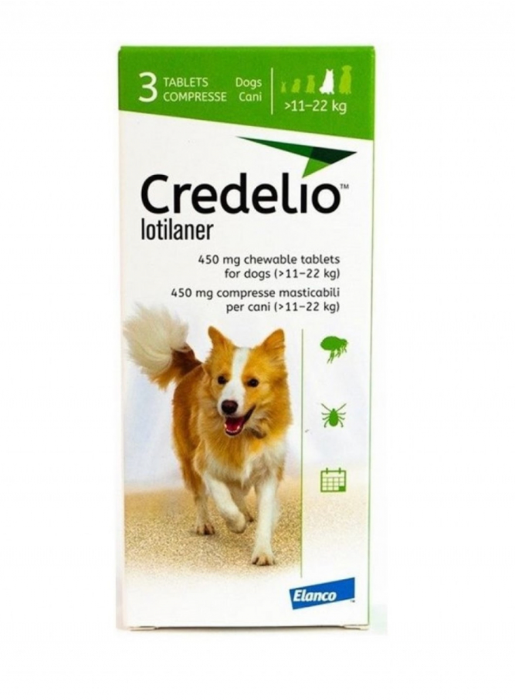
Produs
Descriere
Pret
Produs
Descriere
Pret
Credelio PLUS 56.25mg 1.4-2.8kg 3tb Galben
CREDELIO 56.25mg caini 1.3-2.5kg 3tb GALBEN
Comprimat masticabil pentru utilizare la
3 tb
Pentru tratamentul infestării cu purici și căpușe la
3 tb
câini cu sau expuși riscului de infestări/infecții
câini.Utilizați o combinație potrivită de concentrații
mixte cu căpușe, purici, nematode
disponibile astfel încât să atingeți doza
gastrointestinale, viermi cardiaci și/sau viermi
560 lei
recomandată de 20-43 mg/kg.Se administrează cu
480 lei
pulmonari.Se administrează cu hrana
hrana
Credelio PLUS 112.5mg 2.8-5.5kg 3tb Roz
3tb
CREDELIO 112.5mg caini 2.5-5.5kg 3tb ROZ
Comprimat masticabil pentru utilizare la câini
Pentru tratamentul infestării cu purici și căpușe
cu sau expuși riscului de infestări/infecții mixte
la câini.
3 tb
cu căpușe, purici, nematode gastrointestinale,
Utilizați o combinație potrivită de concentrații
viermi cardiaci și/sau viermi pulmonari.Se
disponibile astfel încât să atingeți doza
administrează cu hrana
665 lei
recomandată de 20-43 mg/kg.
Administrați comprimatul (comprimatele)
580 lei
masticabil(e) lunar, cu sau fără alimente.Se
administrează cu hrana
Credelio Plus 225 mg caini (5.5 - 11 kg) - 3
tablete
Comprimat masticabil pentru utilizare la câini
3 tb
CREDELIO 225mg caini 5.5-11kg 3tb PORTOCALIU
3 tb
cu sau expuși riscului de infestări/infecții mixte
Pentru tratamentul infestării cu purici și căpușe la
cu căpușe, purici, nematode gastrointestinale,
câini.Utilizați o combinație potrivită de concentrații
viermi cardiaci și/sau viermi pulmonari.Se
760 lei
disponibile astfel încât să atingeți doza
administrează cu hrana
recomandată de 20-43 mg/kg.Se administrează cu
hrana
610 lei
CREDELIO 450mg caini 11-22kg 3tb VERDE
3 tb
Credelio Plus 450/16.88 mg caini (11-22 kg) - 3
Pentru tratamentul infestării cu purici și
tablete
3 tb
căpușe la câini.Utilizați o combinație
Comprimat masticabil pentru utilizare la câini
potrivită de concentrații disponibile astfel
665 lei
cu sau expuși riscului de infestări/infecții mixte
cu căpușe, purici, nematode gastrointestinale,
încât să atingeți doza recomandată de 20-43
viermi cardiaci și/sau viermi pulmonari.Se
840 lei
mg/kg.Se administrează cu hrana
administrează cu hrana
CREDELIO 900mg caini 22-45kg 3tb
ALBASTRU
Pentru tratamentul infestării cu purici și
3 tb
căpușe la câini.Utilizați o combinație
Credelio Plus 900/33.75 mg caini (22-45 kg) - 3
tablete
potrivită de concentrații disponibile astfel
3 tb
Comprimat masticabil pentru utilizare la
încât să atingeți doza recomandată de 20-43
810 lei
câini cu sau expuși riscului de infestări/infecții
mixte cu căpușe, purici, nematode
mg/kg.Se administrează cu hrana
gastrointestinale, viermi cardiaci și/sau viermi
960 lei
pulmonari.Se administrează cu hrana
CREDELIO 12mg pisici 0.5-2kg 3tb MOV
Pentru tratamentul infestarii cu purici si
capuse la pisici.
3 tb
CREDELIO 48mg pisici 2-8kg 3tb TURCOAZ
Utilizati o combinatie potrivita de concentratii
Pentru tratamentul infestării cu purici și căpușe
disponibile astfel incat sa atingeti doza
la pisici.
recomandata de 6-24 mg/kg, pentru pisicile mai
500 lei
Utilizați o combinație potrivită de concentrații
mari de 8 kg.
Se administreaza doar la pisicile cu varsta de cel
disponibile astfel încât să atingeți doza
3 tb
recomandată de 20-43 mg/kg.
putin 8 saptamani si cu o greutate corporala de cel
Administrați comprimatul (comprimatele)
putin 0,5 kg.Se administrează cu hrana
640 lei
masticabil(e) lunar, cu sau fără alimente.Se
administrează cu hrana
Produs
Descriere
Pret
Produs
Descriere
Pret
Bravecto 1000 mg - tableta
Advocate 80 Pisica (4 - 8 kg), 3 pipete este un
masticabila antiparazitar extern
produs antiparazitar de uz extern si intern ,ce
3 tb
pentru caini de 20-40 kg.
contine imidacloprid, si este foarte eficient in
Tableta masticabilă cu Fluralaner, destinată
1tb
tratarea infestatiilor cu purici, pentru o perioada de
câinilor de talie medie (>10–20 kg), oferă
o luna dupa o singura administrare. Soluție
protecție eficientă împotriva puricilor și
antiparazitară spot-on cu **Imidacloprid și
670 lei
căpușelor timp de până la 12 săptămâni (8
**Moxidectin.
580 lei
săptămâni pentru Rhiphicephalus sanguineus).
Acționează rapid: 8 ore pentru purici și 12 ore
pentru căpușe, fiind utilă și în controlul
dermatitei alergice produse de purici (DAP).
Bravecto Antiparazitar Extern Câine Talie
Advocate pentru pisici < 4 kg este un produs
Foarte Mică 112.5 mg (2–4.5 kg) – 1 tabletă
antiparazitar de uz extern si intern ,ce contine
Tableta masticabilă cu Fluralaner, destinată
imidacloprid, si este foarte eficient in tratarea
3 tb
câinilor de talie medie (>10–20 kg), oferă
infestatiilor cu purici, pentru o perioada de o
protecție eficientă împotriva puricilor și
1 tb
luna dupa o singura administrare. Soluție
căpușelor timp de până la 12 săptămâni (8
antiparazitară spot-on cu **Imidacloprid și
săptămâni pentru Rhiphicephalus sanguineus).
**Moxidectin.
650 lei
Acționează rapid: 8 ore pentru purici și 12 ore
510 lei
pentru căpușe, fiind utilă și în controlul
dermatitei alergice produse de purici (DAP).
Bravecto 40–56 kg – 1 tabletă masticabilă x
1400 mg
Advocate 250 Câine (10–25 kg) – 3 pipete
Tableta masticabilă cu Fluralaner, destinată
Soluție antiparazitară spot-on cu **Imidacloprid
câinilor de talie medie (>10–20 kg), oferă
1 tb
(100 mg/ml)** și **Moxidectin (25 mg/ml)**,
protecție eficientă împotriva puricilor și
destinată câinilor între 4–10 kg. Oferă protecție
3 tb
căpușelor timp de până la 12 săptămâni (8
și tratament împotriva puricilor, viermilor
săptămâni pentru Rhiphicephalus sanguineus).
625 lei
cardiaci, viermilor intestinali rotunzi și cu cârlig,
Acționează rapid: 8 ore pentru purici și 12 ore
râiei sarcoptice și auriculare, demodeciei și
820 lei
pentru căpușe, fiind utilă și în controlul
păduchilor. Se aplică lunar pe pielea intactă, la
dermatitei alergice produse de purici (DAP).
baza gâtului sau pe spate.
Bravecto 250 mg soluție spot-on pentru câini
mici (>4.5–10 kg)
Tableta masticabilă cu Fluralaner, destinată
câinilor de talie medie (>10–20 kg), oferă
1 tb
Advocate 100 Câine (4–10 kg) – 3 pipete
protecție eficientă împotriva puricilor și
Soluție antiparazitară spot-on cu **Imidacloprid
căpușelor timp de până la 12 săptămâni (8
(100 mg/ml)** și **Moxidectin (25 mg/ml)**,
3 tb
săptămâni pentru Rhiphicephalus sanguineus).
destinată câinilor între 4–10 kg. Oferă protecție
530 lei
Acționează rapid: 8 ore pentru purici și 12 ore
și tratament împotriva puricilor, viermilor
pentru căpușe, fiind utilă și în controlul
cardiaci, viermilor intestinali rotunzi și cu cârlig,
dermatitei alergice produse de purici (DAP).
râiei sarcoptice și auriculare, demodeciei și
670 lei
păduchilor. Se aplică lunar pe pielea intactă, la
Bravecto 10–20 kg – 1 tabletă masticabilă x
baza gâtului sau pe spate.
500 mg
Tableta masticabilă cu Fluralaner, destinată
câinilor de talie medie (>10–20 kg), oferă
1 tb
protecție eficientă împotriva puricilor și
căpușelor timp de până la 12 săptămâni (8
săptămâni pentru Rhiphicephalus sanguineus).
Advocate 40 Câine (0–4 kg) – 3 pipete
550 lei
Acționează rapid: 8 ore pentru purici și 12 ore
Soluție antiparazitară spot-on cu **Imidacloprid
pentru căpușe, fiind utilă și în controlul
(100 mg/ml)** și **Moxidectin (25 mg/ml)**,
3 tb
dermatitei alergice produse de purici (DAP).
destinată câinilor între 4–10 kg. Oferă protecție și
tratament împotriva puricilor, viermilor cardiaci,
viermilor intestinali rotunzi și cu cârlig, râiei
sarcoptice și auriculare, demodeciei și păduchilor.
630 lei
Se aplică lunar pe pielea intactă, la baza gâtului
Foresto for Cats&Small dogs
sau pe spate.
Pentru tratamentul si prevenirea infestarii cu
purici si capuse. Reducerea riscului de infectare
660 lei
cu Leishmania infantum prin transmisie de către
flebotomii timp de până la 8 luni.
Advocate For Dog XL – 3 x 4 ml
Soluție antiparazitară spot-on cu **Imidacloprid
(100 mg/ml)** și **Moxidectin (25 mg/ml)**,
destinată câinilor între 4–10 kg. Oferă protecție
Foresto for Large Dogs
și tratament împotriva puricilor, viermilor
3 tb
Pentru tratamentul si prevenirea infestarii cu
cardiaci, viermilor intestinali rotunzi și cu cârlig,
purici si capuse. Reducerea riscului de infectare
râiei sarcoptice și auriculare, demodeciei și
930 lei
cu Leishmania infantum prin transmisie de către
790 lei
păduchilor. Se aplică lunar pe pielea intactă, la
flebotomii timp de până la 8 luni.
baza gâtului sau pe spate.


Produs
Descriere
Pret
Produs
Descriere
Pret
Drontal cat
Drontal este un agent antihelmintic cu
spectru larg care conține substanțele active
praziquantel, un derivat al
PerFect Trio cat
pirazinisochinolonei, și pirantel embonat,
PerFect Trio – picături aplicate spot on împotriva
puricilor, căpușelor și viermilor pentru pisici.
un derivat al tetrahidropirimidinei.
1 tab
Lichid uleios, de culoare galben deschis până la
Greutatea corporală a animalului | Tablete
galben-maro, cu un miros specific componentelor.
1,0-2,0 kg | 0,5
În timpul depozitării, este permisă apariția unui
2,1-4,0 kg | 1,0
40 lei
sediment ușor.
65 lei
4,1-6,0 kg | 1,5
Pisici cu greutatea între 4 și 10 kg: 1 pipetă de 0,8
6,1-8,0 kg | 2,0
ml. În cazul infestării cu căpușe, aplicați 1 picătură
direct pe căpușă și pe zona de atașare a acesteia.
Dacă nu se desprinde în 20 de minute, îndepărtați-
Nu se utilizează la pisoi cu greutatea de
o cu grijă folosind o pensetă.
până la 1 kg.
Drontal dog
Drontal Dog Flavour este un produs
antiparazitar intern pentru caini, care contine 6
tablete foarte eficiente impotriva viermilor
1 tab
PerFect Trio cat
rotunzi, lati si Giardia.Recomandari privind
PerFect Trio – picături aplicate spot on împotriva
utilizarea corecta: se administreaza 1
puricilor, căpușelor și viermilor pentru pisici.
tableta / 10 kg greutate corporala. Tabletele se
40
Lichid uleios, de culoare galben deschis până la
lei
administreaza direct sau pot fi amestecate in
galben-maro, cu un miros specific componentelor.
În timpul depozitării, este permisă apariția unui
mancare. Produsul se administreaza intr-o
sediment ușor.
singura repriza, fara repetare in zilele
60 lei
urmatoare. Impotriva viermilor de guineea si a
Pisici cu greutatea de până la 4 kg: 1 pipetă
teniei este suficient un singur tratament. Se
de 0,6 ml. În cazul infestării cu căpușe,
recomanda repetarea tratamentului trimestrial.
aplicați 1 picătură direct pe căpușă și pe
Drontal Dog Flavour XL 525/504/175 mg – 2
zona de atașare a acesteia. Dacă nu se
tablete
desprinde în 20 de minute, îndepărtați-o cu
Antiparazitar intern sub formă de tablete aromate,
grijă folosind o pensetă.
conținând Praziquantel (175 mg), Pyrantel
embonat (504 mg) și Febantel (525 mg), destinat
2 tb
câinilor de talie mare (35 kg). Eficient împotriva
viermilor rotunzi, viermilor cu cârlig, viermilor bici și
168 lei
teniilor, inclusiv Echinococcus. Se administrează într-
o singură doză (1 tabletă/35 kg), direct sau
amestecată în hrană, fără dietă prealabilă.
Tratamentul se repetă trimestrial pentru prevenție.
PerFect Trio dog 0.6ml
PerFect Trio – picături aplicate spot on împotriva
puricilor, căpușelor și viermilor pentru caini. Lichid
Pet Evolution suspension Dogs 10ml
uleios, de culoare galben deschis până la galben-
maro, cu un miros caracteristic componentelor. În
105 lei
timpul depozitării, este permisă apariția unui
Suspensie antiparazitară pentru
sediment nesemnificativ.
profilactica sau tratamentul parazițiilor
interni si externi la câini și pisici.
Se aplică produsul medicinal în următoarele doze:
- Câini cu greutatea de până la 4 kg: 1 pipetă de 0,6
60 lei
ml.
Pet Evolution suspension Dogs 20ml
- Câini cu greutatea între 4 kg și 10 kg: 1 pipetă de
0,8 ml.
- Câini cu greutatea între 10 kg și 20 kg: 1 pipetă de
1,6 ml.
Suspensie antiparazitară pentru
125 lei
- Câini cu greutatea între 20 kg și 40 kg:
combinație de pipete de 0,8 ml și 1,6 ml sau o
profilactica sau tratamentul parazițiilor
pipetă de 2,5 ml.
interni si externi la câini și pisici.
Pet Evolution suspension Cats 5ml
PerFect Trio dog 0.8ml
65 lei
Suspensie antiparazitară pentru
85 lei
profilactica sau tratamentul parazițiilor
PerFect Trio dog 1.6 ml
75 lei
interni si externi la câini și pisici.


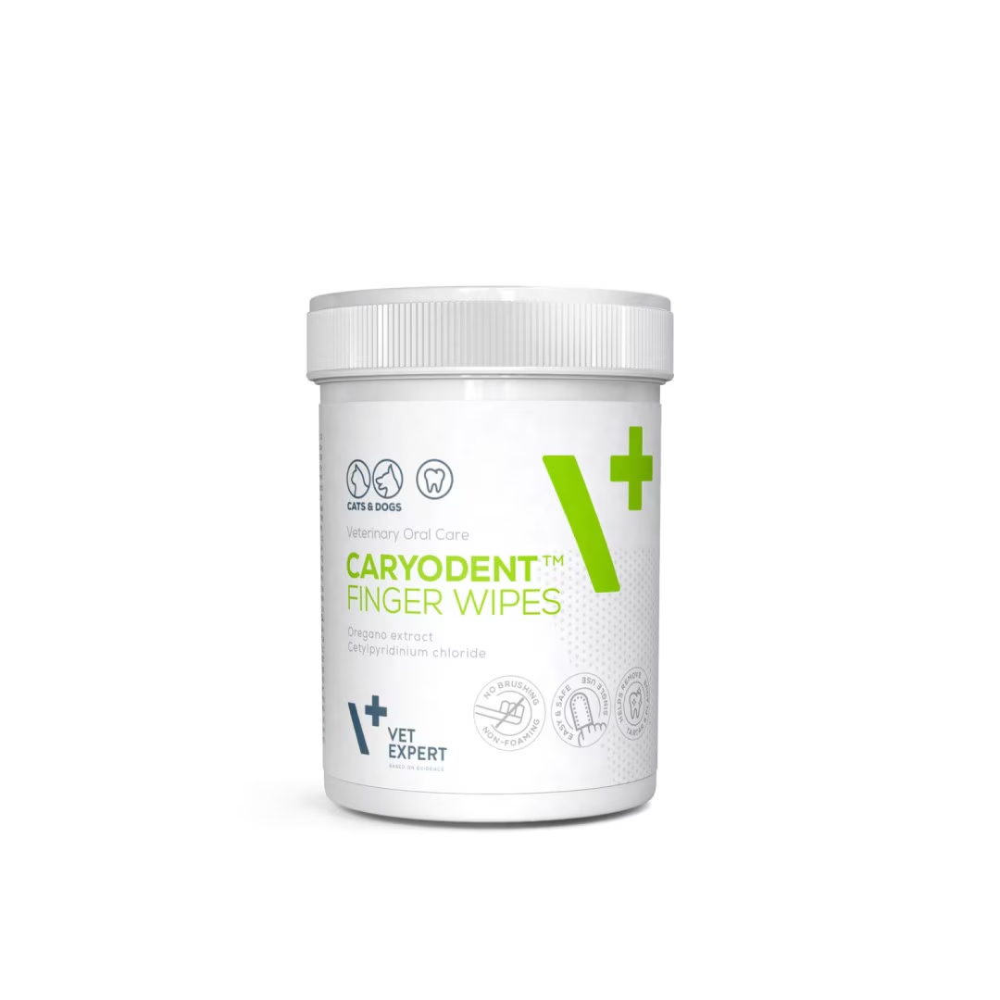
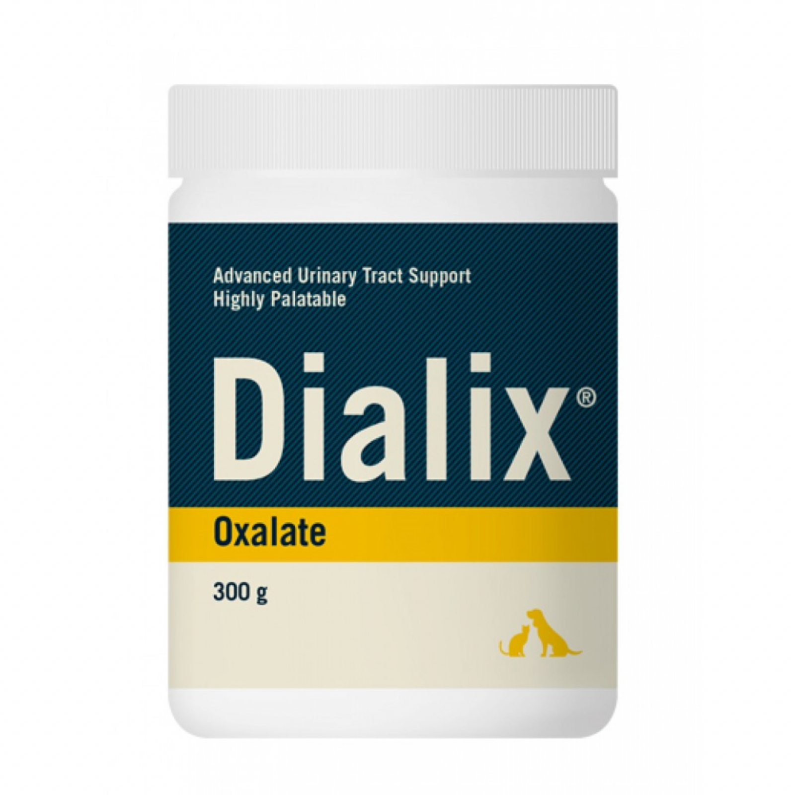
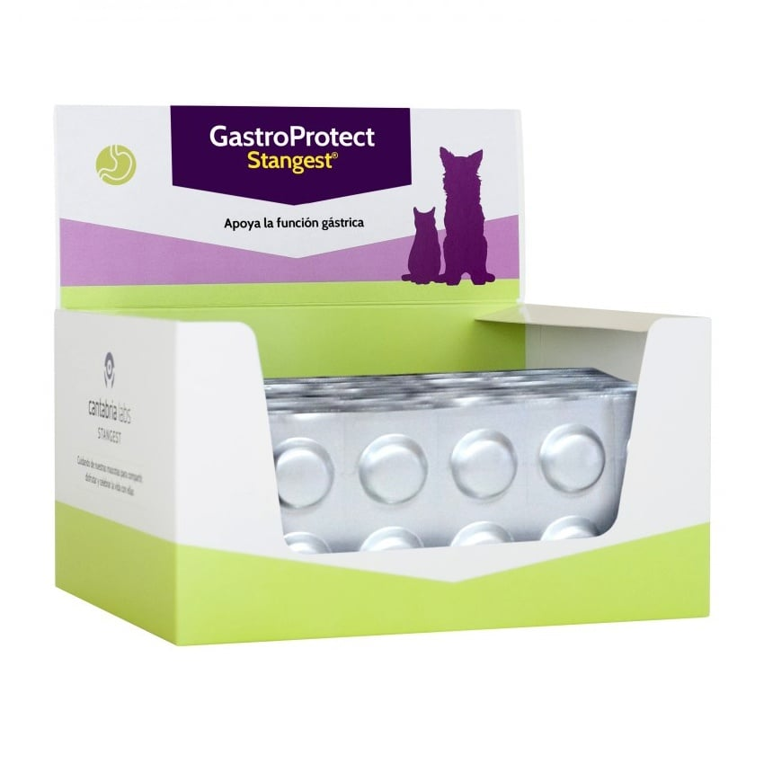
Produs
Descriere
Pret
Produs
Descriere
Pret
AlfaVet HA Picături Ochi – 10 ml
DIALIX Bladder Control este un supliment sub
Picături oftalmice destinate câinilor și pisicilor,
formă de comprimate masticabile pentru câini,
formulate pentru a calma, hidrata și proteja ochii
formulat pentru susținerea tonusului muscular al
împotriva iritației, roșeții, mâncărimii și încețoșării
vezicii urinare și al sfincterului, fiind util în special
60 tb
vederii. Conțin acid hialuronic, beta-glucan,
10 ml
pentru femele sterilizate și câini seniori. Conține un
clorură de sodiu (efect antiinflamator cornean), și
nivel ridicat de fitoestrogeni din soia (Glycine max)
caprylyl glicol (emolient cu acțiune
și trifoi roșu (Trifolium pratense), care acționează
antimicrobiană). Soluție apoasă, izotonică, cu pH
142 lei
asupra receptorilor estrogenici responsabili de
820 lei
7,2, fără conservanți, cu vascozitate apropiată de
controlul vezicii. Este un produs natural, sigur
cea a lacrimilor naturale. Potrivit și pentru
pentru utilizare pe termen lung și are un gust
animalele sensibile. Se prezintă sub formă de
plăcut, ușor de administrat zilnic.
flacon cu pipetă de 10 ml.
Caryodent® Enzymatic Spray este un produs
pentru igiena orală a animalelor de companie, ideal
Dialix Lespedeza Plus 5 pentru rase mici este un
pentru cei care nu tolerează periajul dentar. Are o
supliment alimentar sub formă de tablete
acțiune triplă: dizolvă placa bacteriană existentă
masticabile, destinat susținerii funcției renale la
(prin enzime naturale), inhibă formarea plăcii noi
75 g
câinii cu boli cronice de rinichi. Conține Lespedeza
60 tb
(cu beta-cariofilenă) și menține echilibrul
capitata (300 mg/tabletă), care crește diureza și
microbiomului oral, oferind și respirație proaspătă
reduce uremia, având efect vasodilatator renal și
(prin extract de salvie).Utilizare: Se aplică zilnic, 1–
stimulând parenchimul renal. Formula este foarte
795 lei
2 doze pe fiecare parte, direct spre dinți și gingii.
210 lei
sigură, testele de toxicitate subacută și cronică
Nu necesită clătire.
neindicând reacții adverse.
Vet Expert Caryodent Enzymatic Toothpaste este
Dialix Oxalate Hrană complementară dietetică sub
o pasta de dinti pentru caini si pisici conceputa
formă de granule gustoase, formulată pentru a
pentru igiena orala zilnica si prevenirea bolilor
sprijini gestionarea uroliților de oxalat de calciu,
parodontale.Aceasta dizolva placa bacteriana prin
cistină și urați. Conține citrat de potasiu (300 mg/
enzime remineralizeaza si protejeaza smaltul
5g) cu rol chelator al calciului și efect alcalinizant
300 g
dentar cu ajutorul hidroxiapatitei mentine echilibrul
asupra urinei, precum și acizi grași Omega-3 (EPA,
microbiomului oral datorita prebioticelor si reduce
50 ml
DHA, ALA) și extract de Vaccinium macrocarpon.
inflamatia oferind totodata o respiratie proaspata
176 lei
Alcalinizează urina, reduce formarea cristalelor și
740 lei
prin uleiuri esentiale.Este indicata pentru
sprijină managementul acidozei metabolice. Se
prevenirea gingivitei a tartrului si pentru mentinerea
administrează 1 lingură (5g) la 5 kg greutate
unei cavitati orale sanatoase.
corporală, conform recomandării medicului
veterinar. Potrivit ca adjuvant pentru dietele urinare.
Enzivet - Blister 10 tablete este un supliment
alimentar pentru câini și pisici pe bază de enzime
vegetale recomandat în cazuri de pancreatită
Vet Expert Caryodent Proliqua este un aditiv oral
exocrină și malabsorbție favorizează digestia și
pentru caini si pisici care sustine sanatatea cavitatii
crește biodisponibilitatea nutrienților conține enzime
bucale si previne bolile parodontale contine
extrase din ciuperci active într-un spectru larg de
10 tb
ingrediente active precum beta cariofilena cu efect
250 ml
pH fără a necesita protecție gastrică compoziție pe
antibacterian si antiinflamator extract de alge brune
tabletă alfa-amilază 1550 UI lipază 1000 UI
care reduce tartrul si mirosurile neplacute extract
protează 400 UI beta-xilanază 200 UI beta-
de rodie cu efect antioxidant si prebiotice ce mentin
80 lei
glucanază 137 UI susține digestia reduce flatulența
echilibrul microbiomului oral este recomandat
185 lei
mirosul neplăcut pierderile în greutate afecțiunile
pentru prevenirea placii dentare a tartrului si
pielii și căderea părului administrarea se face
afectiunilor gingivale fiind sigur si pentru animalele
amestecând cu hrana umedă cu 30 minute înainte
sensibile
de masă
GastroProtect este un supliment nutritiv destinat
Servetelele umede pentru degete Vet Expert
câinilor și pisicilor care protejează și reface
Caryodent sunt solutii de curatare pentru igiena
mucoasa gastrică fără a crește pH-ul gastric și fără
orala la caini si pisici imbibate cu clorura de
a conține aluminiu oferă acțiune antiinflamatoare
cetilpiridiniu si ulei de oregano sursa de beta
calmantă antioxidantă și protectoare menținând
cariofilena optimizeaza microbiomul oral si sustin
condițiile optime pentru digestie conține ingrediente
sanatatea gingiilor textura servetelului maseaza
10 tb
naturale precum MSM 250 mg Fucus vesiculosus
delicat dintii si gingiile fara a necesita periaj
50 buc
250 mg Lion’s Mane 250 mg licorice deglicirizată
compozitia include clorura de cetilpiridiniu pentru
125 mg N-acetilcisteină 125 mg zinc chelator 125
163 lei
reducerea placii dentare acid citric pentru
148 lei
mg și gamma orizanol 100 mg recomandat pentru
echilibrarea pH-ului si ulei de oregano pentru
afecțiuni gastrice fără a interfera cu absorbția
protectia mucoasei orale se folosesc prin aplicare
nutrienților sau funcția renală administrarea
directa pe deget si masare usoara a dintilor pot fi
utilizate zilnic la caini si catei peste 10 saptamani
Dialix Lespedeza Plus 5 pentru rase
medii/ mari Supliment dietetic pentru
Milkan Formula-400g+biberon
sprijinul functiilor renale în cazul afectiunilor
Formulă solubilă de lapte praf conține
renale cronice la caini si pisici. CaCO3
60 tb
proteine, vitamine și oligoelemente care
400 g
150mg-reduce absorbtia fosforului enteric.
revitalizează și garantează o bună
350 lei
Conține flavonoide care produc vasodilatatie
dezvoltare încă din prima zi. Indicată atât
renala si stimuleaza parenchimul renal.
960 lei
puilor încă din prima zi de viață, cât și
femelelor gestante și animalelor în vârstă.

Produs
Descriere
Pret
HISTAMIN CONTROL COFACTORI NUTRITIONALI
supliment natural pentru câini și pisici, util în
reducerea reacțiilor alergice și a producției de
10 tb
histamină, ameliorează alergii alimentare, astm,
rinită alergică, eczeme și urticarie, reduce inflamația
și congestia căilor respiratorii, susține imunitatea și
scade mâncărimile în dermatite alergice;
92 lei
Produs
Descriere
Pret
administrare: 1 tabletă/10 kg greutate, de 2 ori/zi,
timp de 3–8 săptămâni sau mai mult la nevoie.
KRILLVET este un supliment nutritiv pe bază de ulei
de krill cu absorbție superioară față de uleiul de
pește recomandat pentru câini și pisici susține
sănătatea cardiovasculară reduce inflamațiile
calmează durerile articulare sprijină funcția cognitivă
120 cap
și ajută în keratoconjunctivita SICCA fiecare capsulă
conține 500 mg ulei de krill cu fosfolipide omega-3
>70% 120 mg acizi grași omega-3 120 mg EPA 32.5
990 lei
mg DHA și 25 mcg astaxantină doza este de 1
capsulă / 10 kg / zi administrarea se face la
recomandarea medicului veterinar
NEUROVET este un supliment nutritiv recomandat
câinilor și pisicilor ca adjuvant în tratamentul
polineuropatiilor și altor afecțiuni neurologice oferă
aport de antioxidanți aminoacizi esențiali și vitamine
60 tb
din complexul B necesari funcționării corecte a
sistemului nervos contribuie la sinteza serotoninei și
dopaminei susține funcția cognitivă la animalele în
500 lei
vârstă și reduce procesul de îmbătrânire cerebrală
datorită fosfatidilserinei este util ca suport în tratarea
epilepsiei
Pet Phos Canin Special Pelage este un supliment
Carbon Training Pads
vitaminizant destinat câinilor care susține sănătatea
pielii și strălucirea blănii conține minerale drojdii
450 tb
Carbon Training Pads sunt covorașe absorbante pentru dresajul cățeilor,
grăsimi și subproduse din carne acizii grași
nesaturați precum acidul linoleic mențin hidratarea
2280 lei
dotate cu tehnologie cu carbon activ pentru neutralizarea mirosurilor
pielii și previn apariția mătreții vitamina A sprijină
regenerarea pielii și întărește imunitatea vitamina E
neplăcute. Sunt prevăzute cu benzi adezive pentru fixare și sunt
protejează celulele și împiedică oxidarea acizilor
50tb
disponibile în mai multe dimensiuni, în funcție de nevoile fiecărui animal de
grași nesaturați complexul de vitamine B susține
creșterea părului textura pielii și are efect
490 lei
companie.
antiseboreic biotina stimulează regenerarea firului de
păr
Pet Phos Ca/P 1.3, 100 Tablete Aliment
100 tb
complementar destinat cateilor in crestere, catelelor
gestante,femelelor in lactatie si cainilor adulti active
hraniti cu mancare industriala clasica pentru adulti.
310 lei
Carbon Training Pads 45*33cm + stichere 10buc
40 lei
Essential
Pet Phos Croissance Ca/P=2 este un supliment
Carbon Training Pads 60*45cm + stichere 10buc
56 lei
dietetic sub formă de tablete, destinat cățeilor
în creștere și cățelelor aflate în perioada de
Essential
lactație, care sunt hrăniți cu mâncare
preparată în casă. Formula este adaptată
Carbon Training Pads 90*60cm + stichere 10buc
92 lei
pentru câini de talie mică și medie (greutatea
Essential
adultului sub 25 kg).Conține un amestec
echilibrat de minerale, vitamine și
500 tb
Carbon Training Pads 90*60cm + stichere 30buc
340 lei
aminoacizi esențiali, necesari pentru
1525 ei
dezvoltarea armonioasă a sistemului osos,
funcționarea ficatului și menținerea sănătății
pielii și blănii.


Produs
Descriere
Pret
Produs
Descriere
Pret
HEPATIALE FORTE
6 blistere X 10
BIOPROTECT
Small Breed & Cats
tab
HEPATIALE FORTE
BIOPROTECT PASTA
40 caps TWIST OFF
1 caps/ zi
Compozitie: 2.20.1 ulei rafinat de
Probiotice
540 lei
(Lactobacillus acidophilus, Enterococcus
Seringa 15 ml
soia Glycine max. (L) Merr.,
1 caps/ 5 kg
faecium, Bifidobacterium longum, Lactobacillus 1 gradatie/ 5 kg/
2.21.1 lecitina bruta, 9.3.1 ceara
rhamnosus, Oligosacharide mananno)
zi/
de albine.
HEPATIALE FORTE
Tulburari ale microflorei gastrointestinale,
40 tabs
cauzate de diaree, terapii cu antibiotice sau
Aditivi (g/kg): 2b17005 acid L-
deparazitari interne.
aspartic.
228 lei
1 tab/ 15 kg
BIOPROTECT ULTRA
Yarrowia lypolitica, galactooligozaharide, butirat
Se recomanda in sprijinul
de sodiu microîncapsulat, stearat de magneziu,
30 CAPS
functiilor hepatice si
HEPATIALE FORTE
Limosilactobacillus reuteri 60 mg (6 x 109 UFC),
recuperarea acestora dupa
Large Breed
Lactobacillus acidophilus 50 mg (5 x 109 UFC),
460lei
afectiuni hepatice grave, la caini
Flacon 40 tab
Enterococcus faecium 5 mg (5 x 10⁸ UFC),
&
600 lei
L-triptofan 50 mg.
si pisici.
1 tab/ 25 kg
Pentru restabilirea echilibrului microbiomului
Bioprotect
intestinal și la buna funcționare a barierei
60 CAPS
intestinale în cazul disbiozei gastrointestinale.
HEPATIALE FORTE ADVANCED
Utilizați ca suport pe termen lung în cazurile de
405 lei
2.21.1 lecitine crude, 11.2.10 stearat de
funcționare anormală a tractului digestiv, în
magneziu, 3c301 DL-metionina 362.3g, 3b603
special a pancreasului și în enteropatii de diverse
oxid de zinc 21.7g. Aditivi senzoriali (g/kg):
30 tabs
origini..
2b7005 acid L-aspartic 126.8g, 2b extract de
ciulin de lapte Silybum marianum (L.) Gaertn.
815lei
90.6g. Aditivi tehnologici (g/kg): 1E460
1 tab/ 10 kg, zi
celuloza microcristalina 253.6g..
Pisici: ½ tab/ zi
Cea mai completa formula pentru
combaterea afectiunilor hepatice la caini si
se recomanda pentru caini si pisici, pentru a
300lei
pisici.
sustine functiile ficatului in caz de tulburari sau
caderi hepatice.
KalmVet Advanced este un supliment anti-stres
HEPATIALE FORTE LIQUID
pentru câini și pisici, cu efect calmant și anti-
Se recomanda in sprijinul functiilor hepatice
anxietate rapid datorat valerianei și L-teaninei, iar
si recuperarea acestora dupa afectiuni
efect de durată prin Rhodiola rosea și L-triptofan,
hepatice grave.
Flacon 250 ml
precursorul serotoninei. Produsul reduce stresul,
13.2.2 dextroză, 13.5.5 sorbitol, 13.11.1 1,2-
5 ml/ 10 kg gc
anxietatea, agresivitatea și sensibilitatea la factori
60 CAPS
propandiol, 11.4.7 citrat de sodiu.
externi, îmbunătățind în același timp funcțiile
670 lei
Aditivi nutriționali (mg/l): 3a910 L-carnitină
437lei
cognitive. Fiecare capsulă TWIST-OFF conține L-
3500 mg, 3a890 clorură de colină 3000 mg,
triptofan 150 mg, Rhodiola rosea 50 mg, Valeriană 40
3a920 betaină anhidră 2500 mg, 3a826
mg și L-teanină 20 mg**. Se administrează 1 capsulă
vitamina B2 1000 mg, 3a831 vitamina B6 750
pe zi pentru pisici și câini până la 15 kg.
mg. Aditivi senzoriali: arome.
Specii tinta: caini
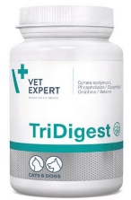


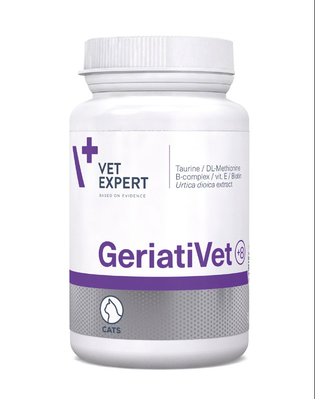
Produs
Descriere
Pret
Produs
Descriere
Pret
VETOMUNE 60 caps
TRI DIGEST
Beta- glican
TWIST OFF
Produs dedicat stimularii
HMB
40 tabs
1 caps / 15 kg
functionarii corecte a secretiilor
Stimuleaza cresterea imunitatii
1 tab/ 15 kg gc
gastrice, pancreatice si biliare.
atat la nivel humoral, cat si la
550 lei
Betaina, Anghinare,
450l ei
nivel celular.
Licorice,
VIUSID PETS
Flacon 30 ml
Fosfolipide, Ornitina
Eficienta dovedita
impotriva infectiilor virale.
125lei
Stimuleaza sistemul imunitar,
DIARVET PASTA
apetitul si reduce stresul
Bentonita, Cicoare (FOS), Tanini, Pectine
Seringa 20 g
Flacon 150 ml
(mere), Vit A, Dextroza, Malt
1 gram/ 10 kg
oxidativ. Sprijina vindecarea
Sprijin in tratamentele pacientilor afectati de
(3 ori pe zi)
rapida dupa interventii
1 ml/ 5kg gc/ 12
diaree acuta sau severa. Pasta palatabila!
chirurgicale. Indicat femelelor
ore
gestante pentru a transmite
COPROVET- VETEXPERT
imunitatea catre pui!
396 lei
Formula pentru combaterea
VIUSID PETS DETOX
cauzelor care provoaca
Formula lichida cu efect detoxifiant,
antioxidant, imunomodulator! Contine
Flacon 30 ml
coprofagia la caini si pisici.
30 caps
antioxidanti, prebiotice si probiotice care
Regularizeaza procesele
1 caps/ 10 kg/ zi
ajuta la eliminarea toxinelor din organism si
Flacon 150 ml
digestive, stimuleaza microflora
196lei
sprijina organele responsabile cu aceste
procese. Indicat pentru r
estabilirea florei
bacteriana si elimina mirosurile
intestinale dupa tratamente, pentru a combate
1 ml/ 5kg gc/ 12 ore
neplacute. Bromelaina, FOS,
perioade stres sau pentru a intari sistemul
Probiotice si extract de Yucca.
imunitar.
Geriativet Dog SB–
Flacon 30 ml
45 tabs
GERIATIVET DOG
CARMINAL
1 tab/ 7,5 kg
Actioneaza asupra tractului intestinal -reduce
Glucozamina, Carnitina-L,
aciditatea, fermentatia si balonarea. Efect
125 lei
Luteina
Geriativet Dog LB- 45
antispastic (impiedica voma/diareea). Ajuta la
Omega 3, Acid alfa lipoic
ta
b
s
eliminarea gazelor. Ingrediente: aloe vera,
glutamina, Vit. B, L-Carnozina, Zinc, Fenicul
Flacon 150 ml
In tratarea tulburarilor specifice
1 ml/ 5kg gc/ 12 ore
inaintarii in varsta
1 tab/ 15 kg
Flacon 30 ml
368 lei
OBEX
Sprijina scaderea in greutate fara efecte
GeriatiVet CAT Geriativet CAT-
secundare! Regularizeaza metabolismul
125 lei
carbohidratilor si al lipidelor.Diminueaza riscul
Dedicat pisicilor geriatrice pentru a 60 caps TWIST OFF
de crestere in greutate si controleaza apetitul.
preintampina bolile asociate cu
Fructe acai, Faseolamina, Cafea verde, Acid
Flacon 150 ml
avansarea in varsta (care necesita
1 caps / 5 kg/ zi
Folic, Arginina, Vit.B6 (piridoxal), Carnitina
1 ml/ 5kg gc/ 12
suplimentare specifica pentru reducerea
Fumarat, Colina, Inositol, Inulina, Ornitina,
ore
riscurilor de aparitie a afectiunilor
relationate cu inaintarea in varsta).
520 lei
Oncovet este un supliment nutritiv pentru câini și pisici
afectați de cancer, conceput pentru a sprijini detoxifierea
Oncovet II Pudră este un supliment alimentar pentru
organismului și eliminarea celulelor tumorale. Conține L-
câini și pisici de orice vârstă, recomandat în afecțiuni
glutamină, care susține funcția imunitară, protejează
oncologice și în cazuri de deficiențe nutriționale greu de
mucoasa intestinală și participă la formarea aminoacizilor
10 tab
corectat. Este benefic în timpul și după chimioterapie,
și nucleotidelor esențiale, precum și extract de Silybum
80 lei
radioterapie sau intervenții chirurgicale, contribuind la
120 gr
marianum(armurariu), bogat în silimarină, ce crește
refacerea organismului. Conține aminoacizi (arginină,
nivelul glutationului cu până la 50% și stimulează
410 lei
lizină, prolină) și vitaminele B3, C, D3 și K3, care
activitatea superoxid-dismutazei, principalul antioxidant
reduc efectele secundare ale tratamentelor, întăresc
endogen.
sistemul imunitar și diminuează riscul recidivelor. Se
recomandă utilizarea în asociere cu Oncovet I.


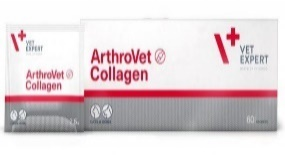


Produs
Descriere
Pret
Produs
Descriere
Pret
Arthrovet
Hidroclorit de glucozamina
ASBRIP
Flacon 30 ml
Sulfat de condroitina
Sprijin terapeutic impotriva tusei de
95 lei
Hialuronat de sodiu
60 tabs
canisa, afoniei, laringitei si a altor afectiuni
respiratorii. Ingrediente: Menta, Eucalipt,
Vitamina C
90 tabs
Acid Fumaric, Acid Ascorbic, Acid
Flacon 150 ml
Tratarea/ preventia diverselor
1 tab/ 20 kg
Malic,Aroma de ficat, Sorbat de Potasiu, 1 ml/ 5kg gc/ 12 ore
tulburari in functionarea normala a
Benzoat de Sodiu, Apa
cartilajelor si articulatiilor
Arthrovet Complex
Plaque OFF
Alga Ascophyllum Nodosum
20 g granule
Hidroclorit de glucozamina,
Minerale si oligoelemente
Sulfat de condroitina,
60 caps TWIST
Vitamine: C, E, A, D
250 lei
Hialuronat de sodiu, Vit C,
OFF
Fibre, Polizaharide. Impiedica formarea
tartrului si a placii bacteriene, elimina mirosul ½ sau 1 doza/ zi pt 6-9
Carnitina L, Gluconat de
1 caps / 5 kg
neplacut din cavitatea bucala.
luni
Mangan, Gluconat de zinc
lingurita de dozare in ambalaj!
Tratarea/preventia diverselor
545 lei
tulburari in functionarea normala a
Cardiovet 770mg
cartilajelor si articulatiilor
Taurina, Seleniu
90 tabs
Vitamina E, Tartrat L-carnitina
1 tab / 15 kg
Tratarea cainilor care sufera de
60 plicuri x 2,5g
Arthrovet COLLAGEN II
cardiomiopatie, cauzata atat de
1 plic / 20 kg
cardiomiopatie dilatativa cat si de regurgitare
530 lei
Colagen obtinut prin hidroliza
mitrala.
enzimatica.
10 lei
Flacon 30 ml
KARDIOLI
Imbunatateste functiile cardiace, tiroidale,
FOLREX
Flacon 30 ml
previne hipertensiunea si arterioscleroza,
Functie condroprotectoare si
sprijina recuperarea muschilor cardiaci si
125 lei
absorbtia glucozei in sistemul nervos. Clorura de
regeneratoare pentru articulatii. Se
Flacon 150 ml
Mg, Creatina, Taurina, L-Prolina, L-Lizina, extract
recomanda ca sprijin in tratarea displaziilor,
de affine, Carnitina, Zinc, Acid folic, Acid
Flacon 150 ml
artritelor si artrozelor.Poate fi administrat
alfalipoic, Potasiu, Biotina, Vit B (2.6.12), Cu,
pentru controlul durerii si a inflamatiilor
1 ml/ 5kg gc/ 12 ore
Pantonat de Ca, Benzoat de sodiu,
1 ml/ 5kg gc/ 12
aroma de ficat.
asociate cu interventiile ortopedice. Chitina Pentru iepuri si rozatoare
ore
hidrolizata, Maltodextrine, Arginina, Acid
mici
Folic, L-Cisteina,
1 ml/ 12 ore
Flacon 30 ml
DIAMEL
Stimuleaza metabolismul pancreatic, regleaza
KALSIS
Flacon 30 ml
tensiunea arteriala si reduce posibilitatea aparitiei
125 lei
Formula special creata pentru
de complicatii vasculare. Sprijina normalizarea
nivelurilor de glucoza, colesterol, acid uric si
consolidarea fracturilor si tratarea
125 lei
trigliceride in doar 8 saptamani! Merisor,
Flacon 150 ml
afectiunilor osoase metabolice. Incurajeaza
Maltodextrine, Acid Fumaric, L-Carntina, Ornitina, L-
vindecarea osoasa si reduce pierderea
Cisteina,
1 ml/ 5kg gc/ 12
masei osoase. Clorura de Calciu, Clorura de
Flacon 150 ml
ore
Magneziu, Aditivi: Vitamina C, Arginina,
1 ml/ 5kg gc/ 12 ore
INMUNOFERON VET este un supliment nutritiv
pentru câini și pisici, conceput pentru întărirea și
echilibrarea sistemului imunitar. Conține AM3,
betacaroten, drojdie de bere, quinoa germinată, α-
glucomanan din Candida utilis, ulei de floarea-soarelui
și trigliceride din cocos. Fiecare tabletă (2 g) oferă
beta-caroten 50 mg, L-arginină 50 mg, glicină 100 mg,
10 tab
extract de echinacea 100 mg, zinc 10 mg, mangan
260 lei
832 pg și alfa-tocoferol 20 mg. Componentele analitice
includ 23,2% proteină brută, 32,4% cenușă brută,
8,28% fibră brută și 5,13% grăsimi brute. Doza
recomandată este de 1 comprimat/20 kg greutate
corporală pe zi (sau ¼ comprimat la 5 kg).


Produs
Descriere
Pret
Produs
Descriere
Pret
NEUROSUPPORT
pentru a sprijini functionarea optima a
Urinovet DOG
sistemului nervos la caini si pisici si pentru
45 capsule
suportul animalelor in varsta care sufera de
TWIST OFF
Extract de merisor
400mg X 30tab
afectiuni cognitive si alte tipuri de deficiente
Extract de patrunjel
1 tab / 10 kg
fiziologice care apar in timpul procesului de
Glucozamina
imbatranire. Ulei de peste, acid stearic,
1 caps / 10 kg
315 lei
mono-, di- si trigliceride, acerola,craita
499 lei
Sprijina functionarea normala a
(Tagetes erecta) – sursa de zeaxantina si
sistemului urinar la caini.
luteina, lecitina din soia.
ALZER
Flacon 30 ml
Urinovet CAT
45 caps
SINDROMUL DISFUNCTIEI COGNITIVE (SDC)
Merisor, Patrunjel,
reprezinta echivalentul canin al bolii
TWIST OFF
Alzheimer. ALZER pets contine antioxidanti
125 lei
Glucozamina, Valeriana, Roinita.
1 caps / zi
si acizi grasi benefici in lupta impotriva
Sprijina functionarea normala a
acestui proces neurodegenerativ.
sistemului urinar la pisici.
440 lei
Antioxidanti, Ginkgo-Biloba, Carnitina-L-
Flacon 150 ml
acetyl, acid lipoic si Vitamina E
1 ml/ 5kg gc/ 12 ore
Urinovet CAT DILUTION
KalmVet
Dl-Metionina 250mg
Uleiuri din seminte si fructe si produsele lor
60 caps TWIST OFF
Glucozamina
derivate. Chamomilla recutita ,
45 caps
Vit. C, B6 Extract natural de
Valeriana officinalis, Tryptophan
TWIST OFF
Pentru calmarea stresului si anxietatii animalelor
1 caps / 10 kg
urzica, merisor, valeriana
de companie in perioade de stress (mutari,
Cea mai complexa formula de
separari, petreceri, furtuni, etc)
580 lei
2 caps / zi.
sprijina pt functionarea normala
445 lei
OCOXIN
a sistemului urinar la pisici.
Flacon 30 ml
Reduce efectele secundare post-operatorii,
Contine subst. care acidifiaza
previne recidiva si imbunatateste calitatea vietii
animalului.
urina.
Actiune antimutagenica si anticarcinogenica.
Flacon 150 ml
Glucozamina, Ceai verde, Scortisoara, Acid malic,
Acid ascorbic, Acid FolicSulfat de Zinc, Glicina,
60 caps
Cisteina
1 ml/ 5kg gc/ 12 ore
RenalVet TWIST OFF 1
Small Breed 255
Carbonat de Calciu
caps/ 10 kg
Chitosan ,Vitamina D3
mg 3
ProlactiNO
Indicat in cazurile de IRC la caini si pisici.
blistere X10 tab
550 lei
Extracte naturale
250 lei
fructul castitatii, Castanea sativa
1 tab / 5 kg
RENALOF
Taraxacum officinale,
Large Breed
Sprijina eliminarea a
Flacon 30 ml
Petroselinum
1010mg struvitilor si oxalatilor de calciu din
Indicat in stoparea lactatiei false la
40 tabs
tractul urinar si previne cistitele
115 lei
catele
1 tab / 15 kg
recurente. Calmeaza durerile
370 lei
lombare, atenueaza dysuria si
Flacon 150 ml
hematuria.
1 ml/ 5kg gc/ 12
Agropyron repens (Pir),
ore
Maltodextrine,
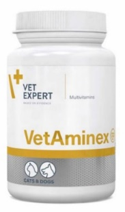


Produs
Descriere
Pret
Produs
Descriere
Pret
Suplimente lichide SHED -X
SHED-X CAT- 237 ml
SHED-X SMALL DOG 237 ml
60 caps TWIST
Formule lichide, impotriva
SHED-X MEDIUM DOG- 473 ml
VETAMINEX
OFF
naparlirii excesive!
Doza echilibrata si atent
Efect garantat in 3-6
selectionata de vitamine si minerale. Pisici – 1 caps / la 2
saptamani!
Este recomandat in echilibrarea
zile
Ulei de ansoa norvegiana, Ulei
aportului nutritiv a cainilor si
Caini - 1 caps/10 kg
de sardine norvegiene, Zinc,
pisicilor ce traverseaza perioade cu
gv/ zi
Biotina, Ulei din seminte de in,
necesar nutritional crescut.
350lei
Ulei din germeni de grau
SHED-X LARGE DOG- 947 ml
VITAVET Complex
Vitamine: A, E, D, B6
Complex de vitamine si
Raportul ideal Omega-3/
60 tabs
Omega-6, antioxidanti,
minerale indicat animalelor de
toate varstele ce sufera de
1 tab/ 10 kg
vitamine si minerale
anemie sau avitaminoza.
pentru a combate naparlirea
HemoVET
excesiva.
VetoSkin Ultra
4 blistere x 15
Fier Hemic,
Formula inovatoare cu un spectru larg de
tab
activitate în domeniul susținerii, protecției
Cupru (agent chelator)
1 tab/ 10 kg / zi
și sănătății pielii hipersensibile și atopice.
Vitamina B6,Vit. B12, Acid
VetoSkin Ultra are o acțiune bidirecțională:
Folic,Vit. C
260 lei
susține funcțiile de protecție împotriva
efectelor iritanților și susține funcția
60 caps TWIST
Indicat in anemii
barierei hidrolipidice a pielii.
OFF
DICALFON &
DICALFON
Palmitoiletanolamidă micronizată,
pisici și câini până la 15 kg
DICALFON Large BREED
Flacon 100 tab
ulei de peste, ulei rafinat de borago
g.c. – 1 capsulă pe zi
Borago officinalis, ulei rafinat de semințe
(CALCIO & PHOSPHORO)
de coacăze negre Ribes nigrum L.,
544lei
260lei
monostearat de glicerol, lecitine brute.
Calciu si Fosfor organic
CurQfen® (2b163-ex extract de rizomi
uscați de Curcuma longa L. și 2b extract
pentru femele gestante si pui.
1 tab/ 10 kg
de schinduf Trigonella foenum-graecum,
Indispensabil in primele luni de
Biotina, Oxid de Zinc, Vit. B 2,12,1,6
viata.
VETOSKIN
Indicat atat femelelor gestante
DICALFON
Ulei de peste, Zinc, Biotina,
cat si puilor in timpul cresterii
LARGE BREED
Ulei de borago
60 caps TWIST OFF
Dicalcium fosfat deshidratat,
Flacon 120 tab
Vit B1 ,B2 , B6 , B12
Gluconat de Calciu,
360 lei
In tratarea afectiunilor
480 lei
Soia,Lactoza,Arome,
1
ta b/ 30 kg
dermatologice (simptome ce
Vitamina A, Vitamina D3,
includ piele
1 caps / 15 kg
Vitamina E
uscata,exfolianta,caderi
VIEWVET
excesive de par)
Combaterea afectiunilor oculare
la caini si pisici!
4 5 c a psule TWIST
Taurina, Turmeric, Zinc,
OFF
VETOSKIN Small Breed
Ulei de coacaze negre
60 caps TWIST
Luteina, Zeaxanthina,
Ulei de peste, Zinc, Biotina, Ulei de borago
OFF
Seleniu, Vit. C, Vit. E, Vit. A,
500 lei
Vit B1 ,B2 , B6 , B12
In tratarea afectiunilor dermatologice (simptome
Vit. B1,B3, B5, B6, B12, DHA
ce includ piele uscata,exfolianta,caderi excesive
de par, dermatoze, dupa tratamente
si EPA
1 caps/ 10 kg gc
dermatologice)
1 caps/ 5 kg/zi
Extract de ceai verde, Extract
de struguri, Biotina, Acid folic

Produs
Descriere
Pret
Produs
Descriere
Pret
ProstaDog Suport
150 g 60 tablete
este un supliment nutritiv cu agenţi
90 de tablete
ChitoVet
naturali, ce reduce simptomele asociate
Pudra:1 g (o lingurita
cu hiperplazia benigna de prostata. Beta-
1 tabletă la 20 kg
este un supliment nutritiv cu rol in
dozatoare) pentru fiecare 5
kg de 2 ori pe zi
sitosterol-ul este o substanţă vegetală
greutate corporală/ zi
sustinerea functiei renale la caini si
Se recomanda amestecarea
activă, care regenerează celulele epiteliale
450 lei
pisici, in cazul insuficientei renale
cu mancarea umeda. 400
ale prostate
cronice. Contine chitosan, carbonat de
lei
ChondroVet Forte,
calciu si lactoza.
Tablete: 1 tableta/ 10 kg
greutate corporală de2 ori/ zi
sub forma de pulbere, se recomanda
Se recomanda administrarea
700 g
pentru a imbunatatii si proteja
in timpul mesei.500lei
1 cupa/măsură (4 g) per
funcţionarea corecta a articulaţiilor, in
10 kg greutate
UrinaryVet
60 de tablete- 380
special pentru cainii din rasele mari și
corporală/ zi
este supliment alimentar cu L-
lei
pentru câinii vârstnici. Condroitin sulfatul
650 lei
metionină pentru câini.
60 de mini
protejează cartilajul împotriva vătămărilor
și îmbunătăţește regenerarea.
L-metionina acidifică urina și
tablete-330 lei
Tablete: câini mici - 1 tableta/
90 de tablete
previne aparitia pietrelor de
zi câini de talie medie - 2
ChondroVet HA
câini cu greutate
tablete/ zi câini mari - 3
struvit.
este recomandat pentru funcţionarea
tablete/ zi Mini tablete: la
corporală sub 20 kg - 1
pisici si caini: 1-2 tableta/ zi
corectă a articulaţiilor. Acidul Hialuronic
tabletă/ zi
(HA) îmbunătăţește penetrarea
DiuriVet
40 de tablete
câini cu greutate
60 de mini tablete
substanţelor nutritive în ţesuturi și este o corporală peste 20 kg - 2
conține agenți diuretici naturali care
Tablete: câini 1 tableta la 10
componentă de bază
tablete/ zi
ajută la eliminarea toxinelor și a
kg greutate corporală/ zi Mini
tablete: la pisici si caini: 1
a fluidului sinovial..
deșeurilor metabolice din organism.
830 lei
tableta la 3 kg greutate
Compozitia produsului susține buna
corporală/ zi
90 de tablete
345lei
CarciVet
funcționare a tractului urinar la câini.
320lei
Formula contine ingrediente ce sustin
pisici: 1 tableta/zi câini:
functionarea sistemului imunitar, avand
sub 10 kg - 1 tableta/ zi
puternice proprietati antioxidante, intarind 10-20 kg - 2 tablete/ zi
UrinariVet Suport HA Cat
structura si inhiband fragmentarea
20-30 kg - 3 tablete/ zi
este un supliment nutritiv pentru pisici,
peste 30 kg - 4 tablete/ zi
90 de mini tablete
proteinelor.
660 lei
care susține funcționarea adecvată a
sistemului urinar și previne
1-2 tablete/ zi
250 ml
pisic: 2,5 ml de două ori
recrearea calculilor. Recomandat în
460 lei
CardioSuport
pe zi câini: pentru o
bolile tractului urinar –
este un supliment nutritiv pentru caini și pisici,
sub
greutate corporală sub
formă de sirop, recomandat pentru a sprijini
15 kg - 5 ml de două ori
functia cardiaca in caz
pe zi pentru o greutate
de insuficienta cardiaca. Compușii formulei au corporală peste 15 kg -
un efect benefic asupra funcţionării mușchiului
UrinariVet Suport HA Dog
10 ml de două ori pe zi
cardiac.
este un supliment nutritiv pentru caini,
90 de tablete
500 lei
care susține funcționarea adecvată a
1 tabletă la 20 kg
sistemului urinar și previne recrearea
greutate corporală/ zi
VetriFlex
60 tablete
calculilor. Recomandat în bolile
530 lei
Articulatii sanatoase
1630 lei
tractului urinar
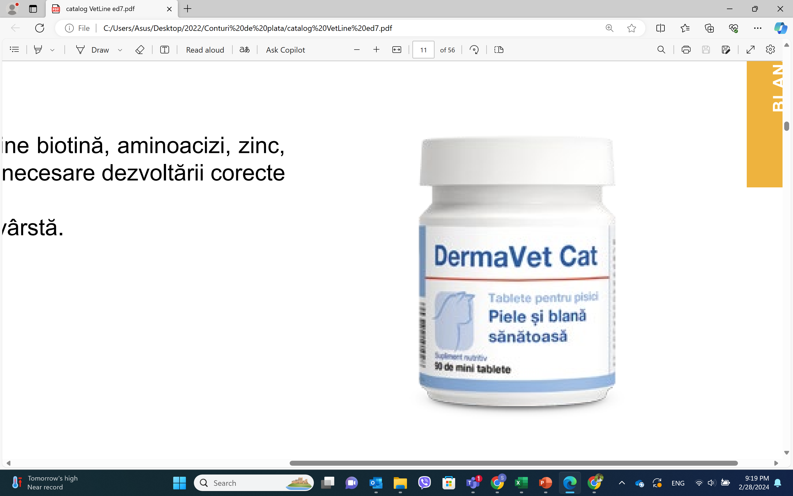
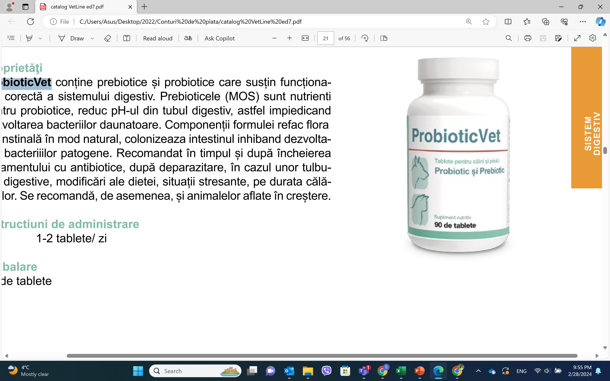
Produs
Descriere
Pret
Produs
Descriere
Pret
90 de tablete
MultiCalVet
VetCalm
40 de mini tablete
Aceste elemente sunt atent
90 tabs
este o formula naturala pentru caini si pisici
Tablete:
selectate in ceea ce privește
recomandata in situatii de stres: calatorii,
la pisici si caini sub 10 kg 1 tableta/ zi la câini
intre 10-20 kg 2 tablete/ zi la câini intre 20-30 kg 3
proporţiile și cantităţile pentru a
1 tab/ 10 kg
concursuri, tunete, fulgere, artificii vizita la
tablete/ zi la câini peste 30 kg 4 tablete/ zi
Mini tablete:
imbunătăţi forma și pentru a evita
veterinar, tratamente de lunga durata, intalniri
la pisici si caini: 1 tableta per 3 kg greutate
carenţele de vitamine și minerale.
340 lei
cu alte animale. Componentele produsului au
corporală/ zi
470 lei
efect linistitor, anxiolitic si reduc stresul.
MultiVet Cat
320 lei
Componentele produsului
90 de tablete
garantează creșterea
PanzymVet
Tablete: pisici și câini mici - 1 tableta/ zi
câini de mărime medie - 2 tablete/ zi câini
armonioasa, dezvoltarea
90 de mini
este un supliment nutritiv pentru câini și pisici
de talie mare - 3 tablete/ zi Mini tablete:
indicat in combaterea afecţiunilor digestive.
pisici si caini mici: 1-3 tablete/ zi
oaselor și a mușchilor,
tablete
Este recomandat în insuficienţa pancreatică
echilibrul sistemului nervos
1-2 tablete/ zi
650 lei
exocrină.
500 lei
și îmbunătățește forma
340 lei
generală și sănătatea
90 de tablete
pisicilor.
Coprofag Stop
câini: cu greutate corporală
descurajează câinii de la consumul fecalelor.
sub 10 kg - 1 tabletă/ zi cu
DermaVet Forte
Conţine elemente selectate cu atenţie:
greutate corporală 10-20 kg - 2
Betacarotenul intensifică culoarea
90 de tablete
vitamine, minerale, enzime digestive,
tablete/ zi cu greutate
părului și imbunătăţește vederea.
1 tab /zi/ 20 kg
corporală 20-30 kg - 3 tablete/
probiotice și substanţe vegetale, a căror
Drojdia de bere este o sursă
zi cu greutate corporală peste
deficienţă poate duce la consumul de fecale.
naturală a complexului de vitamine
350 lei
30 kg - 4 tablete/ zi
425 lei
B și a altor compuși valoroși.
ProbioticVet
Componenții formulei refac flora
90 de tablete
DermaVet Cat
90 de mini
intenstinală în mod natural,
1-2 tablete/ zi
este o formula ce conține biotină, aminoacizi,
tablete
colonizeaza intestinul inhiband
zinc, precum și vitaminele B – componente
1-2 tablete/ zi
dezvoltarea bacteriiilor patogene.
430 lei
necesare dezvoltării corecte și crearea blănii.
Conceput pentru pisici – orice rasă și vârstă.
330 lei
90 de tablete
SM Vet
60 de mini tablete
90 de tablete
Smectina este un silicat dublu de aluminiu si
pisici: 1 tabletă/ zi câini: cu greutate
60 de mini tablete
corporală sub 10 kg - 1 tabletă/ zi cu
magneziu preparat din argila alba cu efect
greutate corporală între 10-20 kg - 2
Tablete:
antimicrobian la nivelul tubului digestiv, efect
tablete/ zi cu greutate corporală între
20-30 kg - 3 tablete/ zi cu greutate
- câini cu greutate
absorbant pentru gazele din intestin si de
corporală peste 30 kg - 4 tablete/ zi Mini
PetHista Vet
corporala sub 20 kg -
pansament gastric. De asemena are efect antidiareic
tablete:
la pisici si caini: 1 tableta per/ zi
combate o gama larga de alergii.
1 tb/ zi
prelungit si absorbant al subtantelor toxice din
Ingredientele sale au proprietati
- câini cu greutate
stomac
510 lei
antialergice si antiinflamatorii.
corporala peste 20 kg
390lei
Flavonoidele continute blocheaza
- 2 tb/ zi
90 de tablete
reactiile alergice si inhiba
Mini tablete:
HepatoVet
- câini si pisici sub 5
60 de mini tablete
eliberarea de histamine.
kg greutate corporala -
este o formulă pentru caini și pisici care susţine
Tablete: pisici: 1 tableta/ zi câini:
sub 15 kg - 1 tableta/ zi 15-30 kg - 2
1 tableta/ zi
funcţia
tablete/ zi peste 30 kg - 3 tablete/ zi
520lei
ficatului in caz de insuficienţă hepatică cronică.
Mini tablete: la pisici si caini: 1
Ornitina si arginina
tableta la 5 Kg greutate corporala/
350lei
sunt aminoacizi necesari in sinteza si metabolizarea
zi
ureei.
505 lei
330 lei


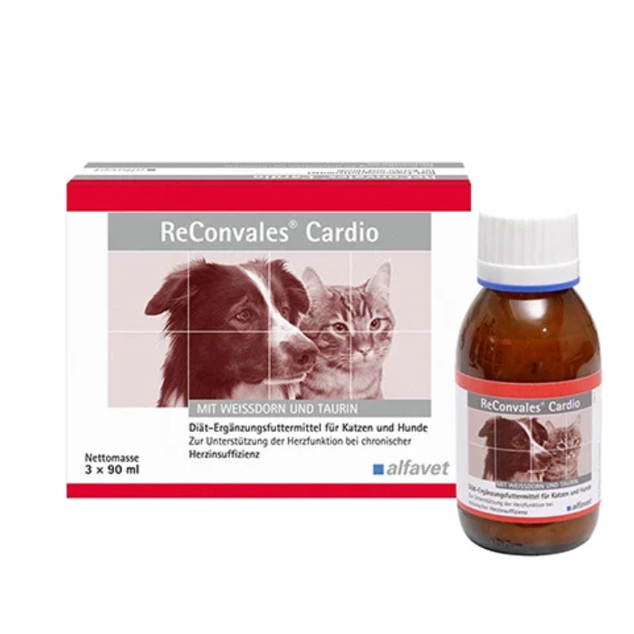
Produs
Descriere
Pret
Produs
Descriere
Pret
Zen Collar
Zen Collar este o zgardă ce ajută la
Perfect Vit&Min OMEGA3+ Nr 50,
0.5g
reducerea problemelor de
comportament derivate din situațiile
360 lei
Ulei de pește foarte purificat,
stresante într-un mod natural.
gelatină, glicerină, apă
VITA-VET C
purificată, vitamina E,
Supliment de vitamina C indicat
vitamina A, vitamina D3.
140 lei
pentru câini, pisici, păsări, rozătoare
- 1 capsulă de 1,0 g (sau 2 capsule de 0,5 g) pe
și reptile.Flaconul cu picături care
zi pentru animale cu greutatea între 15-30 kg.
- 1 capsulă de 0,5 g pe zi pentru animale cu
conține 30 ml.Sprijina functionarea
greutatea între 5-15 kg.
- 1 capsulă de 0,25 g pe zi pentru animale cu
normala a sistemului urinar la pisici.A
30ml
greutatea de până la 5 kg.
se folosi oral.
300 lei
Se administrează timp de minimum 4-6
• Câini: 0,4 până la 2 ml, sau 8 până la
săptămâni.
Diarvet
40 de picături, de una până la trei ori
Diarvet Small Breed Dogs & Cats Twist
pe zi.
Off este un produs dedicat câinilor de
6 caps TWIST OFF
• Pisici: 0,4 ml, sau 8 picături, de una
talie mică și pisicilor, destinat
solidificării scaunului în cazul
până la trei ori pe zi.
diareei.Doza recomandată: o capsulă pe zi
120 lei
Duo Tox
pentru pisici și o capsulă la fiecare 5 kg
Absorbant de toxine cu acțiune
greutate corporală pentru câini.
ReConvales cat
duală pentru câini, pisici și animale
ReConvales Tonic pentru Pisici, 45 ml este un
supliment nutrivit pentru pisici care
exotice, utilizat în tratarea cazurilor
stimuleaza apetitul, sprijina animalul in
de intoxicație. Se administrează în
490 lei
convalescenta si grabeste procesul de
vindecare. Mod de Administrare:
140 lei
spital prin tub de intubație. Conține
• 1 flacon pe zi - administrat o data sau
cărbune activat 250 mg/ml și
pe portii.
diosmectită 166,7 mg/ml. Ambalaj:
ReConvales dog
lichid, 125 ml.
Stimuleaza apetitul si sprijina
Cronicare Collar
animalul in convalescenta.
CroniCare Collar este formulat cu
Grabeste procesul de
canabidiol (CBD) și mentol, două ingrediente de
origine naturală care s-au dovedit a ajuta la
320 lei
vindecare, este usor de
150 lei
îmbunătățirea calității vieții câinilor și pisicilor
ingerat si acceptat imediat de
prin susținerea proceselor fiziologice esențiale
catre sistemul digestiv.
Detoxol №3,
Administrare: Caini pana la 15 kg 1/2-1
Pulberea este de culoare albă până la galben deschis,
flacon pe zi, Caini peste 15 kg 1 flacon pe
fără particule străine. Solventul este un lichid transparent, incolor până
zi.
la galben, fără particule străine, cu un miros caracteristic
componentelor.
CroniCare - blister 10 tablete
CroniCare este un produs natural
Dozare:
- Doza zilnică pentru câini este de 15-25 mg substanță activă pe kg
230 lei
100% care conține un amestec de
greutate corporală.
- 1 flacon cu pulbere conține ademetionină 1,4-butanedisulfonat –
extract de canabis și ulei de pește
380 mg, suficient pentru un animal de 20 kg.
(sursă de omega 3) care s-a dovedit a
- Pentru pisici, doza zilnică este de 20-30 mg substanță activă pe
kg greutate corporală.
avea beneficii multiple pentru
Administrare: Se administrează o dată pe zi, de preferință
sănătatea pisicilor și câinilor.
dimineața.
160 lei
RECONVALES CARDIO- 90ml Paducelul sustine functia
cardiac si circulatorie
Taurina este un aminoacid esential pentru feline. Insuficienta
de taurina poate determina dobandirea cardiomiopatiei
dilatative
Omega-3 poate influenta pozitiv functia cardiaca
90 ml
L-Carnitina joaca un rol important in metabolismul energetic al
250 lei
inimii si sustine astfel functia musculara a inimii
Magneziul este necesar pentru o functie cardiaca
corespunzatoare
Vitamina E si Seleniul sunt utilizate pentru descompunerea
radicalilor


Produs
Descriere
Pret
JOINT & MOBILITY
Formula de sprijin pentru functionarea corecta a
cartilajelor si articulatiilor la caini si pisici.
Glucozamina, Condroitina sulfat, Acid Hialuronic,
Vitamina C, Vitamina E, Mangan.
Produs
Descriere
Pret
Flawitol PUPPY
1 caps/ 15 kg gc/ zi
Vitamine, minerale si oligoelemente pt dezvoltarea armonioasa a
30 CAPSULE TWIST
catelusilor de talie mica/ medie. Calciu, Fosfor, Magneziu, Cupru,
OFF
150 lei
Iodina, Fier, Seleniu, Zinc, Mangan, Vit A, Vit D3, Vit E , Vit B1,Vit
B2, Vit.B6, Vit B12, Vit B5, Biotina, Acid folic,(Vit B4), Flavonoizi,
IMMUNE SISTEM
Drojdie
Formula complexa pentru stimularea
1 tab/ 3 kg
imunitatii nos-specifice la caini si pisici.
120 tabs
Recomandat puilor in crestere, seniorilor,
Flawitol PUPPY LB
femelelor gestante, animale supuse riscului la
Vitamine, minerale si oligoelemente pt dezvoltarea armonioasa
anumite infectii virale sau bacteriene. a
c a
te l u s i l o r
d e talie mare. Calciu, Fosfor, Magneziu, Cupru,
Iodina, Fier, Seleniu, Zinc, Mangan, Vitamine : A, Vit D3, Vit E , Vit
Beta Glucan, HMB, Extract de Echinacea.
B1,Vit B2, Vit.B6, Vit B12, Vit B5, Biotina,Acid folic, Flavonoizi,
1 caps/ 15 kg gc/ zi
Drojdie
30 CAPSULE TWIST
1 tab/ 6 kg
OFF
130 lei
60 tabs
MULTIVITAMIN
200 tabs
Complex de vitamine si minerale pentru caini si
Flawitol ADULT
pisici.
Vitamine, minerale si oligoelemente pt mentinerea sanatatii
optime a cainilor adulti. Drojdie de bere, Dicalciu Fosfat, Amidon,
Complex de vitamine B (B1,B2, B3, B6, B12), Vit.
Flavonoizi (coaja de struguri), Magneziu; Vitamine: A, D, E,
E, Vit. A, Vit. D3, Zinc, Fier, Mangan, Cupru, Acid
B1,B2 ,B6, B12 , Acid folic, Acid panthotenic, Biotina,Zinc, Fier,
Folic, Biotina.
Cupru ,Iodina, Seleniu
1 tab/ 8 kg
1 caps/ 15 kg gc/ zi
60 tabs
30 CAPSULE TWIST
200 tabs
OFF
115 lei
FLAWITOL DEO
Contine Clorofila, Yucca si Saccharomyces care minimeaza cu
CALM & RELAX
succes mirosurile neplacute cauzate de digestie.
Calmeaza simptomele stresului si anxietatii la caini si
Continutul de flavonoizi activi protejeaza organismul impotriva
radicalilor liberi si pot imbunatati imunitatea impotriva cancerului
pisici.
si
a
e
fe
c
te l
o r i
m
b
a
tr a
n i
ri i premature.
Triptofan, Extract de Valeriana, Taurina, Extract
Reduce semnificativ respiratia urat mirositoare, mirosurile
de Ceai
neplacute ale pielii si blanii, inclusiv cele ale fecalelor.
Reduce mirosul femelei in timpul ciclului de calduri.
1 caps/ 15 kg gc/ zi
60 tabs
30 CAPSULE TWIST
Suplimente lichide SHED -X
OFF
150 lei
Formule lichide, impotriva naparlirii excesive!
SKIN & COAT
Efe c
t
g
a r a
n
ta
t i
n 3
-6
s a
p
ta
m
a
ni
!
U l
e i
d
e
a n
s o
a
n
o rvegiana, Ulei de
Formula inovatoare pentru a sprijini functionarea
sardine norvegiene, Zinc, Biotina, Ulei din seminte de in, Ulei din
germeni de grau
optima a functiilor pielii. Recomandata in mod special
Vitamine: A, E, D, B6. Raportul ideal Omega-3/ Omega-6,
animalelor cu piele uscata, afectata de mancarimi
antioxidanti, vitamine si minerale pentru a combate naparlirea
sau naparlire excesiva. Reda stralucirea si catifelarea
excesiva.
blanii.
SHED-X CAT 237ML
Omega-3, Omega-6, Zinc, Biotina, Vit. A, Vit. E
SHED-X DOG S 237ML
1 caps/ 15 kg gc/ zi
SHED-X DOG M 473 ML
30 CAPSULE TWIST
SHED-X DOG L 947 ML
OFF
150 lei


Produs
Pret
BUBBLES SAMPON 2 IN 1
99lei
250ML
BUBBLES SAMPON ALOE & 99lei
BAMBUS UZ FRECVENT
250ML
BUBBLES SAMPON ALOE
99lei
YORKSHIRE 250ML
BUBBLES SAMPON BLANA 99lei
ALBA 250ML
BUBBLES SAMPON BLANA 99lei
NEAGRA 250ML
BUBBLES SAMPON
155lei
DESCALCIRE 250ML
BUBBLES SAMPON
115lei
INTENSIV 250ML
BUBBLES SAMPON
99lei
JOJOBA PUPPIES 250ML
BUBBLES SAMPON OVAZ
99lei
PT PISICI 250ML
Produs
Pret
BUBBLES SAMPON
99lei
BUBBLES SAMPON ALOE
REPELENT CITRONELA
600 lei
YORKSHIRE 5L
250ML
Bubbles Sampon Aloe&
BUBBLES SAMPON SECO
600 lei
170lei
Bambus 5 l
FARA CLATIRE 150ML

Produs
Descriere
Pret
Produs
Descriere
Pret
BENZOIC Shampoo- VETEXPERT
Sampon dermatocosmetic pentru caini si pisici.
Dedicat animalelor a caror piele si blana este
Flacon 250 ml
afectata de exces de sebum (demodecie,
Specialist Shampoo- VETEXPERT
Flacon 250 ml
foliculita, tulburari keratolitice si seboreice)
Sampon dermatocosmetic pentru caini si pisici.
Benzoyl peroxid (75%) - antioxidant, antikeratolitic
160 lei
Dedicat ingrijirii intensive a pielii afectate de dermatite
255 lei
si antibacterian la nivelul pielii. Creste aportul de
Display 20 x 15ml
fungice sau bacteriene.Poate fi utilizat ca tratament de
Display 20 x 15ml
Oxigen in tesuturi, stimuleaza vindecarea si
sprijin in terapiile pentru combaterea afectiunilor pielii
sinteza colagenului.Alantoina activeaza ca agent
12 lei
cauzate de fungi si bacterii. Curata si hidrateaza pielea,
22 lei
de calmare si regenerare.Panthenolul accelereaza
mentinand nivelul optim al pH-ului.
regenerarea si vindecarea afectiunilor pielii
Clorhexidina Gluconat 3%, Ketoconazol 1%
HIPOALERGENIC Shampoo- VETEXPERT
Sampon Antiseboreic VETEXPERT
Sampon dermatocosmetic pentru animale
Flacon 250 ml
Sampon dermatocosmetic pentru caini si pisici.
cu piele sensibila, predispusa la iritatii, alergii,
Dedicat ingrijirii intensive a pielii predispuse la seboree.
uscare excesiva sau intoleranta la alte
Ingredientele active - Zinc Gluconat, Pyridoxine HCL,
Flacon 250 ml
sampoane. Poate fi folosit pe animale in
150 lei
Acid Salicilic- curata pielea si blana, imbunatatesc
crestere.
Display 20 x 15ml
aspectul blanii, previn descuamarile excesive,
Proteinele de ovaz- hidratare si elasticitate la
regularizeaza activitatea glandelor sebacee si calmeaza
199 lei
nivelul pielii, stralucire blana.
16 lei
iritatiile. Acizii grasi regenereaza si protejeaza, alantoina
Glicerina, Alantoina, Pantenol, Lanolina,
are proprietati keratolitice stimuland auto-curatarea pielii
Extract ALOE VERA
prin exfolierea epidermei.
Sampon Beauty& Care VETEXPERT
Sampon dermatocosmetic pentru caini si pisici.
Dedicat ingrijirii intensive a pielii sensibile ,predispuse la
PUPPY Shampoo- VETEXPERT
iritatii,
Sampon dermatocosmetic pentru
uscare excesiva sau intoleranta fata de alte sampoane.
catelusi si pisicute.
Contine emolienti si surfactanti activi cu
Contine surfactanti activi cu actiune redusa,
actiune blanda, recomandati in mod special
Flacon 250 ml
emolienti si o
Flacon 250 ml
ingrijirii pielii sensibile. Formula imbunatatita
varietate de substante cu actiune calmanta si
115 lei
cu substante nutritive si calmante.
hidratanta.
Creste elasticitatea pielii si previne uscarea
Creste nivelul de elasticitate al pielii, prevenind
excesiva.
uscarea excesiva.
Alantoina are proprietati keratolitice stimuland auto-
curatarea pielii prin exfolierea epidermei iar
pantenolul accelereaza capacitatea de refacere si
vindecare a pielii.
Produs
Descriere
Pret
Sampon pt caini
Produs
Descriere
Pret
473 ml
SAMPON SHED –X
Formule de sampon pentru a combate
naparlirea excesiva la caini si pisici!
Proteine din grau si ovaz- aport aminoacizi
esentiali
Vitamine A, D, E- esentiale sanatatii pielii si
firului de par
Acid lactic- exfoliaza
DL- Pantenol- intareste firul de par
Ulei din seminte de in- sursa omega-3
Ulei din seminte de struguri- sursa antioxidanti
si omega-6
Aporta pielii si blanii aminoacizi esentiali,
omega 3, omega 6, vitamine, antioxidanti,
pentru o piele si blana sanatoasa, plina de
vitalitate!
Curata si lasa blana catifelata si stralucitoare.
Aroma unica de nectarine si ghimbir!
165lei
STIMUDERM ULTRA
Pentru eficienta maxima se recomanda
Gama inovatoare pentru regenerarea pielii si blanii la caini
folosirea simulatana cu Suplimentele din
gama SHED X!
Molecula patentată ACTIVE NTM este un ingredient activ cu eficacitate
dovedită în stimularea intensive a creșterii părului. Este o moleculă de
Perle odorizante pentru litiera Mpets, Floral,
450 ml
origine vitaminică, un metabolit activ al vitaminei B3. Induce faza anagenă
(creșterea intensivă a părului) și prelungește durata acesteia. Are efect
protector asupra foliculului de păr, reducând gradul de distrofie al
acestuia. Accelerează creșterea părului, îmbunătățește microcirculația
pielii, stimulează regenerarea mai rapidă a foliculilor de păr și intrarea
părului în faza anagenă.
Alte substanțe active conținute în produsele Stimuderm Ultra susțin
mecanismele naturale de protecție ale pielii, hrănesc, regenerează și
întăresc părul (beta-glucan de ovăz), au un efect calmant (pantenol)
precum și hidratant si de netezire (proteine de mătase).
Sampon Hair Loss pentru blana lunga si blana
Stimuderm Ultra- Sampon caini blana scurta- 250 ml
270 lei
scurta este o formula hipoalergenica fara SLS
SLES si parfum potrivita pentru caini si pisici chiar
si cu piele sensibila contine extract de coada
Stimuderm Ultra- Sampon caini blana lunga- 250 ml
270 lei
calului bogat in minerale si siliciu ce intareste
foliculii si calmeaza pielea niacinamida sustine
structura firului de par reduce caderea si
230 lei
Stimuderm Ultra- Ser regenerator- 150 ml
inflamatia iar proteinele din matase si vitamina B5
297 lei
ofera netezire elasticitate si protectie blana
devine moale stralucitoare si usor de pieptanat
produsul hidrateaza si imbunatateste rezistenta
parului la factorii externi


Produs
Descriere
Pret
Produs
Descriere
Pret
IRRIGATION LIQUID
Spray CLORHEXIDINA 4%
APĂ, ACID HIPOCLOROS
Flacon 250ml
(Nanosilver, Clorhexidina, Lanolina,
Soluție pentru curățare și clătire în tratamentul
130 lei
Panthenol, Musetel) Indicat in tratarea
Flacon spray 100ml
abraziunilor, tăieturilor și al rănilor. Soluția naturală
infectiilor de la nivelul pielii
pregătește zona pentru intervenții medicale
Scop: Antibacterian, antiseptic,
suplimentare. Compoziția unică se bazează pe acid
157 lei
bactericid, bacteriostatic, Hidratant,
hipocloros, care are un spectru larg de acțiune,
calmant
inclusiv: pregătește perfect pielea pentru procedurile
veterinare, creează un mediu adecvat pentru
vindecare, protejează țesutul deteriorat împotriva
Flacon 500ml
factorilor externi și sprijină regenerarea acestuia.
IN CURAND
Spray HIDRATANT
Acest ingredient se distinge și prin acțiune
Flacon spray 100ml
(Nanosilver, Acid lactic, Uree, Betaina,
cuprinzătoare, potențial ridicat de siguranță
Panthenol)
(parametru de biocompatibilitate) și timp de acțiune
Antibacterian, Antiseptic, Regenerator, Intens
140 lei
foarte rapid.
hidratant, calmant.
Produsul este gata de utilizare imediată.
ALUHEAL SPRAY
acid hyaluronic ~ argint ~ betaina ~
Scop: Spray cu pulbere de aluminiu, conceput
HOT SPOT Spray
pentru a proteja și îngriji rănile. Preparat topic
Flacon spray 100ml
Flacon spray
(Nanosilver, Aloe, Musetel, Panthenol)
pentru animale.
Indicat in tratarea zgarieturilor si abraziunilor:
ALUHEAL conține betaină, pantenol, acid
200ml
Antiseptic, Antibacterian, Antiinflamator,
hialuronic, argint și extract de galbenele.
148 lei
169 lei
Calmant.
Selectarea ingredientelor adecvate protejează
rănile de contaminarea externă, creează un
mediu propice vindecării rănilor, hidratează și
calmează pielea din jurul rănii.
HELIOVET – Loțiune de protecție solară
SPF50+ pentru câini și pisici
Loțiune solară cu protecție foarte ridicată
Paw PROTECTION
(SPF50+) împotriva radiațiilor UVA, UVB și
Lanolina, parafina, Ulei de in, Zinc, Arbore Flacon 75 ml
infraroșii, destinată animalelor de companie.
80 ml
de Ceai, Panthenol, Galbenele,nanoparticule de
Formula unică pe bază de extract patentat
250 lei
Ag.
Fernblock, ceai verde, fitosfingozină și
Formula completa pentru protectia si ingrijirea
130 lei
plancton ajută la prevenirea arsurilor solare,
zonelor plantare atat iarna, cat si vara!
regenerează bariera pielii și menține
hidratarea. Se absoarbe rapid, nu lasă urme
albe, iar pielea rămâne protejată și aerisită.
OptiCan este o soluție oculară pentru câini și pisici,
produsă de Stangest, folosită pentru curățarea și
Kennel Odor Eliminator, 500 ml –
lubrifierea ochilor. Conține ingrediente precum
VetExpert
clorhexidină, gluconat de zinc, D-pantenol și lizină,
Soluție concentrată pentru eliminarea
care calmează iritațiile, reduc inflamațiile și
mirosurilor provocate de animale (urină,
500 ml
125 ml
protejează împotriva infecțiilor.Se aplică 3-5 picături
fecale, vomă etc.). Netoxică, non-alergenică,
330 lei
în fiecare ochi, apoi se șterge ușor conturul cu o
135 lei
biodegradabilă, sigură pe orice suprafață și
lavetă sterilă. Produsul vine sub formă de flacon de
chiar pe animale. Compatibilă cu detergenți și
125 ml, fiind potrivit pentru uz regulat.
dezinfectanți. Se diluează în apă (până la 240
L). Ideală pentru clinici, saloane, locuințe.
LYS WIPES – Șervețele umede pentru
animale
Șervețele cu Aloe și Hamamelis, potrivite
pentru curățarea delicată a ochilor, urechilor
și pielii la câini, pisici și animale mici. Numai
pentru uz extern.Mod de utilizare: Deschideți
120 buc
capacul, trageți primul șervețel și curățați ușor
zona dorită. Aruncați după
130 lei
folosire.Compoziție: Apă, glicol, extract Aloe
0,1%, Hamamelis 0,005%, agenți de curățare
și conservanți.Ambalaj: 120 buc


Nume
Descriere
Pret
STOMAFERIN ULTRA
Formula topica pentru
Nume
Descriere
Pret
mucoasa bucală – la caini si pisici
Flacon gel oral
DENTAL FRESH
adulte.
Dental Fresh
30 ml
Lactoferina –stimuleaza rasp. imun
#1 in igiena orala inca din anul ORIGINAL for CATS-
local
1999
237 ml
Clorhexidina- inhiba aderenta
bacteriilor si implicit stopeaza
240 lei
acumularea placii bacteriene,
Formula dentara antimicrobiana
160lei
Produs
Descriere
Pret/ fara TVA
-activeaza, elibereaza si distruge
OTIHELP
microbii
Dental Fresh ORIGINAL for
Lotiune auriculara pH5
& microorganismele care
DOGS- 237 ml
Emulsie otica pentru caini si
Flacon din
provoaca respiratia urat
Dental Fresh ORIGINAL for
pisici.
plastic
mirositoare. Elimina bacteriile
DOGS- 503 ml
Contine clorhexidina care
cu pipeta- 75
responsabile de formarea placii
are efect antibacterian si
ml
dentare si compusii de sulf
antifungic.
volatili si urat- mirositori.
Dental Fresh ORIGINAL for
Poate fi administrat in toate
Albeste dintii
DOGS & CATS- 1.9L
158 lei
tipurile de otita externa,
Reface smaltul
Protejeaza gingiile si ajuta la prevenirea si /
indiferent de natura cauzei.
sau tratarea gingivitei.
Flacon din
Improspateaza instantaneu respiratia
Dental Fresh ADVANCED
Elimina depunerile de bacterii din vasul cu
OTIFLUSH
WHITENING- 237 ml
plastic
apa
Solutie auriculara pH5
Imbunatateste sanatatea intregii cavitati orale
Dental Fresh ADVANCED
cu pipeta- 125
WHITENING- 503 ml
Contine clorhexidina care
Elimina placa si tartrul
are efect antibacterian si
ml
Ajuta la combaterea bolilor parodontale fara
periaj si fara efecte adverse asupra tesuturilor
antifungic.
afectate de parodontoze.
158 lei
Fara ALCOOL, ZAHARURI, SURFACTANTI sau
DETERGENTI DURI
OTICURANT
Dental Fresh ADVANCED
Fara AROMA MENTOLATA INTENSA
PLAQUE & TARTAR- 237 ml
OTICURANT® este un
NU provoaca pete
Dental Fresh ADVANCED
PLAQUE & TARTAR- 503 ml
produs patentat de
Poate fi administrat in siguranta, pe termen
ingrijire și igienă a urechii
lung
pentru câini. Produsul
24 plicuri x 170
Dozare: 1 lingurita/ 250 ml apa de baut
captează umezeala și ajută
DENTAL FRESH SPRAY
gr
la îndepărtarea de ceară
reziduală și
170mg/1buc
Se aplica direct in cavitatea
la eliminarea mirosului
22 lei
bucala.
neplăcut. Calmează în caz
Ideal pentru a fi folosit in calatorii
de disconfort (de exemplu,
sau intre periaje.
Spray 118 ml
mâncărime).
Elimina instantaneu respiratia
Sub forma de pulbere.
urat- mirositoare
160 lei
Reduce petele dentare si
decolorarile
Sprijina sanatatea gingiilor
Distruge tartru si placa
Dedicat pentru caini & pisici


Produs
Descriere
Pret
Produs
Descriere
Pret
250 ml
PerFect shampoo for short-
250 ml
PerFect Shampoo for Long Haired Cats
45 lei
haired dogs
45 lei
250 ml
250 ml
PerFect shampoo for cats restoring
45 lei
PerFect shampoo for puppies
45 lei
250 ml
250 ml
PerFect shampoo for short-haired cats
45 lei
PerFect Shampoo for Kittens
45 lei
PRO DERMA sampon
250 ml
Ingrediente:Acid salicilic,
mentol, pantenol, ulei esențial
PerFect shampoo for long-haired dogs
45 lei
de ienupăr, sodium cocosulfate,
200 ml
chidrolizat de proteine din ovăz,
glicerină, apă purificată, bază
70 lei
purificată.
Aplicare:Uz extern.
250 ml
Sampon PerFect 250 ml dogs Restoring
45 lei


Produs
Descriere
Pret
Produs
Descriere
Pret
4T VETERINARY DIET RENAL DOG
4T VETERINARY HEPATIC DOG
ELIMINATION
Hrana dietetica, completa și echilibrata, care sustine ficatul in
cazurile de insuficienta cronica:
Hrana completa –monoproteica, echilibrata
•Reduce depunerea de cupru în ficat
pentru caini, a carei administrare sprijina
•Contine un nivel moderat de proteine de inalta calitate (de la pasari
functionarea optima a rinichilor in cazuri de
de curte, porumb, orez)
•Un nivel ridicat de acizi grasi esentiali, Carbohidrati foarte digerabili
insuficiente cronice sau temporare. Contine
•Niveluri scazute de cupru.
nivel scazut de fosfor si proteine cu valoare
2 kg
360 lei
nutritionala crescuta. . Sursa unica de proteine
animale- carne de iepure (10.5%)
12 kg
1782 lei
2 kg
420lei
4T VETERINARY DIET HYPPOALERGENIC INSECT
Sursa unica de proteine- izolate din larvele insectelor HERMETIA
8 kg
1320 lei
ILLUCENS
4 T VETERINARY DIET OBESITY DOG –NEW
Dieta cu sursa unica de carbohidrati- Cartofi. Fara CEREALE
FORMULA
Contine :Ficat de pui hidrolizat pentru digestie, Uleiuri din seminte de in si
peste ca sursa de acizi grasi esentiali OMEGA-3
Hrana completa si echilibrata pentru caini, a
carei administrare sprijina reducerea masei
VET EXPERT Hypoallergenic Insect Small Breed
este o hrană uscată completă, special formulată pentru câinii adulți de talie mică cu
corporale in exces. Valoarea calorica scazuta si
alergii, intoleranțe alimentare sau probleme dermatologice. Conține o singură sursă de
proteine animale – insecte Hermetia illucens (30%) – și carbohidrați ușor digerabili din
continutul de L-Carnitina faciliteaza pierderea in
cartofi (27%) și cartofi dulci (15%), fără cereale, reducând astfel riscul de reacții
adverse. Formula este îmbogățită cu acizi grași esențiali omega-3 și omega-6 care
greutate.
susțin sănătatea pielii și calitatea blănii, iar crochetele mici (aproximativ 10 mm) sunt
adaptate perfect raselor miniaturale.
2 kg
350lei
2 kg
440lei
12 kg
1615 lei
8 kg
1400 lei
4T VETERINARY DIET INTESTINAL DOG
12 kg
2040 lei
Hrana completa si echilibrata pentru caini,
recomandata in cazuri de dereglari ale absorbtiei
2 kg
460 lei
intestinale si
8 kg
1400 lei
ale sistemului digestiv. Echilibreaza
4T VETERINARY DIET DERMATOSIS DOG
insuficientele datorate digestiei defectuoase si
Hrana completa si dietetica dedicata cainilor, a carei administrare
contribuie la reducerea aparitiei intolerantei alimentare si sprijina
malabsorbtiei. Continue electroliti, ingrediente
functiile pielii in caz de dermatite sau caderi excesive ale blanii.
cu grad de digestibilitate ridicat, cantitate
Continut ridicat de acizi grasi esentiali si proteine usor digestibile
redusa de grasimi.
Carne de IEPURE sau SOMON
INTESTINAL DOG ELIMINATION- dieta
IEPURE 2 kg
440 lei
monoproteica recomandata in cazuri de dereglari
IEPURE 12 kg
2040 lei
intestinale. Sursa unica de proteine animale- carne
SOMON 2 kg
370 lei
de curcan (47%).
SOMON 12 kg
1685 lei
NTESTINAL DOG 2 kg
310lei
RATA 2KG
480 lei
INTESTINAL DOG 12
RATA 6KG
1360 lei
kg
1650 lei
4T VETERINARY DIET MOBILITY DOG
ELIMINATION 2 kg
399lei
ELIMINATION
ELIMINATION 12 kg
2058lei
Hrana completa si echilibrata pentru caini, a carei administrare
HYPOALERGENIC ULTRA
sprijina metabolismul articulatiilor in cazuri de osteoartrita sau alte
Dieta de excludere, monoproteica.
probleme de mobilitate.
Sursa unica de proteine- PESTE (HERING)
MOBILITY DOG ELIMINATION- dieta monoproteica
Sursa de carbohidrati: cartof si cartof dulce
recomandata in cazuri de afectiuni de mobilitate. Sursa unica de proteine
Niveluri optime acizi grasi EPA, DHA, LA pt a sprijini functiile pielii.
animale- carne de somon (30.5%).
Zinc- contribuie la mentinerea sanatatii pielii si blanii
MOBILITY 2 kg
261 lei
Lista scurta si transparenta de ingrediente pentru a evita
intolerantele/ alergiile alimentare.
MOBILITY ELIMINATION
2 kg
600 lei
12 kg
8 kg


Produs
Descriere
Pret/ fara TVA
4T VETERINARY DIET URINARY DOG
Hrana completa si echilibrata pentru caini, Conținutul scazut de FOSFOR/ MAGNEZIU
limiteaza formarea struvitilor. NIVEL scazut de proteine - continutul redus de proteine ajuta
la reducerea continutului de uree in urina. MERISOARELE - reduc aderenta
microorganismelor la epiteliul tractului urinar, reducand riscul de infectii bacteriene
secundare. Acidificarea urinei cu integrare de sulfat de calciu.
2 kg
370 lei
12 kg
1550 lei
Produs
Descriere
Pret/ fara TVA
4T VETERINARY DIET DERMATOSIS DOG
Hrana completa si dietetica dedicata cainilor, a carei
administrare contribuie la reducerea aparitiei intolerantei
alimentare si sprijina functiile pielii in caz de dermatite sau caderi
excesive ale blanii. Continut ridicat de acizi grasi esentiali si
proteine usor digestibile
IEPURE & CARTOF 2 kg
440 lei
IEPURE & CARTOF 12 kg
2040 lei
SOMON & CARTOF 2 kg
370 lei
SOMON & CARTOF 12 kg
1685 lei
MIEL & KRILL 2 kg
410 lei
MIEL & KRILL 12 kg
1785 lei
HYPOALERGENIC ULTRA
Dieta de excludere, monoproteica.
Sursa unica de proteine- PESTE (HERING)
Sursa de carbohidrati: cartof si cartof dulce
Niveluri optime acizi grasi EPA, DHA, LA pt a sprijini functiile pielii.
Zinc- contribuie la mentinerea sanatatii pielii si blanii
Lista scurta si transparenta de ingrediente pentru a evita
intolerantele/ alergiile alimentare.
2 kg
600 lei
8 kg

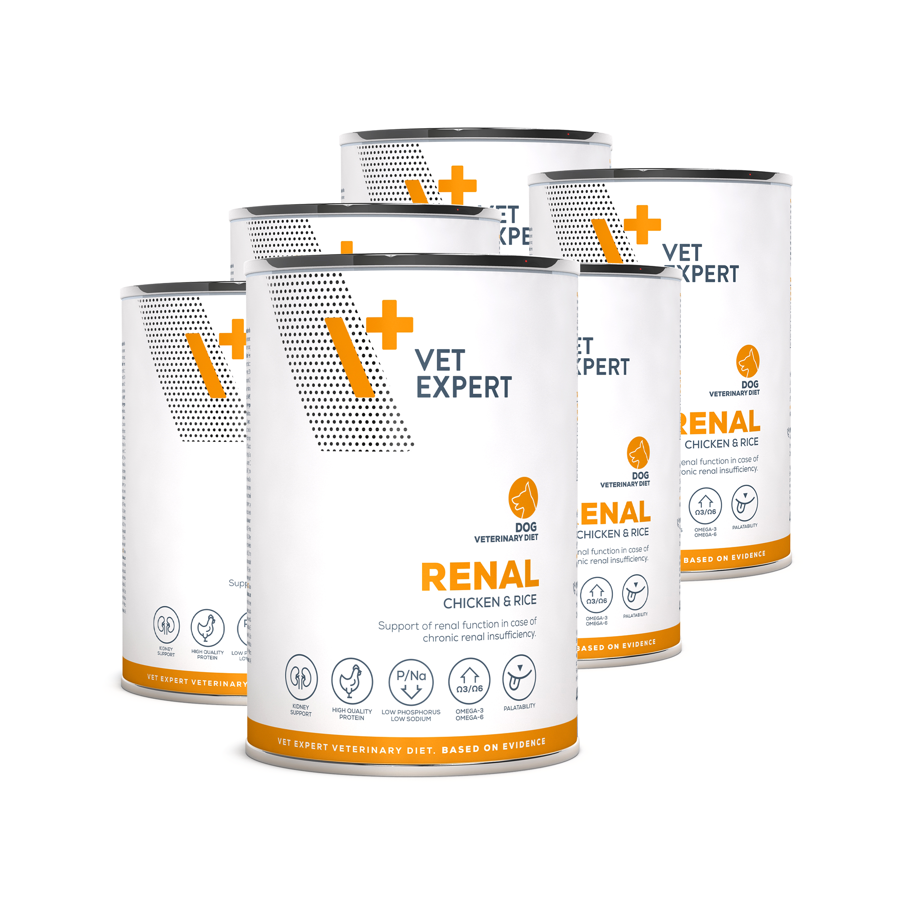

Produs
Descriere
Pret
Produs
Descriere
Pret/ fara TVA
Dieta umeda RENAL DOG
Hrană dietetică completă pentru câini adulți, pentru a susține funcția renală în caz de insuficiență renală
Dieta umeda HEPATIC DOG
cronică.
sprijina functiile hepatice in cazuri de insuficienta hepatica cronica prin
Compozitie: carne si subproduse din carne (42% pui), cereale (5% orez macinat), minerale (1%). Sursa de
reducerea depunerilor de Cu la nivelul ficatului. Carne de pui, Orez, Ulei
proteine: pui. Componente analitice: proteină brută 6,3%, grăsime brută 9%, cenușă brută 2%, fibre brute
0,3%, umiditate 77%, calciu 0,23%, fosfor 0,12%, sodiu 0,07%, potasiu 0,2%, Omega-3 și Omega-6 acizi
de Somon, L-Carnitina, Extract de Yucca
grași 2,2%. Energie metabolizabila (kcal/100 g): 122. Aditivi nutritivi per kg: Vitamine: vitamina D3 (3a671)
Hepatic Dog 200g
55 lei
200 UI. Oligoelemente: zinc (3b605) 25 mg, mangan (3b503) 1,4 mg, iod (3b202) 0,75 mg, cupru (3b405) 2
mg.
Hepatic Dog 400g
66 lei
Dieta umeda INTESTINAL DOG
400g
75 lei
dedicata cainilor cu afectiuni ale aparatului digestiv, malabsorbtie sau
Dieta umeda HYPOALLERGENIC DOG– carne de cal
insuficienta pancreatica exocrina. Carne de miel,
Hrană dietetică completă pentru câini adulți, care sprijină reducerea
Cartofi, Ulei de Somon, FOS, MOS, Extract de Yucca
intoleranțelor la ingrediente și nutrienți. Conține ingrediente selecționate și
Intestinal Dog 400g
66 lei
limitate la o singură sursă de proteine de origine animală (carne de cal).
Intestinal Dog 200g
55 lei
Compozitie:carne si subproduse din carne (50% carne de cal), minerale
(1%), uleiuri si grasimi (0,4% ulei de peste), drojdii (0,1% drojdii de bere).
Intestinal Elimination Dog 200g
55 lei
Sursa de proteine: carne de cal.
Intestinal Puppy Dog 200g
55 lei
Dieta umeda DERMATOSIS DOG
400g
75 lei
dedicata cainilor care sufera de intolerante alimentare. Sprijina functiile
pielii in cazuri de dermatite sau
Dieta umeda HYPOALLERGENIC DOG– INSECT
naparliri excesive.
Hrana dietetica complete pentru caini adulti, care sprijina reducerea
Carne de somon , Cartofi, Ulei de In, Ulei de Borago
intolerantelor la ingredient si nutrienti.
Dermatosis Dog 400g
66 lei
Contine o singură sursă de proteine de origine ( INSECTE) și surse
Dermatosis Dog-salmon 200g
55 lei
selectate de carbohidrați ( CARTOF).
Compozitie: insecte (50%), vegetale (8% cartofi), derivate de origine vegetala
Dieta umeda OBESITY DOG (2% fulgi de cartofi), minerale (1%). Sursa de proteine: insecta. Sursa de
dedicata cainilor care necesita reducerea greutatii corporale.
carbohidrati: cartofi, fulgi de cartofi
Echilibreaza nivelurile de glucoza in cazurile de diabet mellitus (zaharat).
Carne de miel si pui , Orez, Ulei de Somon, L-Carnitina, Taurina
Obesity Dog 400g
66 lei
400g
75 lei
Dieta umeda RECOVERY DOG
dedicata cainilor care necesita sprijin in revenirea la o dieta zilnica
Dieta umeda DERMATOSIS DOG- Curcan & Fazan
normala. Carne de pui , Orez,
dedicata cainilor care sufera de intolerante alimentare. Sprijina functiile
Ulei de Somon, Ulei de Fenicul
pielii in cazuri de dermatite sau
Recovery Dog 400g
75 lei
naparliri excesive. Conține un nivel ridicat de acid linoleic (LA), acid
Dieta umeda URINARY DOG
eicosapentaenoic (EPA) și acid docosahexaenoic (DHA).
dedicata cainilor care sufera de afectiuni ale tractului urinar inferior,
Carne si subproduse din carne (53% curcan, 10% bibilica), minerale (1%),
inclusiv cistite, infectii sau urolitiaza cu struviti. Previne formarea
uleiuri si grasimi (0,4% ulei de peste), drojdii (0,1% drojdie de bere).
struvitilor si a altor pietre.
Carne de pui , orez, extract de merisoare, dl-metionina
Dermatosis Dog 400g
75 lei
Urinary Dog 400g
66 ei


Produs
Descriere
Pret
Produs
Descriere
Pret
4T VETERINARY DIET INTESTINAL CAT
Hrana completa si dietetica, dedicata pisicilor, pentru sprijinul
Dieta umeda HEPATIC CAT
functionarii optime a sistemului digestiv si pentru reglarea absorbtiei
dedicata pisicilor adulte care sufera de afectiuni
intestinale.
hepatice cronice. Vit. A, Vit. E, Taurina (fosfor si
Completeaza insucientele cauzate de digestie si absorbtie
slaba.
proteine in cantitati reduse)
Continut crescut de electroliti si ingrediente cu grad ridicat de
Conserva 100g
35 lei
digestibilitate si aport scazut de grasimi.
250g
Dieta umeda Obesity & Diabetes CAT
Hrana dietetica pentru pisici. Indicata pentru a reduce
2 Kg
370 lei
supraponderabilitatea, obezitatea si pentru reglarea dezechilibrelor
4T VETERINARY DIET URINARY CAT
d e
gl
u c
o
za s i
g r a s i
mi. Proteine de inalta calitate cu grad ridicat de
Hrana completa si dietetica, dedicata pisicilor, a carei
digestibilitate (carne de curcan) si nivel scazut de carbohidrati. Se
administrare contribuie la dizolvarea struvitilor si reducerea
recomnda inclusiv in terapia pisicilor afectate de diabet zaharat.
riscului formarii acestora in cazul bolilor
Conserva 100g
35 lei
tractului urinar inferior la pisici.
Dieta umeda Hippolaergenic CAT
Are proprietati acidifiante,
nivel scazut de magneziu si proteine de inalta calitate.
Dieta monoproteica (curcan) indicata pentru
250g
reducerea intolerantelor la ingrediente sau
2 Kg
370 lei
nutrienti, la pisici. Carne de curcan, minerale,
6 Kg
980 lei
inulina, spirulina, vitamine, taurina.
4T VETERINARY DIET DERMATOSIS CAT ( rata & Orez)
Conserva 100g
35 lei
este o hrana dietetica, completa, dedicata pisicilor adulte (cu
Dieta umeda RENAL CAT
varsta peste 1 an), pentru a sprijini functiile pielii in cazuri de
dermatoze sau naparliri excesive. Se recomanda de asemenea
dedicata pisicilor adulte afectate de insuficienta
pentru a reduce intolerantele la anumite ingrediente si
renala cronica (IRC)
nutrienti.Sursa principala selectata pentru proteina animala
Carne pui +vita, Vit. A, Vit. E,
este carnea de rata (carne uscata si carne proaspata) iar sursa
unica de carbohidrati este orezul ( alb si brun). Formula contine
Taurina (fosfor si proteine in cantitati reduse),
niveluri crescute de acid linoleic (LA), acid eicosapentaenoic
ulei de somon
(EPA) si acid docosahexaenoic (DHA). Imbogatita cu cicoare
(sursa naturala de inulina) care sprijina digestia si echilibrul
Conserva 100g
35 lei
microbiomului gastrointestinal.
Dieta umeda URINARY CAT
250g
dedicata pisicilor adulte care sufera de
2 Kg
480 lei
afectiuni ale tractului urinar inferior (cistita
6 Kg
1360 lei
idiopatica, infectii, urolitiza cu struviti).
4T VETERINARY DIET OBESITY CAT
Carne vita+curcan, merisoare, DL-Methionina,
Hrana dietetica pentru pisici, indicate pt reducerea greutătii
Taurina
corporale excesive. Mâncarea are un conținut redus de grăsimi
și valoare calorică scăzută. L-carnitina susține metabolismul
Conserva 100g
35 lei
acizilor grași. Orzul și cartofii dulci ca surse de carbohidrați cu
Dieta umeda Intestinal CAT
indice glicemic scăzut, asigură controlul glicemic postprandial.
Hrana dietetica pentru pisici. Indicata in terapia
Adăugarea de surse de fibre alimentare sprijină procesul de
pierdere în greutate și de control al greutății. Glucozamina și
pisicilor care sufera de afectiuni intestinale sau
condroitina conținute în furaj susțin funcția articulară în caz de
malabsorbtie. Ingredientele au grad foarte ridicat
încărcare excesivă cauzată de supraponderalitate.
de digestibilitate si poate fi administrata ca hrana
Proteina din carne de pasare (32%), orz (20%), cartof dulce
(15.5%)
de recuperare.
400g
Proteine de inalta calitate din carne de curcan si
2 Kg
385 lei
pui.
6 Kg
954 lei
Conserva 100g
35 lei


Produs
Descriere
Pret/ fara TVA
Produs
Descriere
Pret/ fara TVA
4T VETERINARY DIET INTESTINAL CAT
Dieta umeda HEPATIC CAT
Hrana completa si dietetica, dedicata pisicilor, pentru sprijinul functionarii optime a
dedicata pisicilor adulte care sufera de afectiuni hepatice cronice. Vit. A, Vit. E,
sistemului digestiv si pentru reglarea absorbtiei intestinale. Completeaza
Taurina (fosfor si proteine in cantitati reduse)
insucientele cauzate de digestie si absorbtie slaba.Continut crescut de electroliti
si ingrediente cu grad ridicat de digestibilitate si aport scazut de grasimi.
Conserva 100g
35 lei
250g
Dieta umeda Hippolaergenic CAT
2 Kg
Dieta monoproteica (curcan) indicata pentru reducerea intolerantelor la
ingrediente sau nutrienti, la pisici. Carne de curcan, minerale, inulina, spirulina,
4T VETERINARY DIET URINARY CAT
vitamine, taurina.
Hrana completa si dietetica, dedicata pisicilor, a carei administrare
contribuie la dizolvarea struvitilor si reducerea riscului formarii acestora in
Conserva 100g
35 lei
cazul bolilor tractului urinar inferior la pisici.
Dieta umeda Obesity & Diabetes CAT
Are proprietati acidifiante,nivel scazut de magneziu si proteine de inalta
Hrana dietetica pentru pisici. Indicata pentru a reduce supraponderabilitatea,
calitate.
obezitatea si pentru reglarea dezechilibrelor de glucoza si grasimi. Proteine de
250g
inalta calitate cu grad ridicat de digestibilitate (carne de curcan) si nivel scazut de
carbohidrati. Se recomnda inclusiv in terapia pisicilor afectate de diabet zaharat.
2 Kg
plic 100g
35 lei
6 Kg
4T VETERINARY DIET DERMATOSIS CAT ( rata & Orez)
Dieta umeda RENAL CAT
este o hrana dietetica, completa, dedicata pisicilor adulte (cu varsta peste 1
dedicata pisicilor adulte afectate de insuficienta renala cronica (IRC)
an), pentru a sprijini functiile pielii in cazuri de dermatoze sau naparliri
Carne pui +vita, Vit. A, Vit. E,
excesive. Se recomanda de asemenea pentru a reduce intolerantele la
Taurina (fosfor si proteine in cantitati reduse), ulei de somon
anumite ingrediente si nutrienti.Sursa principala selectata pentru proteina
animala este carnea de rata (carne uscata si carne proaspata) iar sursa
plic 100g
35 lei
unica de carbohidrati este orezul ( alb si brun). Formula contine niveluri
crescute de acid linoleic (LA), acid eicosapentaenoic (EPA) si acid
docosahexaenoic (DHA). Imbogatita cu cicoare (sursa naturala de inulina)
Dieta umeda Intestinal CAT
care sprijina digestia si echilibrul microbiomului gastrointestinal.
Hrana dietetica pentru pisici. Indicata in terapia pisicilor care sufera de afectiuni
250g
intestinale sau malabsorbtie. Ingredientele au grad foarte ridicat de digestibilitate
si poate fi administrata ca hrana de recuperare.
2 Kg
480 lei
Proteine de inalta calitate din carne de curcan si vita.
6 Kg
1360lei
4T VETERINARY DIET OBESITY CAT
Plic 100g
35 lei
Hrana dietetica pentru pisici, indicate pt reducerea greutătii corporale
excesive. Mâncarea are un conținut redus de grăsimi și valoare calorică
scăzută. L-carnitina susține metabolismul acizilor grași. Orzul și cartofii
Dieta umeda URINARY CAT
dulci ca surse de carbohidrați cu indice glicemic scăzut, asigură controlul
dedicata pisicilor adulte care sufera de afectiuni ale tractului urinar inferior
(cistita idiopatica, infectii, urolitiza cu struviti).
glicemic postprandial. Adăugarea de surse de fibre alimentare sprijină
Carne pui, merisoare, orez, merisoare, dl- metionina
procesul de pierdere în greutate și de control al greutății. Glucozamina și
condroitina conținute în furaj susțin funcția articulară în caz de încărcare
excesivă cauzată de supraponderalitate.
Plic 100g
35 lei
Proteina din carne de pasare (32%), orz (20%), cartof dulce (15.5%)
Dieta umeda SENSITIVITY CAT
400g
Dieta monoproteica pentru pisici. Fara gluten si cereale.
2 Kg
Sursa unica de proteine animale: porc mistret
6 Kg
Veterinary Diet Cat Diabetic
4T VETERINARY DIET RENAL CAT
este destinat pisicilor adulte cu diabet (diabet zaharat). Hrana este săracă în
Hrana dietetica completa pentru pisici, indicate in sprijinul
zaharuri simple, dizaharide și amidon pentru a ajuta la reglarea nivelului de zahăr
afectiunilor renale.
din sânge. Proteinele animale de înaltă calitate furnizează toți aminoacizii de care
pisica dumneavoastră are nevoie.
Continut redus de fosfor, sodiu si proteine
Conținut crescut de Omega-3
Efect combinat - Sprijină funcția rinichilor și a tractului digestiv.
Vet Expert Recovery Cat
Nu este destinat pentru: pui de pisica și pisici gestante sau care
este formulată special pentru pisicile adulte care necesită nutriție specializată în
alăptează.
timpul recuperării după boală sau intervenții chirurgicale. Hrana asigură o
digestibilitate ridicată și un aport energetic adecvat, susținând astfel revenirea la o
400g
stare de sănătate optimă.
2 Kg
415 lei
Plic 100g
35 lei
Plic 100g
35 lei
6 Kg
1050 lei
Plic 100g
35 lei
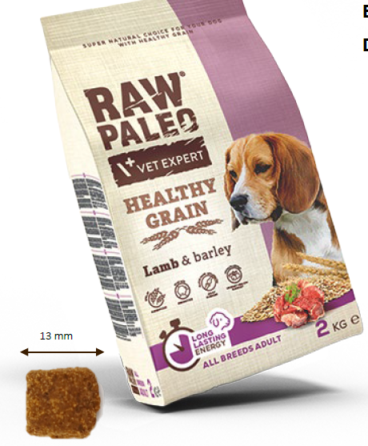
Produs
Descriere
Pret
Produs
Descriere
Pret
RAW PALEO HEALTHY GRAIN- ADULT SALMON
RAW PALEO HEALTHY GRAIN- PUPPY SALMON
Hrana completa si echilibrata pentru caini adulti.
Hrana completa si echilibrata pentru caini in crestere.
Reteta bazata pe Proteina digestibila din somon deshidratat,
Reteta bazata pe Proteina digestibila din somon uscat,
imbogatita cu faina din peste.
imbogatita cu faina de peste.
carne deshidratată de somon (35%), orz (22%), cartofi dulci
carne deshidratată de somon (35%), orz (20%), făină de
(19%), grăsime de pasăre (12%), făină de pește (4%), pulpă de
pește (12%), cartofi dulci (11%), grăsime de pasăre (10%),
sfeclă de zahăr (4%), semințe de in, fosfat monocalcic,
proteine din cartofi (4%), pulpă de sfeclă de zahăr (4%),
glucozamină ( 500 mg/kg), drojdie de bere, manan-oligozaharide
ulei de somon (1,37%), semințe de in, glucozamină (500
(MOS – 500 mg/kg), condroitin sulfat (200 mg/kg),
mg/kg), drojdie de bere, manan-oligozaharide (MOS – 500
fructooligozaharide (FOS – 200 mg/kg), mojave yucca, ceai verde
mg/kg), condroitin sulfat (200 mg/kg), fructo-oligozaharide
(0,02% )
(FOS – 200) mg/kg), mojave yucca, merisoare uscate
CONSTITUENȚI ANALITICI
(0,02%) CONSTITUENȚI ANALITICI
proteină brută – 25%, grăsime brută – 15%, cenușă brută – 7,2%,
proteină brută – 29%, grăsime brută – 17%, cenușă brută –
fibre brute – 3,5%, umiditate – 9%, calciu – 1,2%, fosfor – 1,0%,
7,5%, fibre brute – 3,2%, umiditate – 9%, calciu – 1,3%,
potasiu – 0 ,6%, sodiu – 0,6%, Acizi grași Omega-3 – 0,39%, Acizi
fosfor – 1,0%, potasiu – 0 ,6%, sodiu – 0,5%, Acizi grași
grași Omega-6 – 2,03%, Energie metabolizabilă: 3561 kcal/kg
Omega-3 – 0,42%, Acizi grași Omega-6 – 2,15%, Energie
2 KG
metabolizabilă: 4311 kcal/kg
10 KG
1100 lei
2 KG
RAW PALEO HEALTHY GRAIN- ADULT CHICKEN
10 KG
1100 lei
Hrana completa si echilibrata pentru caini aadulti.
Reteta bazata pe proteina digestibila de pasare.
carne de pasăre deshidratată (35%), orz (24%), cartofi dulci (20%),
grăsime de pasăre (12%), pulpă de sfeclă de zahăr (4%), semințe
de in, fosfat monosodic, fosfat dicalcic, glucozamină (500 mg/kg) ),
drojdie de bere, manan-oligozaharide (MOS – 500 mg/kg),
condroitin sulfat (200 mg/kg), fructo-oligozaharide (FOS – 200 mg/
kg), mojave yucca, gălbenele uscate (0,02%)
CONSTITUENȚI ANALITICI
proteină brută – 25%, grăsime brută – 15%, cenușă brută – 7,8%,
fibre brute – 3,2%, umiditate – 9%, calciu – 1,2%, fosfor – 1,0%,
potasiu – 0 ,5%, sodiu – 0,4%, Acizi grași Omega-3 – 0,40%, Acizi
grași Omega-6 – 2,05%, Energie metabolizabilă: 3550 kcal/kg.
2 KG
10 KG
RAW PALEO HEALTHY GRAIN- ADULT LAMB
Hrana completa si echilibrata pentru caini adulti.
Reteta bazata pe proteina digestibila din carne de miel, imbogatita
cu faina de carne de pasare
carne de miel deshidratată (35%), orz (27%), carne de pasăre
deshidratată (10%), cartofi dulci (10%), grăsime de pasăre (10%),
pulpă de sfeclă de zahăr (4%), semințe de in, fosfat monosodic,
glucozamină (500 mg/kg), drojdie de bere, manan-oligozaharide
(MOS – 500 mg/kg), sulfat de condroitină (200 mg/kg), mojave
yucca, fructo-oligozaharide (FOS – 200 mg/kg), merișor uscat (0
,02%)
CONSTITUENȚI ANALITICI
proteină brută – 25%, grăsime brută – 13%, cenușă brută – 7,2%,
fibre brute – 3,2%, umiditate – 9%, calciu – 1,2%, fosfor – 1,1%,
potasiu – 0 ,5%, sodiu – 0,4%, acizi grași Omega-3 – 0,33%, acizi
grași Omega-6 – 1,70%. Energie metabolizabilă: 3471 kcal/kg
2 KG
10 KG
1100 lei


Produs
Descriere
Pret
Produs
Descriere
Pret
RAW PALEO ADULT- Dog
Hrana umeda completa si echilibrata pentru intretinere, recomandata cainilor adulti cu varste intre
1-5 ani (talie medie/mare) sau pana la 6 ani (talie mica). Formula nu contine cereale, conservanti si
este monoproteica (min 70% carne) !
RAW PALEO VITA & OREZ
RAW PALEO MIEL & MORCOVI
R
A
W PALEO ADULT DOG - DUO PROTEIN
RAW PALEO CURCAN & CARTOFI
RAW PALEO PUPPY- DUO PROTEIN
RAW PALEO COD
Hrana umeda completa si echilibrata pentru intretinere, recomandata cainilor adulti.
RAW PALEO RATA
Formula nu contine cereale, conservanti. Formula bazata pe 2 surse de proteina animala.
RAW PALEO PORC
MINIM 70% CARNE
Conserva 400g VITA/ MIEL/ CURCAN
65lei
RAW PALEO CURCAN & RATA
RAW PALEO VITA & IEPURE
Conserva 800g VITA/ MIEL/ CURCAN
RAW PALEO MIEL & VITEL
Conserva 400g COD, RATA, PORC
65lei
Conserva 800g COD, RATA, PORC
Conserva 400g
RAW PALEO PUPPY
Hrana umeda completa si echilibrata pentru intretinere, recomandata catelusilor si
juniorilor ( de la intarcare pana la sfarsitul primului an). Nu contine cereale, conservanti si este
RAW PALEO PATE
monoproteica (min 70% carne) !
Hrana umeda completa si echilibrata pentru intretinere, recomandata
RAW PALEO PUPPY VITA & OREZ
RAW PALEO PUPPY MIEL & MORCOVI
c
a i
n i l
o r a
d
u l
ti . Formula nu contine cereale, conservanti. Formula
RAW PALEO PUPPY CURCAN & CARTOFI
monoproteica. MINIM 70% CARNE
RAW PALEO COD
Compozitie: carne si subproduse de origine animala (70% carne),
RAW PALEO DUCK
RAW PALEO PORC
seminte de leguminoase si produse derivate din acestea (3% faina de
Conserva 400g VITA/ MIEL/ CURCAN
65lei
mazare), alte plante si produse derivate din acestea (0,6% lignoceluloza),
minerale (0,4% calciu carbonat), uleiuri si grasimi (0,2% ulei de in),
Conserva 800g VITA/ MIEL/ CURCAN
diverse (0,1% rozmarin uscat).
Conserva 400g COD, RATA, PORC
65lei
RAW PALEO PATE MINI ADULT- VITA
Conserva 800g COD, RATA, PORC
RAW PALEO PATE MINI ADULT - CURCAN
RAW PALEO PATE MINI PUPPY -VITA
Conserva ( ALU TRAY ) 150g
32 lei
Produs
Descriere
Pret
Produs
Descriere
Pret
RAW PALEO WET FOOD ADULT CAT RAW PALEO CAT- DRY FOOD ADULT CAT
Hrana umeda completa si echilibrata pentru
Raw Paleo Adult Cat este o hrana uscata completa si echilibrata pentru
intretinere, recomandata pisicilor adulte cu varste intre 1-5
pisici adulte (peste un an). Surse excelente de proteine: curcan si pui.
ani. Formula nu contine cereale, conservanti.. Proteine si
Curcanul proaspat preparat intensifica gustul excelent al Raw Paleo
grasimi de cea mai inalta calitate si adaos de taurina si
Adult cat. Formula nu contine cereale, iar cartofii sunt principala sursa
acizi grasi esentiali.
de carbohidrati. Hrana este imbogatita cu
MIINIM 70% CARNE
taurina, cu rol in sprijinul sanatatii cardiace iar adaosul de L-carnitina
ajuta la mentinerea greutatii corporale optime. Formula de hrana este
Ambalaj: plic 100g
suplimentata cu cu Omega-3 pentru a
sprijini functiile pielii si blanii. Mananoligozaharidele (MOS) si
Raw Paleo Adult Cat,
Fructooligozaharidele (FOS) sustin microbiomul si digestia in tractul
Curcan
32 lei
gastrointestinal.
Raw Paleo Adult Cat,
93g proteina Curcan &Pui/ 100g hrana
Vanat
32 lei
Plic 250g
Sac 2 kg
465 lei
Raw Paleo Adult Cat, Vita
32 lei
Sac 6 kg
1137 lei
RAW PALEO CAT- DRY FOOD STERILIZED CAT
RAW PALEO WET FOOD STERILISED CAT
Raw Paleo Sterilized Cat este o hrana completa si echilibrata pentru
Hrana umeda completa si echilibrata pentru
pisici adulte sterilizate. Reteta se bazeaza pe carne de pui foarte
intretinere, recomandata pisicilor adulte, sterilizatei.
digerabil, in amestec cu ton si somon. Puiul si tonul proaspat preparate
Formula nu contine cereale, conservanti. Proteine si
intensifica gustul excelent al Raw Paleo Sterilized. Formula nu contine
grasimi de cea mai inalta calitate si adaos de taurina si
cereale, iar cartofii sunt principala sursa de carbohidrati. Hrana este
acizi grasi esentiali. MINIM 70% CARNE
imbogatita cu taurina, cu rol in sprijinul sanatatii cardiace. Cotinutul
scazut de grasimi si adaosul de L-carnitina ajuta la mentinerea greutatii
Ambalaj: plic 100g
corporale optime. Formula de hrana este echilibrata pentru a asigura un
pH urinar adecvat si pentru a promova sanatatea tractului urinar inferior
Raw Paleo Sterilised Cat,
al pisicii dupa sterilizare
Curcan
32 lei
94 g proteina Pui& Ton & Somon / 100g hrana
Raw Paleo Sterilised Cat,
Plic 250g
Vanat
32lei
Sac 2 kg
465 lei
Raw Paleo Sterilised Cat,
Sac 6 kg
1137 lei
Vita
32 lei
RAW PALEO CAT- DRY FOOD KITTEN
RAW PALEO WET FOOD KITTEN R
a
w
Pa
l e
o
Kitten este o hrana uscata completa si echilibrata pentru
Hrana umeda completa si echilibrata pentru intretinere,
pisici in crestere de la intarcare (la 2 luni) pana la varsta de 1 an. Reteta
recomandata puilor de pisica. Formula nu contine cereale,
se bazeaza pe curcan si pui, cele mai digerabile surse de proteine, care
conservanti. Proteine si grasimi de cea mai inalta calitate
asigura toti aminoacizii necesari pentru cresterea optima a pisoilor.
si adaos de taurina si acizi grasi esentiali. MINIM 70%
Curcanul proaspat preparat intensifica gustul excelent al Raw Paleo
CARNE
Adult cat. Formula nu contine cereale, iar cartofii sunt principala sursa
de carbohidrati. Contine taurina- element esential pentru pisici si
Ambalaj: plic 100g
supliment de Omega-3, care sprijina dezvoltarea optima a inimii,
creierului si vederii. Mananoligozaharidele (MOS) si
Fructooligozaharidele (FOS) sustin microbiomul si digestia in tractul
Raw Paleo Kitten, Curcan
32 lei
gastrointestinal.
93 g proteina Curcan & Pui/ 100g hrana
Raw Paleo Kitten, Vanat
32 lei
Plic 250g
Sac 2 kg
465 lei
Raw Paleo Kitten, Vita
32 lei
Sac 6 kg
1137 lei

Produs
Descriere
Pret/ fara TVA
Pret/ fara
Produs
Descriere
RAW PALEO ULTRA PORK – Medium & Large Adult
TVA
Hrana monoproteica (PORC) pentru caini adulti de rase mari si medii. Adoas
RAW PALEO STARTER FOOD
de ulei de IN pentru o blana sanatoasa.
hrană special dezvoltată pentru căței foarte tineri
Carne de porc 80% (carne de porc proaspătă 50%, proteine din carne de porc
Structura specifică a crochetelor – după înmuiere cu apă își păstrează
deshidratată 22%, grăsime de porc 7%, proteine din ficat de porc hidrolizat
proprietățile mecanice, păstrând totuși avantajele hranei uscate
1%), cartof dulce, pulpă de sfeclă uscată (de zahăr), semințe de in 2%, drojdii,
pentru animale de companie de înaltă calitate
minerale, fructo-oligozaharide 0,2% , făină de alge marine, produse din
Ingrediente selectate care susțin dezvoltarea puilor tineri
drojdie (oligozaharide manan) 0,1%, yucca Mojave
Poate fi oferit cățeilor mici ca supliment la laptele matern începând cu
Proteine brute 31%, grăsimi brute 17,5%, fibre brute 2,9%, cenușă brută 8,7%,
vârsta de 6-a săptămână
umiditate 8%, acizi grași omega-6 2,4%, acizi grași omega-3 0,4%, calciu
Sursa unica de proteina- PUI
1,2%, fosfor 0,95%. Energie metabolizabila (EM): 388 kcal/100 g
Beta glucan- stimulare imunitate
2 kg
IN CURAND!
Montmorilonit- reduce riscul diareei
10 kg
IN CURAND!
Ulei de somon, Yucca,
RAW PALEO ULTRA PORK- Mini Adult
7 kg
248 lei
Hrana monoproteica (PORC) pentru caini adulti de rase mici. Adoas de ulei
14 kg
420 lei
de IN pentru o blana sanatoasa.
Carne de porc 80% (carne de porc proaspătă 50%, proteine din carne de porc
deshidratată 22%, grăsime de porc 7%, proteine din ficat de porc hidrolizat
1%), cartof dulce, pulpă de sfeclă uscată (de zahăr), semințe de in 2%, drojdii,
minerale, fructo-oligozaharide 0,2% , făină de alge marine, produse din
drojdie (oligozaharide manan) 0,1%, yucca Mojave.
Proteine brute 31%, grăsimi brute 17,5%, fibre brute 2,9%, cenușă brută 8,7%,
umiditate 8%, acizi grași omega-6 2,4%, acizi grași omega-3 0,4%, calciu
1,2%, fosfor 0,95%. Energie metabolizabila (EM): 388 kcal/100 g
2 KG
IN CURAND!
8 KG
IN CURAND!
RAW PALEO ULTRA PORK – Medium & Large Puppy
Hrana monoproteica (PORC) pentru caini in crestere de rase mari si medii.
Adoas de ulei de IN pentru o blana sanatoasa.
Carne de porc 80% (carne de porc proaspătă 50%, proteine din carne de porc
deshidratată 20%, grăsime de porc 8%, proteine din ficat de porc hidrolizat
2%), cartof dulce, pulpă de sfeclă uscată (de zahăr), semințe de in 2%, drojdii,
minerale, fructo-oligozaharide 0,2%, făină de alge marine, produse din
drojdie (mananoligozaharide) 0,1%, yucca Mojave.
Proteine brute 33%, grăsimi brute 19%, fibre brute 2,9%, cenușă brută 8,6%,
umiditate 8%, acizi grași omega-6 2,7%, acizi grași omega-3 0,45%, calciu
1,35%, fosfor 1,0%. Energie metabolizabilă (EM): 396 kcal/100 g.
2 kg
IN CURAND!
10 kg
IN CURAND!
RAW PALEO ULTRA PORK- Mini Puppy
Hrana monoproteica ( PORC) pentru caini in crestere de rase mici. Adaos de
ULEI DE IN pentru o blana sanataoasa!
Carne de porc 80% (carne de porc proaspătă 50%, proteină deshidratată din
carne de porc 20%, grăsime de porc 8%, proteine din ficat de porc hidrolizat
2%), cartof dulce, pulpă de sfeclă uscată (de zahăr), semințe de in 2%, drojdii,
minerale, fructooligozaharidă 0, 2% făină de alge marine, produse din drojdie
(manooligozaharide) 0,1%, yucca Mojave. Proteine brute 33%, grăsimi brute
19%, fibre brute 2,9%, cenușă brută 8,6%, umiditate 8%, acizi grași omega-6
2,7%, acizi grași omega-3 0,45%, calciu 1,35%, fosfor 1,0%. Energie
metabolizabilă (EM): 396 kcal/100 g.
2 KG
IN CURAND!
8 KG
IN CURAND!


Produs
Descriere
Pret/ fara TVA
Produs
Descriere
Pret/ fara TVA
RAW PALEO ULTRA BEEF – Medium & Large Adult
RAW PALEO ULTRA TURKEY – Medium & Large Adult
Hrana monoproteica ( cu VITA) cu ulei de Borrago si Somon, FOS MOS si
Hrana monoproteica ( CURCAN) cu ulei de Borrago si Somon, FOS MOS si
Enterococcus Faecium pentru caini adulti de rase mari si medii
Enterococcus Faecium pentru caini adulti de rase mari si medii
Carne de vită 72 g/100 g (vită proaspăt preparată (37 g/100 g), carne de vită
Curcan 80 g/100 g (curcan proaspăt preparat (50 g/100 g), curcan uscat
uscată (25 g/100 g), grăsime de vită (10 g/100 g)), cartof dulce, cartof,
(23,5 g/100 g), grăsime de curcan (4,5 g/100 g), sos de curcan (2 g/100 g)),
morcov proaspăt preparat (5 g/100 g), minerale, sos vegetal, ulei de
dulce cartofi, cartofi, morcovi proaspat preparati (9,1 g/100 g)*, ulei de
somon (0,5 g/100 g), fructooligozaharide (0,05 g/100 g),
somon (3 g/100 g), drojdie de bere, minerale, vitamine, fructo-
mananoligozaharide (0,035 g/100 g), ulei de borage Borago officinalis
oligozaharide (0,08 g/100 g), mananoligozaharide (0,05 g/100 g) , ulei de
(0,015 g/100 g).
borage Borago officinalis (0,015 g/100 g
Proteine brute: 28,5%, grăsimi brute: 16%, fibre brute: 4,0%, cenușă brută:
Proteine brute 24,5%, grăsimi brute 14%, fibre brute 3,0%, cenușă brută
6,5%, omega-6 FA: 0,9%, omega-3 FA: 0,3%, calciu: 0,9%, fosfor: 0,8%.
8,5%, omega-6 fFA;.1%, omega-3 FA: 0,8%, calciu 1,3%, fosfor 1,2%.
Energie metabolizabilă (EM): 379 kcal/100 g
Energie metabolizabilă (EM): 369 kcal/100 g
2 kg
425 lei
2 kg
425 lei
10 kg
1786 lei
10 kg
1786 lei
14 kg
2450 lei
14 kg
2450 lei
RAW PALEO ULTRA BEEF- Mini Adult
RAW PALEO ULTRA TURKEY- Mini Adult
Hrana monoproteica ( cu VITA) cu ulei de Borrago si Somon, FOS MOS si
Hrana monoproteica ( CURCAN) cu ulei de Borrago si Somon, FOS MOS si
Enterococcus Faecium pentru caini adulti de rase mici.
Enterococcus Faecium pentru caini adulti de rase mici
Carne de vită 72 g/100 g (vită proaspăt preparată (37 g/100 g), carne de vită
Curcan 80 g/100 g (curcan proaspăt preparat (50 g/100 g), curcan uscat
uscată (25 g/100 g), grăsime de vită (10 g/100 g)), cartof dulce, cartof,
(23,5 g/100 g), grăsime de curcan (4,5 g/100 g), sos de curcan (2 g/100 g)),
morcov proaspăt preparat (5 g/100 g), minerale, sos vegetal, ulei de
dulce cartofi, cartofi, morcovi proaspat preparati (9,1 g/100 g)*, ulei de
somon (0,5 g/100 g), fructooligozaharide (0,05 g/100 g),
somon (3 g/100 g), drojdie de bere, minerale, vitamine, fructo-
mananoligozaharide (0,035 g/100 g), ulei de borage Borago officinalis
oligozaharide (0,08 g/100 g), mananoligozaharide (0,05 g/100 g) , ulei de
(0,015 g/100 g).
borage Borago officinalis (0,015 g/100 g)
Proteine brute: 28,5%, grăsimi brute: 16%, fibre brute: 4,0%, cenușă brută:
Proteine brute: 24,5%, grăsimi brute: 14%, fibre brute: 3,0%, cenușă brută:
6,5%, omega-6 FA: 0,9%, omega-3 FA: 0,3%, calciu: 0,9%; fosfor: 0,8%.
8,5%, acizi grași omega-6: 2,1%, acizi grași omega-3: 0,8%, calciu: 1,3%,
Energie metabolizabilă (EM): 379 kcal/100 g
fosfor: 1,2 %. Energie metabolizabilă (EM): 369 kcal/100 g.
2 KG
425 lei
2 KG
425 lei
8 KG
1430 lei
8 KG
1430 lei
RAW PALEO ULTRA BEEF – Medium & Large Puppy
RAW PALEO ULTRA TURKEY – Medium & Large Puppy
Hrana monoproteica ( cu VITA) cu ulei de Borrago si Enterococcus
Hrana monoproteica ( CURCAN) cu ulei de Borrago si Enterococcus
Faecium pentru caini in crestere de rase mari si medii
Faecium pentru caini in crestere de rase mari si medii
Carne de vită 72 g/100 g (carte de vită proaspăt preparată (33 g/100 g)*,
curcan 80 g/100 g (curcan proaspăt preparat (48,5 g/100 g)*, curcan uscat
carne de vită uscată (29 g/100 g), grăsime de vită (10 g/100 g)), cartof
(25 g/100 g), grăsime de curcan (4,5 g/100 g), sos de curcan (2 g/100 g)),
dulce, cartofi, morcov proaspăt preparat (5 g/100 g)*, minerale, sos de
cartofi dulci, cartofi, morcovi proaspăt preparati (10 g/100 g)*, proteine din
legume, ulei de somon (0,5 g/100 g), fructo-oligozaharide (0,05 g/100 g),
cartofi, ulei de somon (3 g/100 g), drojdie de bere, minerale, vitamine, alge
mananoligozaharide (0,035 g/100 g), ulei de borage Borago officinalis
uscate (0,3 g/100 g), fructo-oligozaharide (0,08 g). /100 g),
(0,015 g/100 g) ). Proteine brute 30,5%, grăsimi brute 16,5%, fibre brute
mananoligozaharide (0,05 g/100 g), ulei de borage Borago officinalis (0,015
4,0%, cenușă brută 7%, acizi grași omega-6 0,9%, acizi grași omega-3
g/100 g) Proteine brute 30%, grăsimi brute 14%, fibre brute 3%, cenușă
0,3%, calciu 1%, fosfor 0,9%. Energie metabolizabila (EM): 380 kcal/100 g.
brută 9, acizi grași omega-6 2,1%, acizi grași omega-3 0,9%, calciu 1,3%,
2 kg
425 lei
fosfor 1,2%. Energie metabolizabilă (EM): 369 kcal/100 g
10 kg
1786 lei
2 kg
425 lei
RAW PALEO ULTRA BEEF- Mini Puppy
10 kg
1786 lei
Hrana monoproteica ( cu VITA), Ulei de Borrago si Enterococcus Faecium
RAW PALEO ULTRA TURKEY- Mini Puppy
pentru caini in crestere de rase mici.
Hrana monoproteica ( CURCAN ) cu ulei de Borrago si Enterococcus
Carne de vită 72 g/100 g (carte de vită proaspăt preparată (33 g/100 g)*,
Faecium pentru caini in crestere de rase mici.
carne de vită uscată (29 g/100 g), grăsime de vită (10 g/100 g)), cartof
Curcan 80 g/100 g (curcan proaspăt preparat (48,5 g/100 g)*, curcan uscat
dulce, cartofi, morcov proaspăt preparat (5 g/100 g)*, minerale, sos de
(25 g/100 g), grăsime de curcan (4,5 g/100 g), sos de curcan (2 g/100 g)),
legume, ulei de somon (0,5 g/100 g), fructo-oligozaharide (0,05 g/100 g),
cartofi dulci, cartofi, morcovi proaspăt preparati (10 g/100 g)*, proteine din
mananoligozaharide (0,035 g/100 g), ulei de borage Borago officinalis
cartofi, ulei de somon (3 g/100 g), drojdie de bere, minerale, vitamine, alge
(0,015 g/100 g) ). Proteine brute: 30,5%, grăsimi brute: 16,5%, fibre brute: 4%,
uscate (0,3 g/100 g), fructo-oligozaharide (0,08 g/100 g) g/100 g),
cenușă brută: 7%, acizi grași omega-6: 0,9%, acizi grași omega-3: 0,3%, calciu: 1%,
mananoligozaharide (0,05 g/100 g), ulei de borage Borago officinalis (0,015
fosfor: 0 ,9%. Energie metabolizabila (EM): 380 kcal/100 g.
g/100 g).
2 KG
425 lei
Proteine brute 30%, grăsimi brute 14%, fibre brute 3%, cenușă brută 9%,
acizi grași omega-6 2,1%, acizi grași omega-3 0,9%, calciu 1,3%, fosfor:
8 KG
1430 lei
1,2%. Energie metabolizabilă (EM): 369 kcal/100 g.
2 KG
425 lei
8 KG
1430 lei


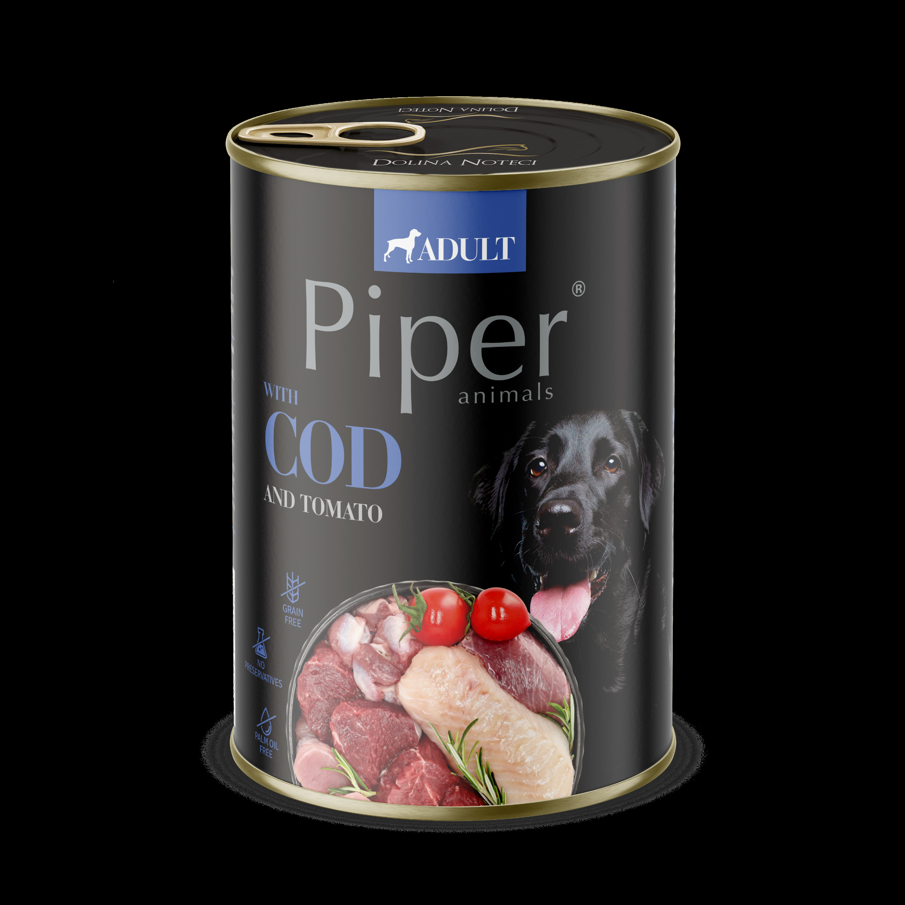
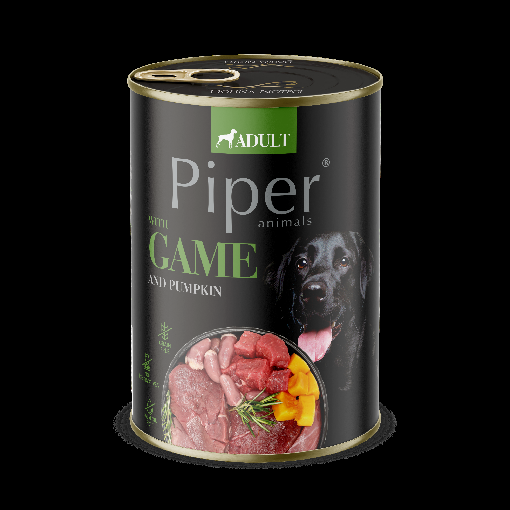

Produs
Descriere
Pret/ fara TVA
Produs
Descriere
Pret/ fara TVA
PIPER ADULT FICAT DE VITA & CARTOFI
PIPER ADULT - PREPELITA & MERISOARE
Hrana umeda pentru caini adulti de toate rasele
Hrana umeda pentru caini adulti de toate rasele. Ingrediente:
Ingrediente: carne si derivate din carne 60% (vita si ficat de
carne si derivate din carne 60% (prepelita), uleiuri si grasimi
vita) , legume (cartofi), uleiuri si grasimi (ulei de in), minerale.
(ulei de in), minerale.
Aditivi nutritionali/ kg: Vit.D 240IU, Vit.E 20mg, Vit.E6/Zinc 13
Aditivi nutritionali/ kg: Vit.D 240 IU, Zinc 13mg (zinc chelator al
mg
glicinhidrat, zincoxid)
Plic 150 g
26 lei
Plic 500 g
39 lei
Conserva 400 g
31 lei
Conserva 400 g
Plic 500 g
39 lei
Conserva 800 g
55 lei
Conserva 800 g
55 lei
PIPER ADULT – BURTA DE VITA
PIPER ADULT CARNE DE VANAT & DOVLEAC
Hrana umeda pentru caini adulti de toate rasele. Ingrediente:
Hrana umeda pentru caini adulti de toate rasele
carne si derivate din carne 60% (burta de vita), uleiuri si
Ingrediente: carne si derivate din carne 60% (vanat) , legume
grasimi (ulei de in), minerale.
(dovleac), uleiuri si grasimi (ulei de in), minerale.
Aditivi nutritionali/ kg: Vit.D 240 IU, Zinc 13mg (zinc chelator al
Aditivi nutritionali/ kg: Vit.D 240IU, Vit.E 20mg, Vit.E6/Zinc 13
glicinhidrat, zincoxid)
mg
Plic 500 g
39 lei
Plic 150 g
Conserva 400 g
31 lei
Conserva 400 g
31 lei
Plic 500 g
39 lei
Conserva 800 g
Conserva 800 g
55 lei
PIPER ADULT - COD & TOMATE
Hrana umeda pentru caini adulti de toate rasele. Ingrediente:
PIPER ADULT CARNE DE MIEL & MORCOV
carne si derivate din carne 60% (cod), uleiuri si grasimi (ulei de
Hrana umeda pentru caini adulti de toate rasele
in), minerale.
Ingrediente: carne si derivate din carne 60% (miel) , legume
Aditivi nutritionali/ kg: Vit.D 240 IU, Zinc 13mg (zinc chelator al
(morcov), uleiuri si grasimi (ulei de in), minerale.
glicinhidrat, zincoxid)
Aditivi nutritionali/ kg: Vit.D 240IU, Vit.E 20mg, Vit.E6/Zinc 13
mg
Conserva 400 g
Plic 150 g
26 lei
Conserva 800 g
Conserva 400 g
31 lei
PIPER ADULT – CURCAN & BROCOLLI
Plic 500 g
39 lei
Hrana umeda pentru caini adulti de toate rasele. Ingrediente:
carne si derivate din carne 60 % (curcan), uleiuri si grasimi
Conserva 800 g
(ulei de in), minerale.
PIPER ADULT INIMI PUI & SPANAC
Aditivi nutritionali/ kg: Vit.D 240 IU, Zinc 13mg (zinc chelator al
Hrana umeda pentru caini adulti de toate rasele
glicinhidrat, zincoxid)
Ingrediente: carne si derivate din carne 60% (pui si inimi de
Conserva 400 g
pui) , legume (de sezon), uleiuri si grasimi (ulei de in), minerale.
Aditivi nutritionali/ kg: Vit.D 240IU, Vit.E 20mg, Vit.E6/Zinc 13
Plic 500 g
39 lei
mg
Plic 150 g
Conserva 800 g
Conserva 400 g
PIPER ADULT – RATA & PERE
Hrana umeda pentru caini adulti de toate rasele. Ingrediente:
Plic 500 g
39 lei
carne si derivate din carne 60 % (curcan), uleiuri si grasimi
Conserva 800 g
(ulei de in), minerale.
Aditivi nutritionali/ kg: Vit.D 240 IU, Zinc 13mg (zinc chelator al
PIPER ADULT – IEPURE SI MAR
glicinhidrat, zincoxid)
Hrana umeda pentru caini adulti de toate rasele. Ingrediente:
carne si derivate din carne 60% (iepure), uleiuri si grasimi (ulei
Conserva 400 g
de in), minerale.
Plic 500 g
Aditivi nutritionali/ kg: Vit.D 240 IU, Zinc 13mg (zinc chelator al
glicinhidrat, zincoxid)
Conserva 800 g
Conserva 400 g
Conserva 800 g
Produs
Descriere
Pret/ fara TVA
PIPER JUNIOR- Carne de vitel si Mere
Hrana umeda pentru caini juniori de toate rasele
Ingrediente : carne si derivate din carne 60%, fructe (mere), uleiuri si
grasimi (ulei de in), derivate de origine vegetala, minerale.
Conserva 400 g
PIPER JUNIOR- Stomac de pui si Orez brun
Hrana umeda pentru caini juniori de toate rasele
Ingrediente : carne si derivate din carne 60%, cereale (orez brun
natural),
uleiuri si grasimi (ulei de in), derivate de origine vegetala, minerale.
Conserva 400 g
PIPER JUNIOR- Inima de vita si Morcovi
Hrana umeda pentru caini juniori de toate rasele
Ingrediente: carne si derivate din carne 60%, legume
(morcovi ), uleiuri si grasimi (ulei de in), derivate de
origine vegetala, minerale.
Conserva 400 g
PIPER DOG - HRANA USCATA
Hrana completa si echilibrata din ingrediente de cea mai buna calitate, cu
digestibilitate ridicata, dedicata cainilor . Asigura mineralizarea corecta a oaselor
si dintilor si sprijina procesele metabolice.
Adaos de OMEGA 3 si OMEGA 6, Vitamina E.
Fara conservanti si aditivi!
PIPER JUNIOR DOG- Hrana uscata cu carne de curcan –
12 kg
PIPER ADULT DOG- Hrana uscata cu carne de vita – 12 kg
1215 lei
PIPER ADULT DOG- Hrana uscata cu carne de somon– 12 kg
1215 lei
PIPER ADULT DOG- Hrana uscata cu carne de pui – 12 kg
PIPER ADULT DOG- Hrana uscata cu carne de rata – 12 kg
1215 lei
PIPER ADULT DOG- Hrana uscata cu carne de miel– 12 kg

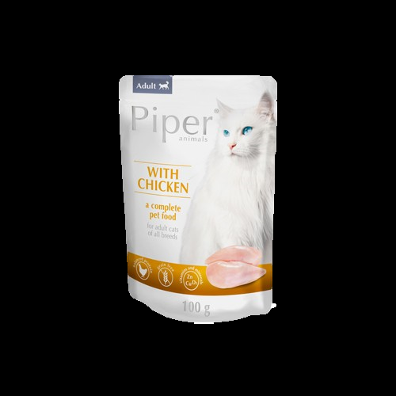

Produs
Descriere
Pret/ fara TVA
Produs
Descriere
Pret/ fara TVA
PIPER CAT Adult cu SOMON
Hrana umeda super premium pentru pisici
adulte, cu nivel moderat de activitate. Contine
EPA, DHA si Omega 6, Taurina 800mg, Minerale
si Vitamine C+D+E. Proteine din carne si
derivate din somon 55%-65%
Plic 100 g
24 lei
Conserva 400 g
45 lei
PIPER CAT Adult cu PUI
PIPER CAT ADULT -Hrana uscata
Hrana umeda super premium pentru pisici
Hrana uscata completa si echilibrata pentru pisici adulte de toate varstele. Contine
adulte, cu nivel moderat de activitate. Contine
carne proaspata si ingrediente de cea mai buna calitate, cu digestibilitate ridicata.
EPA, DHA si Omega 6, Taurina 800mg, Minerale Adaos de Omega 3 si Omega 6 pentru sanatatea pielii si blanii, Vitamina E pentru
si Vitamine C+D+E. Proteine din carne si
intarirea imunitatii.
derivate din pui 55%-65%
Fara aditivi si coloranti.
Plic 100 g
PIPER ADULT CAT- Hrana uscata cu carne de Vita-
3kg
395 lei
Conserva 400 g
PIPER ADULT CAT- Hrana uscata cu carne de Curcan-
PIPER CAT STERILISED cu IEPURE
3kg
Hrana umeda super premium pentru pisici adulte, sterilizate.
Contine L-Carnitina 800mg, Metionina 4000mg, Taurina 800mg,
PIPER ADULT CAT- Hrana uscata cu carne de Pui- 3kg
Minerale si Vitamine C+D+E. Proteine din carne si derivate din
iepure 45%-55% , derivate din plante, Psyllium si Clorura de
PIPER STERILISED CAT- Hrana uscata cu carne de
Amoniu (acidifiant) 0.2g/ kg
SOMON- 3kg
395 lei
PIPER ADULT CAT- Hrana uscata cu carne de Miel-
Plic 100 g
24 lei
3kg
395 lei
Conserva 400 g
45 lei
PIPER ADULT CAT- Hrana uscata cu carne de Rata-
3kg
PIPER CAT STERILISED cu TON
Hrana umeda super premium pentru pisici adulte, sterilizate.
Contine L-Carnitina 800mg, Metionina 4000mg, Taurina 800mg,
Minerale si Vitamine C+D+E. Proteine din carne si derivate din ton
45%-55% , derivate din plante, Psyllium si Clorura de Amoniu
(acidifiant) 0.2g/ kg
Plic 100 g
24 lei
Conserva 400 g
45 lei


Produs
Descriere
Pret
Produs
Descriere
Pret
Recompense atractive cu arome de vanilie. Formula fără făină de
Recompense atractive cu aroma de carne si legume. Formula fără
carne, Îmbogățita cu vitaminele A, D3 și E, Cu adaos de minerale, Fara
făină de carne, Îmbogățita cu vitaminele A, D3 și E, Cu adaos de
indulcitori si OMG, Echilibrat și digerabil.
minerale, Fara indulcitori si OMG, Echilibrat și digerabil. Componente
Componente analitice: proteină brută 10%, ulei și grăsimi brute 6%,
analitice: proteină brută 10%, uleiuri și grăsime 6%, cenușă brută 4%,
cenușă brută 4%, fibre brute 1%.
fibre brute 1%.
Compozitie: cereale, sirop de glucoza, uleiuri si grasimi, subproduse
Compozitie: cereale, sirop de glucoza, uleiuri si grasimi,
vegetale, minerale.
subproduse vegetale, minerale, legume, fructe. Aditivi nutritivi:
Aditivi nutritivi: vitamina A 5.000 UI/Kg, vitamina D3 500 UI/Kg, vitamina
vitamina A 5.000 UI/Kg, vitamina D3 500 UI/Kg, vitamina E 50 mg/Kg.
E 50 mg/Kg
BON APPETIT 300G
75 lei
Macaroons 50G
Recompense atractive cu aroma de sos. Formula fără făină de carne,
(diverse culori/ set: RED, PINK,
50 lei
Îmbogățita cu vitaminele A, D3 și E, Cu adaos de minerale, Fara
ORANGE, PURPLE)
indulcitori si OMG, Echilibrat și digerabil. Componente analitice:
proteină brută 10%, uleiuri și grăsime 6%, cenușă brută 4%, fibre
Miniatures HEARTS 50G
brute 1%.
(diverse culori/ set: PINK, YELLOW,
Compozitie: cereale, sirop de glucoza, uleiuri si grasimi,
RED, PURPLE)
subproduse vegetale, minerale, legume, fructe. Aditivi nutritivi:
vitamina A 5.000 UI/Kg, vitamina D3 500 UI/Kg, vitamina E 50 mg/Kg.
Miniatures HEARTS 8 kg
GRAVY 300G
(diverse culori/ set: PINK, YELLOW,
Recompense atractive cu aroma de lapte . Formula fără făină de
RED, PURPLE)
carne, Îmbogățita cu vitaminele A, D3 și E si Calciu, Cu adaos de
Recompense atractive cu mix arome: rosii, spanac, turmeric, vanilie.
minerale si lapte praf, Fara indulcitori si OMG, Echilibrat și digerabil.
Formula fără făină de carne, Îmbogățita cu vitaminele A, D3 și E, Cu
Componente analitice: proteină brută 10%, uleiuri și grăsime 6%,
adaos de minerale, Fara indulcitori si OMG, Echilibrat și digerabil.
cenușă brută 4%, fibre brute 1%. Compozitie: cereale, sirop de
Componente analitice: proteină brută 10%, uleiuri și grăsime 6%,
glucoza, uleiuri si grasimi,
cenușă brută 4%, fibre brute 1%.
subproduse vegetale, minerale, lapte (min 4%). Aditivi nutritivi:
Compozitie: cereale, sirop de glucoza, uleiuri si grasimi,
vitamina A 5.000 UI/Kg, vitamina D3 500 UI/Kg, vitamina E 50 mg/Kg.
subproduse vegetale, minerale, legume, fructe.
GOOD MORNING 300G
75 lei
Aditivi nutritivi: vitamina A 5.000 UI/Kg, vitamina D3
i
500 UI/Kg, vitamina E 50 mg/Kg.
Recompense atractive cu aroma de musetel si valeriana . Formula
fără făină de carne, Îmbogățita cu vitaminele A, D3 și E, Cu adaos de
FANTASY 300G
minerale , Fara indulcitori si OMG, Echilibrat și digerabil. Pentru un
somn relaxat si odihnitor. Componente analitice: proteină brută 10%,
FANTASY 2 KG
uleiuri și grăsime 6%, cenușă brută 4%, fibre brute 1%. Compozitie:
FANTASY 8 KG
cereale, sirop de glucoza, uleiuri si grasimi, subproduse vegetale,
minerale, valeriana, musetel ( min 4%) .Aditivi nutritivi: vitamina A
Recompense atractive cu aroma mar / fructe de padure. Formula fără
5.000 UI/Kg, vitamina D3 500 UI/Kg, vitamina E 50 mg/Kg.
făină de carne, Îmbogățita cu vitaminele A, D3 și E, Cu adaos de
GOOD NIGHT 300G
75 lei
minerale, Fara indulcitori si OMG, Echilibrat și digerabil. Componente
analitice: proteină brută 10%, uleiuri și grăsime 6%, cenușă brută 4%,
Recompense atractive cu aroma de ROSII, SPANAC, CAROB,
fibre brute 1%.
VANILIE. Formula fără făină de carne, Îmbogățita cu vitaminele A, D3
Compozitie: cereale, sirop de glucoza, uleiuri si grasimi,
și E, Cu adaos de minerale , Fara indulcitori si OMG, Echilibrat și
subproduse vegetale, minerale, legume, fructe (min 4% mar/ fructe de
digerabil. Componente analitice: proteină brută 10%, uleiuri și
padure). Aditivi nutritivi: vitamina A 5.000 UI/Kg, vitamina D3 500 UI/Kg,
grăsime 6%, cenușă brută 4%, fibre brute 1%. Compozitie: cereale,
vitamina E 50 mg/Kg.
sirop de glucoza, uleiuri si grasimi, subproduse vegetale,
FRUITY APPLE 300G
75 lei
minerale .Aditivi nutritivi: vitamina A 5.000 UI/Kg, vitamina D3 500 UI/
Kg, vitamina E 50 mg/Kg.
FRUITY BERRY 300G
GOURMET 300G
FRUITY PINEAPPLE 300G
GOURMET 2KG
GOURMET 8KG


Produs
Descriere
Pret
Produs
Descriere
Pret
Recompense atractive cu aroma de menta. Formula fără făină de
Recompense atractive cu aroma de vanilie & carob. Formula fără
carne, Îmbogățita cu vitaminele A, D3 și E, Cu adaos de minerale,
făină de carne, Îmbogățita cu vitaminele A, D3 și E, Cu adaos de
Fara indulcitori si OMG, Echilibrat și digerabil. Componente
minerale, Fara indulcitori si OMG, Echilibrat și digerabil.
analitice: proteină brută 10%, uleiuri și grăsime 6%, cenușă brută
Componente analitice: proteină brută 10%, uleiuri și grăsime 6%,
4%, fibre brute 1%.
cenușă brută 4%, fibre brute 1%.
Compozitie: cereale, sirop de glucoza, uleiuri si grasimi,
Compozitie: cereale, sirop de glucoza, uleiuri si grasimi,
subproduse vegetale, minerale, legume, fructe. Aditivi nutritivi:
subproduse vegetale, minerale, legume, fructe. Aditivi nutritivi:
vitamina A 5.000 UI/Kg, vitamina D3 500 UI/Kg, vitamina E 50 mg/
vitamina A 5.000 UI/Kg, vitamina D3 500 UI/Kg, vitamina E 50 mg/Kg.
Kg.
FRESH 300G
75 lei
CAPPUCCINO 300G
MICROS FRESH 300G
Recompense atractive cu aroma de vanilie & caramel. Formula fără
făină de carne, Îmbogățita cu vitaminele A, D3 și E, Cu adaos de
minerale, Fara indulcitori si OMG, Echilibrat și digerabil.
CAPPUCCINO 300G
Componente analitice: proteină brută 10%, uleiuri și grăsime 6%,
cenușă brută 4%, fibre brute 1%.
Recompense atractive DIN FAINA DE GRAU INTEGRAL, FORMA
Compozitie: cereale, sirop de glucoza, uleiuri si grasimi,
INIMIOARE. Fara indulcitori si OMG, Echilibrat și digerabil.
subproduse vegetale, minerale, legume, fructe. Aditivi nutritivi:
Componente analitice: proteină brută 10%, uleiuri și grăsime 6%,
vitamina A 5.000 UI/Kg, vitamina D3 500 UI/Kg, vitamina E 50 mg/
cenușă brută 4%, fibre brute 1%.
Kg.
Compozitie: faina din grau integral 100%, maltitol, uleiuri si grasimi,
subproduse vegetale, minerale. Aditivi nutritivi: vitamina A 5.000 UI/
MICROS MIX 300G
75 lei
Kg, vitamina D3 500 UI/Kg, vitamina E 50 mg/Kg.
MICROS MIX 8KG
Ideale pentru cainii cu tendinte de ingrasare sau caini diabetici!
Recompense atractive cu aroma de vanilie. Formula fără făină de
carne, Îmbogățita cu vitaminele A, D3 și E, Cu adaos de minerale,
SUPER LIGHT 300G
75 lei
Fara indulcitori si OMG, Echilibrat și digerabil. Componente
analitice: proteină brută 10%, uleiuri și grăsime 6%, cenușă brută
4%, fibre brute 1%.
Recompense atractive cu aroma de carne si peste. Formula fără
Compozitie: cereale, sirop de glucoza, uleiuri si grasimi,
făină de carne, Îmbogățita cu vitaminele A, D3 și E, Cu adaos de
subproduse vegetale, minerale, legume, fructe. Aditivi nutritivi:
minerale, Fara indulcitori si OMG, Echilibrat și digerabil.
vitamina A 5.000 UI/Kg, vitamina D3 500 UI/Kg, vitamina E 50 mg/
Componente analitice: proteină brută 16%, uleiuri și grăsime 5%,
Kg.
cenușă brută 6%, fibre brute 1.5%.
Compozitie: cereale, carne si derivate din carne, carne si derivate
BABY 300G
75 lei
din peste, sirop de glucoza, uleiuri si grasimi, subproduse vegetale,
BABY 2KG
minerale, legume, fructe. Aditivi nutritivi: vitamina A 5.000 UI/Kg,
vitamina D3 500 UI/Kg, vitamina E 50 mg/Kg.
BABY 8KG
SANDWICH 300G
75 lei
Recompense atractive cu aroma de vanilie si forma de inimioare
rosii. Formula fără făină de carne, Îmbogățita cu vitaminele A, D3
și E, Cu adaos de minerale, Fara indulcitori si OMG, Echilibrat și
digerabil. Componente analitice: proteină brută 10%, uleiuri și
grăsime 6%, cenușă brută 4%, fibre brute 1%.
Compozitie: cereale, sirop de glucoza, uleiuri si grasimi,
subproduse vegetale, minerale, legume, fructe. Aditivi nutritivi:
vitamina A 5.000 UI/Kg, vitamina D3 500 UI/Kg, vitamina E 50 mg/
Kg.
CUORICINO 300G
75 lei
CUORICINO 8KG


Produs
Descriere
Pret
Produs
Descriere
Pret
Recompense atractive cu arome de CARNE. Formula Îmbogățita cu
vitaminele A, D3 și E, Cu adaos de minerale, Fara indulcitori si OMG,
Echilibrat și digerabil.
Componente analitice: proteină brută 22%, ulei și grăsimi brute
RECOMPENSELE PLUTOS BONES
18.5%, cenușă brută 9.5%, fibre brute 2.2%. Compozitie: cereale,
derivate din carne (min4%) , uleiuri si grasimi, subproduse vegetale,
glucoza minerale.
Ingrediente 100% NATURALE: Proteine din lapte, mar,
Aditivi nutritivi: vitamina A 5.000 UI/Kg, vitamina D3 500 UI/Kg,
mazare, aroma naturala, grasime, calciu, lecitina de soia si
vitamina E 50 mg/Kg
pectina de mere.
ROLLIES 300G
75 lei
Arome naturale
ROLLIES 2KG
Unul dintre cele mai importante aspecte ale acestui nou
ROLLIES 8KG
tip de recompense este siguranța –gustarile nu
Recompense atractive cu arome de carne si peste. Formula
formeaza aschii sau bucati periculoase! PLUTOS este
Îmbogățita cu vitaminele A, D3 și E, Cu adaos de minerale, Fara
suficient de greu pentru a fi savurat ca mestecat, dar
indulcitori si coloranti, Echilibrat și digerabil. Componente analitice:
proteină brută 15.5%, uleiuri și grăsime 8%, cenușă brută 5.5%, fibre
devine suficient de moale cu saliva și acțiunea de
brute 2%. Compozitie: cereale, sirop de glucoza, uleiuri si grasimi,
mușcătură pentru a fi mestecat în siguranță de câini de
subproduse vegetale, minerale, peste si derivate din peste.
diferite vârste și dimensiuni, prevenind ruperea dinților,
Aditivi nutritivi: vitamina A 5.000 UI/Kg, vitamina D3
500 UI/Kg, vitamina E 50 mg/Kg.
pericolul de sufocare sau blocajele stomacului/
MINI ROLIIES 300G
intestinului.
Formulele conțin cazeină, o proteină din lapte fără
MINI ROLLIES 8KG
lactoză, conținut scăzut de grăsimi, care are un efect
Recompense atractive cu aroma de ROSII, SPANAC, CAROB,
antibacterian prevenind formarea plăcii si eliminând
VANILIE.
Forma- OS XL Formula fără făină de carne, Îmbogățita cu vitaminele
respirația urât mirositoare. Deoarece sunt bogate în
A, D3 și E, Cu adaos de minerale , Fara indulcitori si OMG, Echilibrat
calciu, întăresc dentitia.
și digerabil. Componente analitice: proteină brută 10%, uleiuri și
Acceptabilitate 99 până la 100% - este un nou tip de
grăsime 6%, cenușă brută 4%, fibre brute 1%. Compozitie: cereale,
sirop de glucoza, uleiuri si grasimi, subproduse vegetale,
gustare, realizat din proteine din lapte fără lactoză, este un
minerale .Aditivi nutritivi: vitamina A 5.000 UI/Kg, vitamina D3 500 UI/ produs pe care câinii adoră să-l mestece, bogat în proteine,
Kg, vitamina E 50 mg/Kg.
calciu și vitamin!
BISCOSSONE DISPLAY
Arome si dimensiuni diverse!
(16*50g)
PLUTOS CHEESE & BEEF
Recompense atractive cu aroma de carne. Îmbogățite cu vitaminele
PLUTOS CHEESE & CHICKEN
A, D3 și E, Cu adaos de minerale, Fara indulcitori si OMG, Echilibrat
și digerabil. Pentru o dentitie sanatoasa. Ideal pentru cainii de talie
PLUTOS CHEESE & CHORISO
mare. Componente analitice: proteină brută 18%, uleiuri și grăsime
PLUTOS CHEESE & DUCK
12%, cenușă brută 7.5%, fibre brute 2.5%.
PLUTOS CHEESE & LAMB
Compozitie: cereale, sirop de glucoza, uleiuri si grasimi,
subproduse vegetale, minerale, legume, fructe. Aditivi nutritivi:
PLUTOS CHEESE & PORK HAM
vitamina A 5.000 UI/Kg, vitamina D3 500 UI/Kg, vitamina E 50 mg/Kg.
PLUTOS CHEESE & SALMON
LINGOSO 1 buc (90g)
PLUTOS CHEESE & KRILL
Recompense atractive cu aroma de carne. Îmbogățite cu vitaminele
A, D3 și E, Cu adaos de minerale, Fara indulcitori si OMG, Echilibrat
PLUTOS SMALL
50 lei
și digerabil. Pentru o dentitie sanatoasa. Ideal pentru cainii de talie
mare.
PLUTOS MEDIUM
65 lei
Componente analitice: proteină brută 19%, uleiuri și grăsime 7%,
PLUTOS LARGE
90 lei
cenușă brută 7.5%, fibre brute 2%. Compozitie: cereale, sirop de
glucoza, uleiuri si grasimi,
subproduse vegetale, minerale. Aditivi nutritivi: vitamina A 5.000 UI/
Kg, vitamina D3 500 UI/Kg, vitamina E 50
BAGUETTE 8KG
Produs
Descriere
Pret
Produs
Descriere
Pret
STRESS OUT SHOT TABLETS
MILK POWDER
Formula cu effect rapid pentru animalele supuse
Lapte praf, inlocuitor complet pentru laptele
unor situatii de stress imediat: vizite la veterinar,
matern, inca din prima zi de viata. Formule
grooming, artificii, furtuni, petreceri, calatorii.
dedicate pentru catelusi si pisicute. Aport de
α-CASOZEPINĂ (Lactium®)
nutrienti esentiali, vitamine si minerale pentru
• este o peptidă naturală derivată din laptele de vacă, ajutând
o crestere armonioasa.
mamifere pentru a atinge o stare de relaxare (mecanismul
PREBIOTICE, FIER, TAURINA, PROTEINE SI
acesteia de acţiune a fost recunoscută la nou-născuţii hrăniţi
GRASIMI USOR DE ASIMILAT. Recomandat
cu sân lapte)
L-TRIPTOFAN
atat puilor, cat si femelelor aflate in perioada
• reduce tonusul muscular și susceptibilitatea la stres
de lactatie.
• este un aminoacid esential - trebuie furnizat odata cu dieta
Ambalajul contine: BIBERON + 2 TETINE
• este un precursor al serotoninei (un care reglează starea de
Milk KITTEN- 300g
314 lei
spirit neurotransmițător), necesar pentru sinteza acestuia
VITAMINELE B sunt necesare pentru buna functionare a
Milk PUPPY- 300g
314 lei
sistemului nervos
INTESTINAL PASTE
Dozare: 1 tab/ 10 kg gc/ zi (tablete)
Recomandata în cursul diareei acute
3g/ 10 kg gc/zi (pasta)
(indiferent de cauză: intoxicații alimentare, boli
Nu provoaca dependenta! Poate fi administrat animalelor cu
infecțioase ale sistemului digestiv, stres sever,
varste peste 3 luni. Administrare MAXIM 3 saptamani.
alergie sau intoleranță alimentară)• în timpul
10 tabs
convalescenţei• pentru a contracara
STRESS OUT TABLETS & PASTE
consecințele negative ale diareei: slăbirea
Formula pentru sprijinul comportamental al
organismului, deshidratare
animalelor aflate in situatii de stres cronic:
DEXTROZĂ, BENTONITĂ, SODIU SI POTASIU
separare, adaptare.
Dozare: 4g/ 10 kg gc
L-TRIPTOFAN
• reduce tonusul muscular și susceptibilitatea la stres
Tub 40g
• este un aminoacid esential - trebuie furnizat odata cu dieta •
SKIN & COAT PASTE
este un precursor al serotoninei (un care reglează starea de
Susține funcția pielii în cazuri de dermatoză,
spirit neurotransmițător), necesar pentru sinteza acestuia
căderea părului sau alte afectiuni care
TAURINA
• inhibă hiperactivitatea în perioadele de stres
influenteaza calitatea pielii si blanii.
• are afinitate pentru receptorii GABA (un neurotransmiţător
Niveluri ridicate de acid linoleic (LA) și
care inhibă activitatea neuronilor din sistemul nervos),
cantitatea de acid eicosapentaenoic (EPA) și
reducând astfel excitabilitatea, al cărei exces poate duce la
acid docosahexaenoic (DHA).
sentimente crescute de anxietate
L-TEANINA
• calmează fără a provoca toropeală
ULEI DE SOMON, ULEI DE PRIMULA, BIOTINĂ
• promovează activitatea undelor cerebrale alfa responsabile
Dozare: 6g/ 5 kg gc
de inducerea unei stări de relaxare
Tub 105 g
ACIZI GRASI NESURAȚI DIN FAMILIA OMEGA-3 (NUMAI IN
IMMUNO PASTE
PASTA)
ACIZI DHA și EPA contracarează declinul cognitiv cauzat prin
Se recomanda in cazuri de imunitate scazuta,
stres cronic
perioade de tratament impotriva infectiilor,
VITAMINELE B sunt necesare pentru buna functionare a
convalescenta sau preventive atunci cand
sistemului nervos
animalul va lua contact cu alte animale.
Dozare: 1 tab/ 10 kg gc/ zi (tablete)
Poate fi administrate animalelor de toate
3g/ 10 kg gc/zi (pasta)
Nu provoaca dependenta! Poate fi administrat animalelor cu
varstele.
varste peste 3 luni.
ULEI DE SOMON, ULEI DE FICAT DE COD,
10 tabs
BETA-GLUCAN
30g
Dozare: 3 g/ 10 kg gv
Tub 105 g


Produs
Descriere
Pret
VETEXPERT - Solutie Auriculara
Solutie pentru ingrijirea canalului auricular la caini si
Produs
Descriere
Pret
pisici.
Spray REPELEX PLUS
Formula contine: acid lactic, acid salicilic, ulei din
Spray educativ repelent cu efect repelent indelungat, care
arbore de ceai, glicerina, acid hialuronic, pantenol,
indeparteaza animalele de anumite zone/ obiecte, evitand urinarea/
marcarea sau daunele in locuinta.
extract de menta si aloe.
Efect 14-18 ore
Spray 100 ml
122lei
Flacon cu picurator 75ml
138 lei
Spray 300 ml
USZU- Solutie pt Igiena Otica
Spray REPELEX
Contine Lanolina PEG 75, Extracte de Euphrasia
Spray educativ repelent cu efect repelent, care indeparteaza
animalele de anumite zone/ obiecte, evitand urinarea/ marcarea
Officinalis, Camelia Sinensis, Collagen hidrolizat,
sau daunele in locuinta.
Alantoina, Acid salicilic.
Efect 7-12 ore
Dedicat igienei de rutina a urechilor cainilor si
Spray 100 ml
pisicilor.
Spray BITER
Spray repelent amar care previne rosul sau mestecarea
obiectelor pe care se pulverizeaza.
Flacon cu picurator 75ml
Nu este daunator pentru animale
(efect 6-8 ore)
OTIKOR- Solutie pentru igiena urechilor predispose
Spray 100 ml
99lei
la otite
TRENEX
Recomandat pentru igiena regulata a urechilor cu tendinta de
Spray attractant pentru educarea catelusilor si pisicutelor;
recidiva a otitei externe, mai ales pt animalele carora le place
poate fi folosit si in spatii exterioare. Se aplica pe locurile/ zonele
sa inoate si la rasele cu pinne lungi si grele. pH-ul acid al
unde dorim ca animalul sa urineze.
lichidului (în intervalul 4,3–4,9) creează un mediu în canalul
Spray 100 ml
150lei
urechii externe care este nefavorabil creșterii microbiene,
ajutând la restabilirea echilibrului fiziologic.
ATRAKTIS - pentru pisici
Acid boric, Acid acetic, Mentol, Glicerina, alantoina și pantenol
Spray atractant ce contine extract natural de Iarba pisicii, care
sporeste atractivitatea pisicilor spre zonele si obiecte pe care se
pulverizeaza (patut, litiera,jucarii);
Flacon cu picurator 75ml
Produsul are un miros placut si este complet inofensiv pentru
om si animale.
VETEXPERT -Solutie pentru curatarea zonei
Spray 100 ml
122lei
perioculare
VIVISOL
Solutie pentru curatarea petelor lacrimale de pe blana
Spray repelent ptr femelele in calduri.
Neutralizeaza mirosurile care atrag masculii. Se pulverizeaza pe
alba din jurul ochilor sau alte zone.
zona care emana mirosul atractant pentru masculi. Formula contine: acid lactic, acid hialuronic, acid
(efect 6-8 ore)
boric, extract de strugurii ursului.
Spray 100 ml
122lei
Flacon 100 ml
140 lei
MASKOL ENZYME
Spray care indeparteaza mirosurile neplacute emanate de urina
OCZU- Igiena perioculara
cainilor si pisicilor de pe pardoseli, covoare si mobilier.
Solutie pentru ingrijirea zonei din jurul ochilor.
Spray 100 ml
Protejeaza impotriva infectiilor si agentilor externi,
curata petele lacrimale.
Flacon cu picurator 75ml


Produs
Descriere
Pret
Recompensă umedă pentru pisici adulte, cu pui și vită – conține 45% piept de pui,
6% vită și bulion. Recompensă cu ton și somon – conține 40% ton, 10% somon și
bulion. Recompensă cu pui și miel – conține 45% piept de pui, 6% miel și bulion.
Toate rețetele includ taurină 500 mg/kg, vitamina E 500 mg/kg și caragenan 5.000 mg/
kg. Analiză nutrițională: proteină brută 11%, grăsime 0,5%, fibre 0,8%, cenușă 1,8%,
umiditate 84%. Energie metabolizabilă: 78,74 kcal/100 g.
3*80g
90 lei
Aceste recompense sunt hrană complementară pentru pisici adulte, se administrează
între mese și nu trebuie să depășească 15% din rația zilnică. A se păstra într-un loc
uscat și răcoros. Produsul nu este destinat consumului uman și trebuie ferit de copii și
animale.
Mr. Bandit Jelly Tuna – conține 50% ton și bulion. Mr. Bandit Jelly Chicken – conține
3*80g
50% carne din piept de pui și bulion. Mr. Bandit Jelly Tuna with Cheese – conține 50%
90 lei
ton, bulion și 4% brânză.
Mr. Chicken Bandit – hrană umedă pentru câini energici.
O formulă completă, bazată pe o singură sursă excelentă de proteine – puiul,
îmbogățită cu ingrediente benefice: dovleac (antioxidant natural), morcovi (sursă de
fibre) și merișoare (pentru susținerea sănătății tractului urinar).Compoziție: pui 62%
180 g
(inclusiv carne musculară 34%, ficat 18%, inimă 4%, grăsime 3%, piele 3%), bulion de
pui 28%, amidon de cartofi 4%, dovleac 2%, morcov 2%, orez 1,7%, merișoare uscate
22 lei
0,3%.
Mr. Chicken & Beef Bandit
180 g
Compoziție: pui 43% (inclusiv carne musculară 32%, inimă 4%, grăsime 3%, piele
22 lei
4%), bulion de vită 27%, vită 20%, amidon de cartofi 4%, dovleac 2%, morcov 2%,
orez 1,7%, merișoare uscate 0,3%.
Mr. Chicken & Tuna Bandit
180 g
Compoziție: pui 48% (inclusiv carne musculară 25%, ficat 17%, grăsime 3%, piele
3%), bulion de ton 27%, ton 15%, amidon de cartofi 4%, dovleac 2%, morcov 2%,
22 lei
orez 1,7%, merișoare uscate 0,3%.
Mr. Chicken & Salmon Bandit
180 g
Compoziție: pui 50% (inclusiv carne musculară 27%, ficat 17%, grăsime 3%, piele
3%), bulion de somon 27%, somon 13%, amidon de cartofi 4%, dovleac 2%, morcov
22 lei
2%, orez 1,7%, merișoare uscate 0,3%.
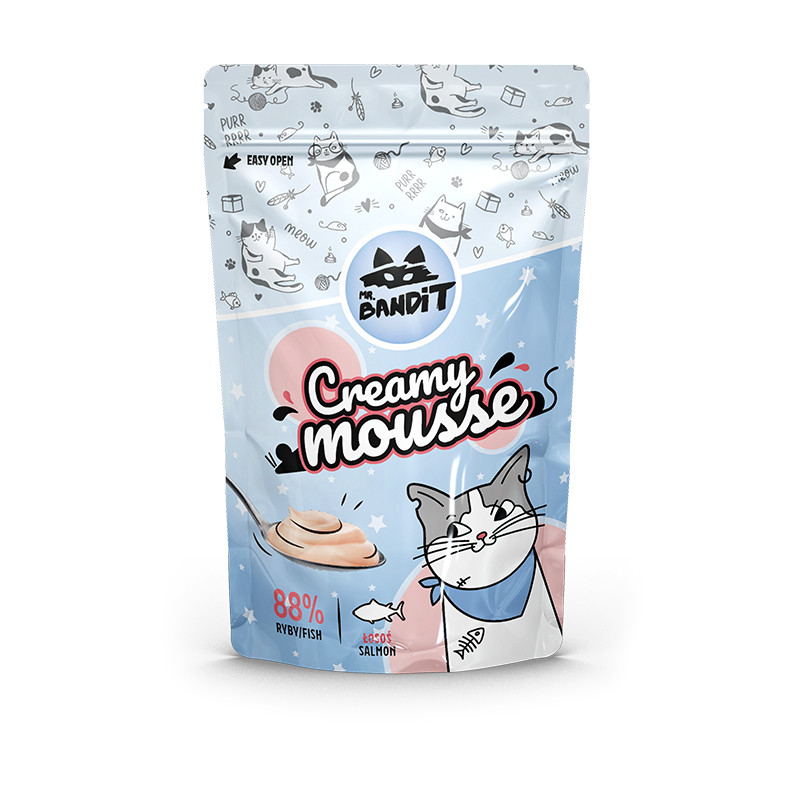

Produs
Descriere
Pret/ fara TVA
Produs
Descriere
Pret/ fara TVA
Pui 73%, somon 15%, ton
Ton 96,77%,
bonito 5%, amidon de cartofi, Juicy Rolls SALMON- 40g
fructooligozaharidă
Pure Fillets
proteine de arahide, drojdie. Rulouri moi umplute cu
2,88%, extract de ton
Steamed Tuna
Aditivi nutritionali/kg:
sos
0,32%. Aditivi
30g
taurină (3a370) 5000mg,
tehnologici/kg:
vitamina E (3a700) 5000mg
52 lei
Carboximetilceluloză
38 lei
(1E466) 300 mg
Pui 73%, ton 15%, ton bonito
Pure Fillets Grilled
5%, amidon de cartofi,
proteine de arahide, drojdii.
Juicy Rolls TUNA- 40g
carne piept de pui
Chicken
Aditivi nutritivi/kg: taurină
Rulouri moi umplute cu
100%, gatita la grill
30g
(3a370) 5000 mg, vitamina E
sos
38 lei
(3a700) 5000 mg
carne de pui 99,7%,
Pure Fillets
Pui 73%, carne de vită 15%,
fulgi de peste
Chicken &
ton bonito 5%, amidon de
Juicy Rolls BEEF- 40g
afumat, extract de
Smocked Fish
cartofi, proteine de arahide, Rulouri moi umplute cu
ton
30g
drojdii.
sos
carne piept de pui
Pure Fillets
Aditivi nutritivi/kg: taurină
100%,
Chicken Breast
(3a370) 5000 mg, vitamina E
52 lei
Gatita la aburi
30g
(3a700) 5000 mg
Somon (făină) 17%, pui (făină)
15%, creveți (făină) 15%,
Crunchy Pockets
Pui 73%, gălbenuș 15%, ton
gălbenuș de ou uscat 15%, făină
bonito 5%, amidon de cartofi,
de orez, făină de porumb,
Salmon
Juicy Rolls YOLK- 40g
proteine de arahide, grăsime de
Pernute Crocante
proteine de arahide, drojdii.
vită 5%.
Rulouri moi umplute cu
Aditivi nutritivi/kg: taurină
40g
Aditivi nutritivi/kg: Taurină
(3a370) 6000 mg, vitamina A
sos
(3a672a) 5000 mg, vitamina D3
(3a370) 5000 mg, Vitamina E
(3a671) 5000 mg, vitamina E
28 lei
(3a700) 5000 mg
(3a700) 4000 mg
Ton (făină) 17%, pui (făină) 15%,
Piept de pui 44%, creveți
Creamy Mousse
creveți (făină) 15%, gălbenuș de
ou uscat 15%, făină de orez,
40%, hidrolizate de creveți
Chicken & Shrimp
Crunchy Pockets
făină de porumb, proteine de
4,6%, amidon 1%, făină de
60 g (6x10g)
arahide, grăsime de vită 5%.
Tuna
Aditivi nutritivi/kg: taurină
roșcove 1%, minerale 0,5%,
Pernute Crocante
(3a370) 6000 mg, vitamina A
(3a672a) 5000 mg, vitamina D3
ulei de rapiță 0,4%
46 lei
40g
(3a671) 5000 mg, vitamina E
(3a700) 4000 mg
Piept de pui 84%, hidrolizate
Ton (făină) 17%, pui (făină) 17%,
de pui 4,6%, amidon 1%,
creveți (făină) 13%, gălbenuș de
Creamy Mousse Chicken
ou uscat 15%, făină de orez,
Crunchy Pockets
faina de roscove 1%,
făină de porumb, proteină de
60 g (6x10g)
arahide, grăsime de vită 5%.
Tuna & Chicken
minerale 0,5%, ulei de rapita
Aditivi nutritivi/kg: taurină
Pernute Crocante
0,4%
(3a370) 6000 mg, vitamina A
(3a672a) 5000 mg, vitamina D3
40g
Somon 84%, hidrolizate de
(3a671) 5000 mg, vitamina E
Creamy Mousse Salmon
(3a700) 4000 mg
somon 4,6%, amidon 1%,
Ton (făină) 17%, creveți (făină)
60 g (6x10g)
Crunchy Pockets
gumă de roșcove 1%,
17%, pui (făină) 13%, gălbenuș
de ou uscat 15%, făină de orez,
Tuna & Shrimp
minerale 0,5%, ulei de rapiță
făină de porumb, proteină de
46 lei
arahide, grăsime de vită 5%.
Pernute Crocante
0,4%
Aditivi nutritivi/kg: taurină
40g
Ton 84%, hidrolizate de ton
Creamy Mousse Tuna
(3a370) 6000 mg, vitamina A
(3a672a) 5000 mg, vitamina D3
4,6%, amidon 1%, făină de
60 g (6x10g)
(3a671) 5000 mg, vitamina E
(3a700) 4000 mg
28 lei
roșcove 1%, minerale 0,5%,
ulei de rapiță 0,4%.
46 lei


Produs
Descriere
Pret/ fara TVA
Produs
Descriere
Pret/ fara TVA
OASE BONSO
JERKY FILLETS
Piept rata/ pui, miel,
piept pui/ rata (90%),
glicerina, amidon,
glicerina, proteina din
proteine din soia,
alune, sare,
conservanti. Proteine:
conservanti,
30%, Grasime 2%,
stabilizatori. Proteine:
Fibre 0.8%, Cenusa
40%, Grasime 3%,
5%, Umiditate 23%.
Fibre 0.2%, Cenusa
Bonso chicken bone (pui)- 500g
4%, Umiditate 23%.
Bonso duck bone (rata)- 500g
Jerky duck (Rata)- 80g
68 lei
Bonso lamb bone (miel)- 500g
337 lei
Jerky duck (Rata)- 500g
220 lei
OASE CHEWI
Jerky chicken (pui)- 500g
Burta vita (50%), piept
pui/ rata, glicerina,
FISH CUBES ( SALMON)- 500g
amidon din cartof,
LOOPER KNOTS
conservanti. Proteine:
piept pui/ rata
60%, Grasime 1.5%,
(88.9%), glicerina,
Fibre 0.2%, Cenusa
amidon din cartofi,
2%, Umiditate 21%.
conservanti. Proteine:
Chewy chicken (pui)- 500g
30%, Grasime 2%,
Chewy chicken &duck (pui &rata)- 500g
Fibre 0.8%, Cenusa
GUSTARE HUNTER
5%, Umiditate 23%.
Ureche de iepure
Looper duck (rata)- 80g
(30%), piept pui/ rata
Looper chicken (pui)- 80g
(60%), glicerina,
Looper duck (rata)- 500g
224 lei
proteine din alune,
conservanti. Proteine:
Looper chicken (pui)- 500g
45%, Grasime 3.5%,
RAWSTICKS
Fibre 3%, Cenusa 4%,
Betisoare din piele
Umiditate 21%.
vita (21%) piept pui/
Hunter rabbit& chicken ( urechi iepure & piept pui)-
rata, glicerina,
500g
conservanti. Proteine:
Hunter rabbit &chicken (urechi iepure & piept rata)-
45- 57%, Grasime 3%,
500g
Fibre 0.2%, Cenusa
4%, Umiditate 23%.
Hunter rabbit & FISH (urechi iepure & peste)- 500g
Rawstick duck (rata)- 500g
Rawstick chicken (pui)- 500g
Hunter rabbit & beef (urechi iepure & vita)- 500g


Produs
Descriere
Pret/ fara TVA
SANDWICH
Sandwich de pui
&peste
Produs
Descriere
Pret/ fara TVA
Piept de pui 76% peste (cod)
16.5%,, glicerina, proteine din
MEAT STRIPS
alune, conservanti.
Sandwich de rata&
vita
Piept rata 85.9%/
Piept de rata 45% , piele de
iepure 30%/ piept de
vita 43%,, glicerina, proteine
pui 90%, glicerina,
din alune, conservanti,
proteine din alune,
stabilizatori.
Sandwich chicken &fish (pui &peste)- 500g
conservanti. Proteine:
Sandwich beef &duck (rata&vita)- 500g
245 lei
40%, Grasime 2%,
Fibre 1%, Cenusa 4%,
Sandwich beef & rabbit (vita& iepure)- 500g
Umiditate 23%.
Strips chicken (pui)- 80g
Sandwich lamb (miel)- 500g
Strips chicken (pui)- 500g
Sandwich beef (vita)- 500g
Strips rabbit (iepure)- 80g
Sandwich rabbit (iepure)- 500g
Strips duck (rata)- 80 g
SKIPPER
Strips rabbit (iepure)- 500g
260 lei
Oase din calciu (50%),
Strips duck (rata)- 500g
225 lei
piept de rata/ pui
44.5%, glicerina,
Strips lamb (miel)- 500g
260 lei
conservanti. Proteine:
Strips lamb (miel)- 500g
28%, Grasime 2%,
SUSHI
Fibre 0.2%, Cenusa
Peste (min 21%),
4%, Umiditate 20%.
piept rata/ pui/ iepure,
Skipper duck bones (oase cu rata)- 500g
180 lei
glicerina, amidon din
Skipper chicken bones (oase cu pui)- 500g
porumb, conservanti,
CHOPS
stabilizatori. Proteine:
Piept de pui 38.5%,
30%, Grasime 2%,
proteine din soia,
Fibre 0.2%, Cenusa
amidon din
4%, Umiditate 23%.
porumb,proteine din
Sushi chicken &fish (pui& peste)- 80g
alune, glicerina,
Sushi chicken &fish (pui& peste)- 500g
conservanti,
Sushi chicken &rabbit (pui& iepure)- 500g
stabilizatori. Proteine:
38%, Grasime 2%,
Sushi rabbit& fish (iepure& peste)- 80g
52 lei
Fibre 1.5%, Cenusa
Sushi rabbit& fish (iepure& peste)- 500g
3%, Umiditate 20%.
Sushi duck &fish (rata& peste)- 80g
52 lei
Chops chicken fillets (pui)- 500g
Sushi duck &fish (rata& peste)- 500g


Produs
Descriere
Pret/ fara TVA
TWISTER STICKS
Produs
Descriere
Pret/ fara TVA
Piele de vita (46%),
WRAPPER XL
miel/ pui/ iepure,
glicerina, amidon din
(13cm)
cartof
cartof, protein din
Piele de vita
alune, conservanti,
(61.9%), piept rata/
stabilizatori. Proteine:
pui (30%), glicerina,
55%, Grasime 1.5%,
conservanti.
Fibre 0.2%, Cenusa
Proteine: 60%,
2%, Umiditate 21%.
Grasime 1.5%, Fibre
Twister chicken (pui)- 80g
0.2%, Cenusa 2%,
Twister chicken (pui)- 500g
Umiditate 21%.
Twister rabbit (iepure)- 500g
299 lei
Wrapper XL chicken (pui)- 500g
Twister beef (vita)- 500g
Wrapper XL duck (rata)- 500g
Twister lamb (miel)- 500g
299 lei
WRAPPER XXXL (20
SOFT STRIPS
cm)
piept rata/ pui
Piele de vita (61.9%),
(71.5%), peste –cod
piept rata/ pui (30%),
(25%), glicerina,
glicerina, conservanti.
conservanti. Proteine:
Proteine: 60%,
32%, Grasime 3%,
Grasime 1.5%, Fibre
Fibre 0.2%, Cenusa
0.2%, Cenusa 2%,
4%, Umiditate 23%.
Umiditate 21%.
Soft strips chicken &fish (pui & cod )- 80g
Wrapper XXXL chicken (pui)- 500g
Wrapper XXXL duck (rata)- 500g
230 lei
Soft strips duck &fish (rata & cod )- 80g
WRAPPER
Soft strips chicken &fish (pui & cod )- 500g
Piele de vita (48.5%),
Soft strips duck &fish (rata & cod )- 500g
piept rata/ pui (48%),
DUMBELL
glicerina, conservanti.
Piept de pui 45%,
Proteine: 50%,
Piele de vita
Grasime 2%, Fibre
42.5%,proteine din
0.2%, Cenusa 4%,
alune, glicerina,
Umiditate 18%.
pudra de orez
Wrapper duck sticks (rata)- 80g
69 lei
conservanti. Proteine:
38%, Grasime 3%,
Wrapper duck sticks (rata)- 500g
260 lei
Fibre 0.2%, Cenusa
Wrapper chicken sticks (pui)- 500g
4%, Umiditate 20%.
Dumbell chicken (pui)- 500g
Produs
Descriere
Pret/ fara TVA
Produs
Descriere
Pret/ fara TVA
STEAKS
HEARTS
Compoziție: vită 40%/ miel
Recompense in forma
40%/ rabbit 50%, piept de
de inimioara.
rață 30%, cod 16,9%,
Compoziție: vită 55% sau
glicerină 5%, amidon de
rata 50%, piept de pui
porumb 3,5%, proteine de
30,5%, proteine de arahide
arahide 3,5%. Aditivi
7%, amidon de porumb
4%, glicerină 3,5%.
tehnologici: conservant,
Constituenți analitici:
stabilizator.
proteină brută 35%,
grăsime brută 1%, cenușă
Constituenți analitici:
brută 4%, fibre brute 4%,
proteină brută 35%, grăsime
umiditate 21%.
brută 3%, cenușă brută
HEARTS BEEF (vita)-500g
0,6%, fibre brute 4%,
HEARTS DUCK (rata)-500g
69 lei
umiditate 20%.
HEARTS DUCK (rata)-80g
STEAKS Lamb & Duck ( Miel si rata) -500g
220 lei
SOFT STICKS
STEAKS Beef & Duck ( Vita si rata) -500g
220 lei
Compoziție: miel 55% sau
STEAKS Rabbit & Duck ( Iepure si rata)
vita, carne de pui 30,3%,
-500g
240 lei
proteine de arahide 7%,
LOLLIPOPS
amidon de porumb 4%,
Compoziție: vită 52%/ rata
glicerină 3,5%.
39%/ iepure 48%, piept de rață
Constituenți analitici:
20%, piele de vită 20%,
proteină brută 28%,
proteine de arahide 3%,
grăsime brută 1%, cenușă
amidon de cartof 1,5%,
brută 4%, fibre brute 4%,
glicerină 2%, semințe de susan
umiditate 21%.
1%. Aditivi tehnologici:
SOFT STICKS LAMB ( MIEL)- 500G
220 lei
conservant, stabilizator.
SOFT STICKS BEEF (VITA)- 500G
Constituenți analitici: proteină
SOFT STICKS LAMB ( MIEL)- 80 G
68 lei
brută 36%, grăsime brută 1%,
SOFT STICKS BEEF (VITA)- 80 G
cenușă brută 4%, fibre brute
4%, umiditate 21%.
LOLLIPOP BEEF (vita)-500g
262 lei
LOLIPOP LAMB & DUCK (miel si rata)-500g
262 lei
LOLLIPOP RABBIT (miel)-500g


Produs
Descriere
Pret/ fara TVA
Produs
Descriere
Pret/ fara TVA
SPORT EXTRA
DONUTS
Carne si derivate din
Piele de vita 61%,
carne (85%, minim
carne (min 30%),
9.5% miel/ rata/
protein din alune
iepure/peste),
3.5%, glicerina 3.5%,
derivate vegetale,
conservanti.
uleiuri si grasimi,
Proteine: 60%,
minerale. Proteine:
Grasime 1.5%, Fibre
48.8%, Grasime 9.6%,
0.2%, Cenusa 2%,
Fibre 1.6%, Cenusa
Umiditate 21%.
0.84%, Umiditate 21%.
Donut Duck (rata)- 500g
Sport EXTRA lamb (miel)- 150g
Donut Lamb & Duck (miel & rata)- 500g
210 lei
Sport EXTRA rabbit (iepure)- 150g
Donut Chicken & Duck (pui & rata)- 500g
Sport EXTRA duck (rata)- 150g
90 lei
Donut Beef & Duck (vita & rata)- 500g
245 lei
Sport EXTRA fish (peste)- 150g
90 lei
Sport EXTRA gasca- 150g
90 lei
Sport EXTRA lamb - 150g
90 lei
Sport EXTRA strut 150g
90 lei
Sport EXTRA vânat 150g
90 lei
SPORT MAXI
Cereale si derivate
vegetale, uleiuri,
carne si derivate
animale (min 3.3%
miel/ pui/ vita).
Proteine: 13.25%,
Grasime 5%, Fibre
1.5%, Cenusa 2.75%,
Umiditate 25.5%.
Sport MAXI Chicken (pui)- 500g
Sport MAXI Lamb (miel)- 500g
Sport MAXI Beef (vita)- 500g
SPORT MINI MINT
Cereale si derivate
vegetale, uleiuri si
grasimi, carne si
derivate animale,
aditivi senzoriali 0.5%
peppermint. Proteine:
11.7%, Grasime 5.9%,
Fibre 1%, Cenusa 2%,
Umiditate 24%
Sport MINI MINT - 150g

Produs
Descriere
Pret/ fara TVA
Mr Bandit DENTAL STICKS- Beef
Recompensa gustoasa, cu rol de curatare dentara.
Forma- baton/ stick cu aroma de vita
Structura flexibilă a gustarilor Mr. Bandit Dental asigură o
curățare mai eficientă și o plăcere mai lungă pentru mestecat
Ingrediente: Produse de origine vegetală (inclusiv lapte de
cocos 6%), extracte de proteine vegetale, carne de vită 13%,
glicerină, alge uscate 4% (Laminaria japonica), mentă uscată
1%, minerale. Aditivi tehnologici/100g: calciu (carbonat de
calciu) 150 mg, Compusi analitici:
Proteină brută 10%, Grăsime brută 3% Fibre brute 4% , Cenușă
brută 2,5%, Umiditate 18%
Plic 110 g
Mr Bandit DENTAL STICKS- Duck
Recompensa gustoasa, cu rol de curatare dentara.
Forma- baton/ stick cu aroma de rata
Structura flexibilă a gustarilor Mr. Bandit Dental asigură o
curățare mai eficientă și o plăcere mai lungă pentru mestecat
Ingrediente: Produse de origine vegetală (inclusiv lapte de
cocos 6%), extracte de proteine vegetale, carne de vită 13%,
glicerină, alge uscate 4% (Laminaria japonica), mentă uscată
1%, minerale. Aditivi tehnologici/100g: calciu (carbonat de
calciu) 150 mg, Compusi analitici:
Proteină brută 10%, Grăsime brută 3% Fibre brute 4% , Cenușă
brută 2,5%, Umiditate 18%
Plic 110 g
Mr Bandit DENTAL STARS- Beef
Recompensa gustoasa, cu rol de curatare dentara.
Forma- baton stelat cu aroma de vita
Structura flexibilă a gustarilor Mr. Bandit Dental asigură o
curățare mai eficientă și o plăcere mai lungă pentru mestecat
Ingrediente: Produse de origine vegetală, carne de vită 16%,
extracte de proteine vegetale, pudră de ficat de pasăre 4%,
glicerină, sorbitol, alge uscate 4% (Laminaria japonica), mentă
uscată 1%
Compusi analitici: Proteină brută 8,7%, Fibre brute 3%
Grăsime brută 1,5%, Cenușă brută 2,2%, Umiditate 18%
Plic 70 g
52 lei
Mr Bandit DENTAL STARS- Duck
Recompensa gustoasa, cu rol de curatare dentara.
Forma- baton stelat cu aroma de rata
Structura flexibilă a gustarilor Mr. Bandit Dental asigură o
curățare mai eficientă și o plăcere mai lungă pentru mestecat
Ingrediente: Produse de origine vegetală, carne de rată 16%,
extracte de proteine vegetale, pudră de ficat de pasăre 4%,
glicerină, sorbitol, alge uscate 4% (Laminaria japonica), mentă
uscată 1%
Compusi analitici: Proteină brută 8,7%, Fibre brute 3%
Grăsime brută 1,5%, Cenușă brută 2,2%, Umiditate 18%
Plic 70 g
Pentru mai multe
detalii adresați-vă
la reprezentantul
companie Univet
Farm .
068366651
Produs
Pret
Produs
Pret
ATELA LARGE 40CM VERDE G 307810
225 lei
COLIER PROTECTIE FUNCOL 10CM
65 lei
ATELA MEDIUM 30CM ROSIE G 307805
56 lei
COLIER PROTECTIE FUNCOL 12.5CM
80 lei
ATELA ROLL SPLINT 45X250 G
92 lei
COLIER PROTECTIE FUNCOL 15CM
95 lei
ATELA ROLL SPLINT 55X350 G
340 lei
COLIER PROTECTIE FUNCOL 20CM
105 lei
ATELA ROLL SPLINT 90X400 G
210 lei
COLIER PROTECTIE FUNCOL 25CM
135 lei
ATELA SMALL 20CM ALBASTRA G 307800
172 lei
COLIER PROTECTIE FUNCOL 30CM
165 lei
BANDAJ ELASTIC 10CM
44 lei
COLIER PROTECTIE FUNCOL 35CM
280 lei
BANDAJ ELASTIC 15CM
67 lei
COLIER PROTECTIE FUNCOL 7.5CM
55 lei
BANDAJ ELASTIC 2.5CM
17 lei
COLIER PROTECTIE SMOCKY 10CM
55 lei
BANDAJ ELASTIC 5CM
29 lei
COLIER PROTECTIE SMOCKY 15CM
85 lei
BANDAJ ELASTIC 7.5CM ROSU KERBL 1675
32 lei
COLIER PROTECTIE SMOCKY 30 CM
155 lei
COLIER PROTECTIE 7.5CM NECKY
45 lei
COLIER PROTECTIE SMOCKY 35 CM
267 lei
COLIER PROTECTIE 10CM NECKY
60 lei
COLIER PROTEECTIE SMOCKY 12.5 CM
65 lei
COLIER PROTECTIE 12.5CM NECKY
65 lei
COLIER PROTEECTIE SMOCKY 20 CM
100 lei
COLIER PROTECTIE 15CM NECKY
85 lei
COLIER PROTEECTIE SMOCKY 25 CM
125 lei
COLIER PROTECTIE 20CM NECKY
100 lei
COLIER PROTEECTIE SMOCKY 7.5 CM
45 lei
COLIER PROTECTIE 25CM NECKY
125 lei
COSYPAD M1 33X50CM
1450 lei
COLIER PROTECTIE 30CM NECKY
155 lei
COSYPAD M2 39X71 CM
1730 lei
COLIER PROTECTIE 35CM NECKY
267 lei
COLIER PROTECTIE 40CM NECKY
285 lei
Produs
Pret
Anigen Test CPV AG X 10 Teste(1 buc)
110 lei
Anigen Test FPV AG X 10 Teste (1 buc)
110 lei
Anigen Test LEISHMANIA AB X 10 Teste (1 buc)
130 lei
Anigen Test BABESIA AB X 5 teste Gibsoni(1 buc)
152 lei
Anigen Test CANIV-4 X 10 teste(1 buc)
215 lei
Anigen Test CHW AG 2.0 X 10 Teste (1 buc)
120 lei
Anigen Test CPC/CCV/GIARDIA AG X 5 Teste (1 buc)
198 lei
Anigen Test FELID-3 X 5 Teste FPV/FC/GIARDIA (1 buc)
198 lei
Anigen Test FIV AB/FELV AG X 10 Teste (1 buc)
148 lei
Anigen Test TOXOPLASMA AB X 10 Teste (1 buc)
148 lei
Anigen Test FCoV AB/FCoV AG X 10 Teste (1 buc)
Punga recoltare sange set 5 buc cu ac 16g 250ml
700 lei
Test Dermatofid Diafarm 4 teste/kit
780 lei
Teste Sange Quick Typing A+B Feline
550 lei
Teste sange Quick Typing DEA 1 Canine
550 lei